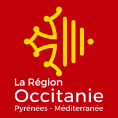

Occitanie (région administrative)
| Occitanie | |
|  Logo du conseil régional d'Occitanie | |
Blason |
Drapeau |
| Administration | |
|---|---|
| Pays | France |
| Siège du conseil régional | Toulouse (siège principal) Montpellier (siège des assemblées plénières) |
| Préfecture | Toulouse |
| Départements et collectivités territoriales | Ariège (09) Aude (11) Aveyron (12) Gard (30) Haute-Garonne (31) Gers (32) Hérault (34) Lot (46) Lozère (48) Hautes-Pyrénées (65) Pyrénées-Orientales (66) Tarn (81) Tarn-et-Garonne (82) |
| Arrondissements | 36 |
| Cantons | 249 |
| Communes | 4 454 |
| Conseil régional | Conseil régional d'Occitanie |
| Présidente du conseil régional | Carole Delga (PS) 2016-2021 |
| Préfet | Étienne Guyot |
| ISO 3166-2 | FR-OCC |
| Démographie | |
| Gentilé | Occitan, Occitane[réf. nécessaire] |
| Population | 5 885 496 hab. (2018) |
| Densité | 81 hab./km2 |
| Rang (population) | 5e sur 18 |
| Langues régionales |
Occitan (languedocien, gascon, auvergnat, provençal) Catalan |
| Géographie | |
| Superficie | 72 724 km2 |
| Rang | 3e sur 18 |
| Localisation | |

| |
| Liens | |
| Site web | www.laregion.fr [archive] |
| modifier | |
L'Occitanie (en occitan : Occitània /utsiˈtanjɔ/, en catalan : Occitània /uksiˈtaniə/) est une région administrative française résultant de la fusion des anciennes régions Languedoc-Roussillon et Midi-Pyrénées. Créée par la réforme territoriale de 2014, elle comporte 13 départements. Son chef-lieu est Toulouse.
Elle s'étend sur 72 724 km2 ce qui en fait la troisième plus vaste région de France derrière la Nouvelle-Aquitaine et la Guyane, et la deuxième de France métropolitaine[1]. Elle compte 5 808 435 habitants (population municipale au [2]), et constitue ainsi la cinquième région française (et métropolitaine) la plus peuplée. Sa densité de population est inférieure à la moyenne de la France métropolitaine, avec 80 hab./km2, soit la sixième plus faible densité parmi les régions françaises (et la quatrième parmi les régions métropolitaines). Mais sa population est très inégalement répartie, avec deux métropoles importantes (Toulouse et Montpellier), un littoral méditerranéen assez densément peuplé, et des régions rurales appartenant à la « diagonale du vide ».
Sa plus grande ville est Toulouse, qui est également la préfecture régionale, tandis que la deuxième métropole régionale, Montpellier, conserve plusieurs administrations[3]. Le siège, les administrations et les directions générales du Conseil régional sont installées à Toulouse et les assemblées délibérantes se tiennent à Montpellier.
Disposant d'une façade maritime sur la mer Méditerranée, elle réunit des territoires du bassin aquitain à l'ouest (Gers, nord des Hautes-Pyrénées et de l'Ariège, centre et nord de la Haute-Garonne, centre et ouest du Tarn-et-Garonne, ouest du Tarn, sud du Lot), des Pyrénées au sud (sud des Hautes-Pyrénées, Haute-Garonne et Ariège, sud de l'Aude et ouest des Pyrénées-Orientales), du Massif central au nord (Aveyron et Lozère, centre et nord du Lot, est du Tarn-et-Garonne et du Tarn, nord de l'Aude, de l'Hérault et du Gard) et du bassin méditerranéen à l'est (est des Pyrénées-Orientales, sud de l'Aude, de l'Hérault et du Gard). Elle est bordée par les régions Nouvelle-Aquitaine à l'ouest, Auvergne-Rhône-Alpes au nord et Provence-Alpes-Côte d'Azur à l'est, ainsi que par l'Espagne et l'Andorre au sud.
Toponymie et logotype[modifier | modifier le code]
Temporairement appelée Languedoc-Roussillon-Midi-Pyrénées, le nom « Occitanie » est officiel depuis le et effectif depuis le [4]. S'il est sous-titré « Pyrénées-Méditerranée »[5] par le conseil régional, ce sous-titre n'apparaît pas dans le Journal officiel de la République française. La loi avait prévu, dans un premier temps, de nommer les régions fusionnées en juxtaposant les noms des anciennes régions par ordre alphabétique. La région est donc provisoirement nommée « Languedoc-Roussillon-Midi-Pyrénées » en attendant qu'un nouveau nom soit choisi par décret en Conseil d'État sur proposition du conseil régional de la région fusionnée, décision devant intervenir avant le [6].
Le , le conseil régional réuni en assemblée plénière vote en faveur de l'adoption du nom Occitanie. Ce nom sera accompagné de la signature Pyrénées-Méditerranée dans l'ensemble de la communication officielle de la région. Le nom est validé par le Conseil d'État et le Gouvernement, et publié au journal officiel le [15]. En 2016 puis en 2017, le Conseil d’État rejette des recours catalans voulant faire adopter le nom Occitanie-Pays catalan[16].
Le logo, réalisé par Léa Filipowicz[17], reprend les motifs de la croix occitane (ou croix « cathare », anciennes armes des comtes de Toulouse, de gueules à la croix vidée, cléchée et pommetée d'or) et du blason du Roussillon (équivalentes aux anciennes armes des comtes de Barcelone, d’or à quatre pals de gueules). Il a été dévoilé officiellement le vendredi à Montpellier par la présidente de région Carole Delga[18].
De janvier à juin 2016.
De juin 2016 à février 2017.
Depuis février 2017.
Le conseil régional utilise deux variantes du logo sous forme de drapeau, mais a également conservé l'usage conjoint des drapeaux occitan et catalan[19] :
Drapeau catalan (Senyera).
Version rectangulaire du logo.
| Blason de la Région Occitanie | Blasonnement :
Sur écu français ancien, écartelé, aux trois premiers de gueules, au quatrième d'or à quatre pals de gueules, chargé en son cœur d'une croix cléchée, alésée, vidée et pommetée de douze pièces aussi d'or brochant sur le tout. La croix occitane et les pals catalans (ces derniers étant également utilisés par la Catalogne, l'Aragon, la Communauté valencienne, les Baléares et divers blasons dans le Sud de la France) ont toujours été déclinés dans les emblèmes des territoires qui ont constitué la région administrative Occitanie. Le nouveau blason est une réactualisation graphique de l'ancien blason du Languedoc-Roussillon. Il a été adopté par le Conseil régional d'Occitanie en 2017 à la suite de son identité visuelle[20]. |
Géographie[modifier | modifier le code]
Les extrémités régionales sont :
- Nord : Cressensac dans le Lot ;
- Est : Villeneuve-lès-Avignon dans le Gard ;
- Sud : Lamanère dans les Pyrénées-Orientales ;
- Ouest : Arrens-Marsous dans les Hautes-Pyrénées.
Les extrémités départementales sont :
Hydrographie[modifier | modifier le code]
La région Occitanie recoupe en grande partie le territoire du bassin versant de la Garonne, qui dépend de l'Agence de l'eau Adour-Garonne sise à Toulouse. Ce fleuve s'écoule sur environ 250 km sur le territoire de la région, soit près de la moitié du cours français du fleuve (522 km[21]), entre la frontière franco-espagnole au Pont-du-Roy (Fos, Haute-Garonne) et la limite avec la Nouvelle-Aquitaine à Lamagistère (Tarn-et-Garonne). Et son bassin s'étend sur 55 600 km2 en France, correspondant à la quasi-totalité de l'ancienne région Midi-Pyrénées, au nord du Languedoc-Roussillon (surtout la Lozère), et à une partie du nord de l'ancienne Aquitaine.
Neuf des dix principaux affluents de la Garonne (atteignant ou dépassant les 100 km) s'écoulent entièrement ou en grande partie en Occitanie : le Lot (environ 400 km sur les 485 km de longueur totale de la rivière s'écoulant d'est en ouest en rive droite de la Garonne, en Lozère, Aveyron et dans le département du Lot), le Tarn (380,2 km d'est en ouest en rive droite, en Lozère, Aveyron puis dans les départements du Tarn, de Haute-Garonne et du Tarn-et-Garonne), l'Ariège (163,2 km du sud-sud-est au nord-nord-ouest en rive droite, dans les Pyrénées-Orientales, le département de l'Ariège et la Haute-Garonne), le Gers (environ 150 km sur les 175 km de la rivière s'écoulant du sud au nord en rive gauche, dans les Hautes-Pyrénées et dans le département du Gers), la Save (148,4 km du sud-ouest au nord-est en rive gauche, dans les Hautes-Pyrénées, le Gers et la Haute-Garonne), la Baïse (140 km sur les 188 km du cours total s'écoulant du sud au nord en rive gauche, dans les Hautes-Pyrénées et dans le Gers), la Gimone (135,7 km du sud - sud-ouest au nord - nord-est en rive gauche, dans les Hautes-Pyrénées, le Gers, la Haute-Garonne et le Tarn-et-Garonne), l'Arrats (131 km de cours naturel et 162 km avec le canal de la Neste du sud-sud-ouest au nord-nord-est en rive gauche, dans les Hautes-Pyrénées, la Haute-Garonne, le Gers et Tarn-et-Garonne) et la Louge (100 km du sud-ouest au nord-est en rive gauche, en Haute-Garonne).
La limite orientale de la région, dans le Gard et la Lozère, se rattache pour sa part au bassin du Rhône. Plus particulièrement, elle comprend la partie occidentale du delta du Rhône, en Camargue : la Petite Camargue. Deux affluents de plus de 100 km, en rive droite du Rhône, s'écoulent du nord-ouest au sud-est dans les départements de la Lozère et du Gard : la Cèze (128,4 km) et le Gardon (127,3 km).
Le bassin de la Loire concerne pour sa part une petite partie du territoire régional, à savoir 22 communes au nord-est de la Lozère[22], département où le plus long affluent ligérien, l'Allier (420,7 km du sud au nord en rive gauche de la Loire, dont seulement 30 km en Lozère), prend sa source (au Moure de la Gardille dans la Margeride). Le point triple de rencontre des lignes de partage des eaux entre les bassins du Rhône, de la Garonne et de la Loire se trouve au sommet du Planas (1 271 m), près de la limite entre les communes de Belvezet et Allenc en Lozère.
Entre ces trois bassins versants, la plaine littorale languedocienne est traversée par deux autres fleuves de relative importance au régime pluvio-nival méridional, l'Aude (224 km du sud au nord puis d'ouest en est, dans les Pyrénées-Orientales, en Ariège, dans le département de l'Aude et dans l'Hérault) et la Têt (115,8 km d'ouest en est, dans les Pyrénées-Orientales). S'y ajoutent plusieurs fleuves côtiers au régime pluvial cévenol, dont les principaux restent l'Hérault (147,6 km du nord au sud, dans le Gard et le département de l'Hérault) et l'Orb (135,4 km du nord au sud puis du nord-ouest au sud-est, en Aveyron et dans l'Hérault).
Le sud-ouest de la région (quasi-totalité du département des Hautes-Pyrénées, partie ouest du département du Gers) est quant à lui intégré dans le bassin de l'Adour (308 km), et de ses principaux affluents : gave de Pau, Arros, Midouze. L'Adour arrose notamment la ville de Tarbes, le gave de Pau, celle de Lourdes.
De nombreuses rivières et fleuves ont creusé, dans les reliefs de roche sédimentaire de la région (surtout dans les contreforts méridionaux du Massif central), des passages encaissés appelés gorges. Peuvent ainsi être citées les gorges du Tarn, les gorges de l'Hérault, les gorges du Gardon, les gorges de l'Allier, par exemple.
De nombreuses lagunes ou étangs littoraux jalonnent la côte méditerranéenne, séparées de la mer par des cordons littoraux formés par l'apport sédimentaire du Rhône et reliées à elle par des chenaux appelés localement des graus. Le plus important de la région, qui en est également le plus grand plan d'eau (le deuxième étang méditerranéen français et la troisième plus grande étendue d'eau naturelle de France, après le lac Léman et l'étang de Berre), est l'étang de Thau (75 km2) situé dans l'Hérault, entre Agde et Sète. D'autres étangs importants sont ceux de Bages-Sigean (55 km2, dans l'Aude), de Salses-Leucate (54,8 km2, entre les Pyrénées-Orientales et l'Aude) et de l'Or (ou de Mauguio, 31,4 km2, à la limite entre l'Hérault et le Gard).
L'étang de Thau vu depuis Sète.

L'étang de l'or près de Montpellier.
Étangs de Petite Camargue au Grau-du-Roi.

Pont routier et aqueduc sur les gorges de l'Hérault.
Les gorges du Gardon.
Le pont du Gard.

La cascade d'Ars en Ariège.


Topographie et géologie[modifier | modifier le code]

La région s'étend sur une partie des deux massifs montagneux majeurs du Midi de la France : le versant nord des Pyrénées et le sud du Massif central.
Le massif pyrénéen s'étend sur environ 15 000 km2 dans la région[23], recouvrant des portions plus ou moins importantes des Hautes-Pyrénées, de Haute-Garonne, de l'Ariège, de l'Aude et des Pyrénées-Orientales. Il s'agit ainsi de 85,5 % de l'ensemble des Pyrénées françaises, et d'environ un cinquième du territoire régional. Faisant partie de la ceinture alpine et d'âge éocène, elle s'étend d'est en ouest et marque la frontière avec l'Espagne. Plus particulièrement, la région comprend les versants français des Pyrénées centrales (les plus élevées et comptant le moins de cols entre France et Espagne, le point culminant régional et des Pyrénées françaises s'y trouve, à 3 298 m au Vignemale dans les Hautes-Pyrénées) et des Pyrénées orientales ou catalanes (culminant au pic Carlit à 2 921,66 m, c'est pourtant le Canigou, qui domine la plaine du Roussillon du haut de ses 2 784 m, qui apparaît représentatif des Pyrénées catalanes). Le relief est marqué par ses vallées très encaissées d'orientation sud-nord, la rareté et l'altitude élevée de ses cols, ses nombreux torrents de montagne (appelés gaves ou nestes), la fréquence des cas où la partie supérieure d'une vallée se termine en un cirque (de Gavarnie, de Troumouse ou de Marcadau dans les Hautes-Pyrénées), l'absence de grands lacs, comparativement au massif des Alpes par exemple, et sa faible densité de population (27,5 hab./km2 en 2006 pour l'ensemble des Pyrénées françaises[24]).
Le Massif central couvre pour sa part dans la région environ 26 000 km2[25], soit la totalité de la Lozère, de l'Aveyron et du Lot, la limite est du Tarn-et-Garonne et le tiers sud-est du Tarn, ainsi que les limites nord de l'Aude, de l'Hérault et du Gard. Cela correspond à 30 % de l'ensemble du Massif central et à un peu plus du tiers du territoire régional. Ensemble de formation géologique ancienne (hercynien) et donc érodé, le relief y est relativement vallonné et moyennement élevé, alliant plateaux, basse et moyenne montagne. Le point culminant du massif dans la région est le pic de Finiels au mont Lozère (1 699 m). L'ensemble comprend des plateaux karstiques (calcaires) fortement érodés appelés causses (causses du Quercy au nord-ouest dans le Lot et le Tarn-et-Garonne, Grands Causses comme ceux du Larzac ou Méjean au centre-est dans l'Aveyron, en Lozère, dans l'Hérault et le Gard), des hauts-plateaux volcaniques et granitiques (l'Aubrac au nord dans l'Aveyron et en Lozère) ou cristalins (le Lévézou au centre dans l'Aveyron) et des massifs montagneux secondaires (Margeride au nord-est en Lozère, Cévennes à l'est en Aveyron, Lozère, dans l'Hérault et le Gard, et la succession des monts de Lacaune, de Caroux-Espinouse et de la Montagne Noire au sud entre la Haute-Garonne, le Tarn, l'Aveyron, l'Aude et l'Hérault). Ces régions sont entrecoupées de terres siliceuses acides de basse altitude (Ségala à l'ouest dans le Tarn et l'Aveyron) ou des gorges des principales rivières de la région.
Ces deux massifs se rejoignent au plus près au niveau de la Montagne Noire et du massif des Corbières, séparés par une étroite bande de plaine et de basses collines, unissant le Lauragais et le Minervois. Culminant à Naurouze (189 m), entre le pays toulousain (Haute-Garonne) et le Biterrois (Hérault) en passant par Carcassonne (Aude), ce seuil géographique relie ainsi entre eux le bassin sédimentaire qui s'étend à l'ouest jusqu'à l'Atlantique (Bassin aquitain), et à l'est la plaine littorale sablonneuse de la mer Méditerranée (côte languedocienne). Celle-ci, dans son hinterland, s'élève progressivement vers les plateaux et montagnes du Massif central par un système de reliefs intermédiaires calcaires, entre 200 et 400 m d'altitude (Garrigues).
Le sous-sol de la région possède des ressources limitées qui furent exploitées par le passé. Peuvent être citées des mines de tungstène (cirque d'Anglade à Salau dans les Pyrénées ariégeoises jusqu'en 1987, le gisement de Fumade dans le Tarn pourrait être exploité à l'avenir[26]), d'or (alimentés par des gisements alluvionnaires de très faibles teneurs, la plupart des cours d'eau du Massif central et des Pyrénées étant des rivières aurifères, peut être cité surtout la mine d'or de Salsigne dans la Montagne Noire et le département de l'Aude, fermée en 2004), de cuivre (par exemple la mine de Pioch Farrus, à Cabrières dans l'Hérault, était exploitée au Néolithique final il y a 5 000 ans), de schistes bitumineux (du lac de la Cisba à Sévérac-le-Château dans l'Aveyron jusqu'en 1951), de zinc et de plomb (à Arrens dans les Hautes-Pyrénées jusqu'en 1983, la mine de la Croix de Pallières dans les basses Cévennes gardoises est exploitée jusqu'en 1971, celle de Bentaillou dans la vallée pyrénéenne du Biros a quant-à-elle été arrêtée dès 1955) ou encore d'uranium (à Lodève dans l'Hérault jusqu'en 1997). Le sud du Massif central présente également des réserves houillères qui ont fait l'objet d'une exploitation jusqu'en 2001 dans les mines des Cévennes dans le Gard (pays d'Alès), de Decazeville dans l'Aveyron et de Carmaux dans le Tarn.
Le Canigou vu depuis la plaine du Roussillon.
Le cirque de Gavarnie dans les Pyrénées.
Le Couserans (Ariège) dans le Piémont pyrénéen.
Ce cadre topographique et géologique particulier, ainsi que la situation de la région, contribuent à créer certaines particularités climatiques locales.
Climat[modifier | modifier le code]
La région Occitanie est à cheval sur trois grands domaines climatiques : le littoral languedocien est soumis au climat méditerranéen (Csa, voire tendant vers le Csb dans certaines zones, selon la classification de Köppen) ; le bassin aquitain a un climat océanique légèrement plus chaud car plus au sud (climat océanique aquitain, Cfb de Köppen) ; le Massif central et les Pyrénées détiennent un climat sous influence montagnarde (seuls les plus hauts sommets des Pyrénées ont un climat montagnard). L'espace situé entre le toulousain et le seuil du Lauragais est soumis à un climat méditerranéen sous influence à la fois océanique et montagnarde.
Dans le climat méditerranéen, l’amplitude annuelle est assez limitée, étant de 14 °C à Perpignan, de 15 °C à Sète, de 17 °C à Montpellier et de 18 °C à Nîmes. Ces valeurs sont comparables à celles des climats semi-océaniques, malgré la latitude souvent plus basse. Les hivers sont toutefois un peu plus doux que ceux de la façade ouest : la température moyenne de janvier va de 6,9 °C à Nîmes à 8,4 °C à Perpignan, le nombre de jours de gel annuel est de 8,5 à Sète et de 12,1 au Grau-du-Roi sur la côte, de 13,5 à Perpignan et de 25,3 à Montpellier, à quelques km du littoral. Les étés sont par définition chauds et secs ; la température moyenne de juillet va de 23 °C à Sète à 24,9 à Nîmes. Le minimum de pluie en été est accusé en juillet, 12,4 mm ou 13,1 mm sur le littoral respectivement au Grau-du-Roi et à Sète mais 16,4 mm à Montpellier, 17,1 mm à Perpignan et 28,2 mm à Nîmes. L'ensoleillement, comme sur l'ensemble du pourtour méditerranéen, y est très élevé : en moyenne, 2 506 heures par an à Perpignan, 2 663 à Nîmes et 2 668,2 à Montpellier.
Pour le climat méditerranéen sous influence océanique, les températures moyennes sont légèrement plus basses, en hiver comme en été, et les précipitations sont plus fortes. Ainsi, à Toulouse et Albi si l'amplitude annuelle reste à peu près identiques à celles du littoral languedocien (16 °C), les moyennes thermiques de janvier (5,9 °C) et de juillet (22 °C) sont inférieures de 1 à 3 °C, tandis que le mois le moins pluvieux, qui reste juillet, connaît 37,7 mm de précipitations. L'ensoleillement y est moins important (2 031 heures par an à Toulouse et 2 200 heures à Albi).
Concernant le climat océanique aquitain, les hivers restent plutôt doux (en janvier 5 °C à Gourdon, 5,2 à Auch, 5,5 à Montauban) avec des gelées qui peuvent toutefois être sévères. Sur la période 1971-2000, les minima absolus sont de −20 °C à Montauban. Les étés sont plus chauds que dans le type océanique des territoires situés plus au nord (en juillet 20,3 °C à Gourdon, 20,7 °C à Auch, 22,5 °C à Montauban) et orageux. Comme pour le domaine parisien, l’amplitude s’accroît avec l'éloignement par rapport au littoral mais reste dans des limites raisonnables, avec 15,5 °C à Auch. Les précipitations sont régulières toute l’année, mais contrairement au domaine « parisien », le minimum estival persiste le plus souvent y compris quand on va vers l’est. On note aussi un maximum de printemps qui n’existe pas au nord, en particulier au pied des Pyrénées. Ces pluies sont modérées au centre du bassin (Montauban 747 mm/an) et s’accroissent à l’approche des massifs (Gourdon 883 mm/an). L'ensoleillement diminue quand on s’approche des Pyrénées-Atlantiques avec 1 866 heures par an à Auch, et augmente vers l'est et la Méditerranée : Gourdon 2 054 heures et Albi 2 200 heures. Bien que ce climat soit plus méridional que le type « parisien », les brouillards ou nuages bas hivernaux par temps anticyclonique sont encore fréquents.
Carte des climats de France métropolitaine hors Corse en 2010.
Carte schématique expliquant le phénomène d'épisode cévenol et méditerranéen.
Schéma explicatif de l'effet de foehn : variation de la température en amont et en aval de l'obstacle.
Dans les massifs du nord et du sud de la région, avec l'altitude, la température diminue et, pour les versants exposés aux vents pluvieux, les précipitations augmentent. Dans les petits massifs et les contreforts externes, le climat montagnard correspond au climat de la plaine voisine modifié par l’altitude. Les hivers deviennent nettement plus froids qu'en plaine, la température moyenne de janvier reste toutefois positive en moyenne montagne : 0,6 °C à Mende (1 019 m). Cette température hivernale devient toutefois nettement négative dans les vallées encaissées ou lorsque l'altitude augmente comme au Mont Aigoual (1 567 m) avec −1,4 °C. Là où la température moyenne hivernale est inférieure à 0 °C, la neige tombe régulièrement et tient longtemps en hiver. Les étés sont frais, le mont Aigoual enregistre une moyenne de juillet de 13,1 °C. La diminution de la température avec l’altitude n’est pas uniforme selon la saison, elle est plus marquée au printemps et en été qu’en automne et en hiver ce qui fait que l’amplitude annuelle tend à être plus faible en altitude que dans les plaines environnantes. Le rythme de l’ensoleillement est différent, en hiver par temps anticyclonique, les massifs surplombent généralement la couche d’inversion, ils sont alors ensoleillés et relativement doux tandis que la plaine reste dans le froid et la grisaille. En été, les cumulus sont plus nombreux près des sommets, les massifs connaissent un temps nuageux avec des orages en fin d’après-midi alors que le temps reste bien ensoleillé en plaine. La montagne tend à être plus ensoleillée que la plaine en hiver, et inversement en été.
Le cadre topographique de la région crée également des phénomènes climatiques et météorologiques spécifiques. Notamment, les reliefs créent les conditions de développement de vents relativement violents, par accélérations des vents maritimes, océaniques ou nordiques du fait de l’effet de canalisation (effet Venturi) des massifs environnants (Massif central et Pyrénées dans le seuil du Lauragais, Massif central et Alpes par le couloir rhodanien au nord-est). Ainsi, trois vents de couloir marquent régulièrement les territoires de la région : provenant du Lauragais, le vent d'autan souffle depuis le sud-est / sud-sud-est dans la partie orientale du bassin aquitain et le sud-ouest du Massif central, tandis que la tramontane vient en sens inverse du nord-nord-ouest vers le littoral languedocien[27],[28]. Le mistral provient du nord – nord-est par la vallée du Rhône, et affecte surtout la partie orientale de la plaine languedocienne et le sud-est du Massif central. Ces vents, généralement puissants, assèchent l’air, dégagent le ciel et, en hiver dans le climat méditerranéen, peuvent provoquer des épisodes froids plus fréquents que dans les régions protégées comme la Côte d'Azur.
La rencontre de l'air froid océanique avec de l'air chaud et humide porté par des vents provenant du Golfe du Lion (appelés « entrées maritimes »), et l'accumulation des masses nuageuses ainsi formées sur les reliefs du sud du Massif central (essentiellement les Cévennes), provoquent des phénomènes orageux violents. Appelés « épisodes cévenols », ils affectent surtout le Gard, l'Hérault et la Lozère (un phénomène identique existant dans l'Aude avec la Montagne Noire), essentiellement en automne. Des mois de précipitations peuvent alors s’abattre en quelques jours, provoquant le gonflement des fleuves côtiers (appelés rivières cévenoles) et des inondations en plaine, causant alors des dégâts importants.
Dans le piémont pyrénéen et le bassin aquitain, en automne et en hiver, le vent de sud à sud-ouest peut amener un temps sec et exceptionnellement chaud pour la saison, à cause de l’effet de foehn dû au franchissement des Pyrénées par une masse d’air doux en provenance d’Espagne. Ce phénomène peut favoriser les incendies forestiers.

Orage à Port-la-Nouvelle, Aude.
Forêt enneigée le long de la piste de ski de fond de Prat Peyrot, mont Aigoual.
Nuages lenticulaires engendrés par des ondes orographiques associées à un épisode de tramontane au-dessus de Port Leucate, Aude.
Le Lez en crue à Montpellier lors des épisodes cévenols du .

Régime de foehn dans les Pyrénées caractérisé par une bande de ciel bleu (le trou de fœhn) puis, en aval du phénomène, des nuages « soufflés » traduisant un vent puissant.
Début d'incendie par régime de foehn dans les Hautes-Pyrénées.


Ces particularités climatiques locales combinées à la grande variété de reliefs, d'espace aquatiques et de nature des sols permet l'épanouissement d'une flore et d'une faune abondante et fortement diversifiée.
Environnement[modifier | modifier le code]
Les faibles densités des territoires montagnards ont permis le maintien de milieux naturels relativement étendus, préservés et divers. Les surfaces agricoles couvrent 48 % de la superficie régionale, complétés par 43 % de forêts et 2 % d'autres espaces naturels (et les massifs forestiers ont tendance à croître du fait de la déprise agricole connue dans la diagonale des faibles densités ou des politiques publiques). Ainsi, un habitant d'Occitanie dispose, en moyenne, de 1,5 fois plus d'espace naturel et agricole que dans l'ensemble de la France métropolitaine, et les Zones naturelles d'intérêt écologique, faunistique et floristique (ZNIEFF) couvrent 52 % du territoire régional (contre 24 % pour l'ensemble de la France métropolitaine)[29]. Trois espaces forestiers de la région sont en cours de labellisation « Forêt d'Exception » par l'Office national des forêts (ONF) en 2018 : ceux du Mont Aigoual entre le Gard et la Lozère, des Camporells dans les Pyrénées-Orientales et du Mont Valier en Ariège.
Ces régions naturelles servent de biotopes à des biocénoses spécifiques et qui font l'objet de politiques de préservation. En nombre d'espèces, l'Occitanie (et surtout l'ancien Languedoc-Roussillon) est l'une des trois régions françaises les plus importantes en termes de biodiversité, avec Provence-Alpes-Côte d'Azur et la Corse[30]. Quatre des quatorze réserves de biosphère reconnus par l'Unesco en France sont situées au moins partiellement dans la région : la Camargue (dans le Gard), les Cévennes (en Lozère et dans le Gard), le bassin versant de la Dordogne (dans le Lot) et les gorges du Gardon (dans le Gard exclusivement). Parmi les zones d'endémisme ou de sub-endémisme, figurent les massifs montagneux des Pyrénées (par exemple, le desman des Pyrénées ou l'euprocte des Pyrénées), les Cévennes, les Causses et la Montagne Noire au sud du Massif central (surtout des espèces végétales comme l'Ophrys de l'Aveyron, des mollusques ou des insectes), le massif de la Clape dans l'Aude, la montagne d'Alaric dans les Corbières ou les Albères, mais aussi les fleuves côtiers de la plaine littorale (chabot du Lez, chabot de l'Hérault et vairon de Septimanie) ou les gaves pyrénéens[30]. Plusieurs plans nationaux d'action pour la réintroduction ou la restauration d'espèces vulnérables ou disparues ont concerné la région Occitanie, à commencer par la réintroduction de l'ours dans les Pyrénées menée en 1996-1997 et 2006 en Haute-Garonne et dans les Hautes-Pyrénées[31].
Autre animal emblématique dans la région, mais causant de vives tensions avec les populations vivant de l'élevage qui avaient entraîné son extermination progressive et sa disparition du territoire français dans les années 1940, le loup gris est réapparu dans les Alpes dans les années 1990 et dans les massifs d'Occitanie de manière attestée dans les années 2000 et 2010. En 2016-2017, sept zones de présence permanente (ZPP) du loup étaient attestées dans la région, dont quatre dans le sud du Massif central (l'Aubrac ainsi que les Grands Causses et le Mont Lozère entre Aveyron et Lozère, le Caroux dans l'Hérault, et le Tanargue ainsi que le Moure de la Gardille en Lozère mais aussi en Ardèche et en Haute-Loire) et dans l'est des Pyrénées (sur les pics du Carlit et du Puig de Campcardós, le Puigmal et le Canigou, et le Razès dans les Pyrénées-Orientales et l'Aude)[32].
La région compte plusieurs aires protégées parmi lesquelles on compte le parc national des Pyrénées (dont une partie est classée au patrimoine mondial dans le site Pyrénées-Mont Perdu), le parc national des Cévennes et le parc naturel régional des Grands Causses (qui font partie du site Les Causses et les Cévennes classé au patrimoine mondial), le parc naturel régional du Haut-Languedoc, le parc naturel régional des Causses du Quercy, le parc naturel régional de la Narbonnaise en Méditerranée, le parc naturel régional des Pyrénées catalanes, le parc naturel régional des Pyrénées ariégeoises, le parc naturel régional de l'Aubrac, le parc naturel marin du golfe du Lion et les cinq sites classés au label Grand Site de France du pont du Gard, de Saint-Guilhem-le-Désert et Gorges de l'Hérault, du massif du Canigou, de la Petite Camargue et du cirque de Navacelles.
En revanche, les plus basses altitudes de la plaine littorale et du bassin toulousain, historiquement les plus denses et les plus urbanisées, concentrent la quasi-totalité du développement démographique et économique connu par la région depuis les années 1960 (avec l'attractivité des deux métropoles ou le tourisme de masse sur le littoral méditerranéen). Il en résulte une pression anthropique de plus en plus marquée, provoquant l'artificialisation de terres agricoles ou d'espaces naturels (berges des cours d'eau et étangs, cordons littoraux, garrigues...) par étalement urbain, la segmentation de l'espace par le bâti et les axes de circulation, l'appauvrissement des sols et les pollutions par exemple par les intrants agricoles, l'érosion des dunes sur le littoral, entre autres[29].
Géographie humaine[modifier | modifier le code]
La répartition géographique de la population en Occitanie est caractérisée par la macrocéphalie de Toulouse et Montpellier, une plaine littorale méditerranéenne densément peuplée et urbanisée, un hinterland toulousain agricole et des massifs montagneux faisant partie de la « diagonale des faibles densités ».
L'armature urbaine de l'espace régional est établi pour l'essentiel depuis le Moyen Âge central, durant lequel l'essor urbain que connaît alors l'Occident chrétien — et tout particulièrement les régions méditerranéennes — permet de compléter un premier réseau hérité de l'Antiquité[33].
Depuis, si la hiérarchie urbaine a peu évolué et la croissance urbaine a été très limitée pendant toute l'époque moderne et la Révolution industrielle, le dynamisme économique et démographique connu depuis le dernier tiers du XXe siècle a fortement contribué aux espaces urbains. Il a été accompagné par un phénomène de métropolisation, avec une densification d’espaces périurbains ou interstitiels de plus en plus vastes le long des axes autour de Toulouse et sur le littoral où se forme « un quasi continuum urbain ». De même, si cet essor a profité, en règle générale, à l'ensemble des villes, il a fortement contribué à creuser les écarts entre, d'une part, les deux principales métropoles régionales, Toulouse et Montpellier, et, d'autre part, les autres agglomérations[34].
Cette armature comprend à l'ouest un système monocentré et constitué de villes moyennes (Montauban, Albi, Castres, Pamiers, Auch, Carcassonne, voire Cahors et, en dehors de la région, Agen) disposées en étoile autour de la métropole toulousaine ; à l'est, des grandes villes (dont surtout Montpellier, mais aussi Perpignan et Nîmes) et des centres urbains plus modestes (Béziers, Narbonne, Sète) qui s'étendent en chapelet dans la plaine littorale depuis Avignon au nord-est jusqu'à Perpignan au sud-ouest. En dehors de ces deux réseaux principaux, en situation de piémont, quelques agglomérations d'une relative importance complètent ce maillage (Alès en avant des Cévennes dans le Gard, Rodez au pied des Grands Causses dans l'Aveyron ou Tarbes dans le piémont pyrénéen)[réf. souhaitée].
| Nom | Code Insee |
Département | Superficie (km2) |
Population (dernière pop. légale) |
Densité (hab./km2) |
Modifier |
|---|---|---|---|---|---|---|
| Toulouse | 31555 | Haute-Garonne | 118,30 | 486 828 (2018) | 4 115 | |
| Montpellier | 34172 | Hérault | 56,88 | 290 053 (2018) | 5 099 | |
| Nîmes | 30189 | Gard | 161,85 | 149 633 (2018) | 925 | |
| Perpignan | 66136 | Pyrénées-Orientales | 68,07 | 119 188 (2018) | 1 751 | |
| Béziers | 34032 | Hérault | 95,48 | 77 599 (2018) | 813 | |
| Montauban | 82121 | Tarn-et-Garonne | 135,17 | 60 952 (2018) | 451 | |
| Narbonne | 11262 | Aude | 172,96 | 55 375 (2018) | 320 | |
| Albi | 81004 | Tarn | 44,26 | 48 993 (2018) | 1 107 | |
| Carcassonne | 11069 | Aude | 65,08 | 46 513 (2018) | 715 | |
| Sète | 34301 | Hérault | 24,21 | 43 686 (2018) | 1 804 | |
| Castres | 81065 | Tarn | 98,17 | 41 795 (2018) | 426 | |
| Tarbes | 65440 | Hautes-Pyrénées | 15,33 | 42 426 (2018) | 2 768 | |
| Alès | 30007 | Gard | 23,16 | 40 802 (2018) | 1 762 | |
| Colomiers | 31149 | Haute-Garonne | 20,83 | 39 097 (2018) | 1 877 | |
| Agde | 34003 | Hérault | 50,81 | 29 090 (2018) | 573 | |
| Tournefeuille | 31557 | Haute-Garonne | 18,17 | 27 688 (2018) | 1 524 | |
| Lunel | 34145 | Hérault | 23,90 | 26 273 (2018) | 1 099 | |
| Blagnac | 31069 | Haute-Garonne | 16,88 | 25 152 (2018) | 1 490 | |
| Muret | 31395 | Haute-Garonne | 57,84 | 24 813 (2018) | 429 | |
| Rodez | 12202 | Aveyron | 11,18 | 24 319 (2018) | 2 175 | |
| Frontignan | 34108 | Hérault | 31,72 | 22 731 (2018) | 717 | |
| Auch | 32013 | Gers | 72,48 | 22 200 (2018) | 306 | |
| Millau | 12145 | Aveyron | 168,23 | 22 002 (2018) | 131 | |
| Castelnau-le-Lez | 34057 | Hérault | 11,18 | 21 838 (2018) | 1 953 |
| Ville | Aire urbaine 2016 (habitants) |
Unité urbaine 2016 (habitants) |
|---|---|---|
| Toulouse | 1 345 343 | 957 750 |
| Montpellier | 607 896 | 434 933 |
| Perpignan | 323 336 | 201 807 |
| Nîmes | 268 087 | 185 295 |
| Béziers | 173 258 | 91 455 |
| Tarbes | 115 886 | 75 506 |
| Alès | 114 893 | 95 162 |
| Montauban | 111 499 | 78 754 |
| Albi | 99 293 | 74 426 |
| Carcassonne | 99 041 | 48 456 |
| Narbonne | 93 576 | 53 594 |
| Sète | 90 970 | 90 970 |
| Rodez | 86 745 | 50 498 |
| Castres | 67 698 | 56 352 |
| Saint-Cyprien | 53 623 | 53 623 |
| Lunel | 51 042 | 51 042 |
Carte de la population en Occitanie[modifier | modifier le code]
|
Transports[modifier | modifier le code]
L'organisation des réseaux de transport correspond à la répartition de la population dans la région, et propose des modes de déplacements assez diversifiés.
Transports aériens[modifier | modifier le code]
_MSN_001_-_F-WXWB_(10498340214).jpg?uselang=fr)
La région possède 10 aéroports, dont les plus importants sont ceux de Toulouse-Blagnac (9 264 611 passagers en 2017) et de Montpellier-Méditerranée (1 849 410 passagers en 2017)[36] possédant de nombreuses liaisons internationales vers l’Europe et le Maghreb. La région possède également beaucoup d’aéroports de plus petite capacité comme Nîmes-Garons, Perpignan-Rivesaltes, Carcassonne-Salvaza, et Béziers-Cap d’Agde, ayant de nombreuses lignes aériennes quotidiennes vers le Royaume-Uni notamment. L’aéroport de Tarbes-Lourdes-Pyrénées quant à lui accueillent le trafic charter touristico-religieux international à destination de Lourdes. Enfin, la région possède également des aéroports d’importance régionale comme Brive-Souillac, Castres-Mazamet ou encore Rodez-Marcillac.
Transports routiers[modifier | modifier le code]

La région est traversée par les autoroutes A9, A20, A54, A61, A62, A64, A66, A68, A75, A620, A621, A623, A624, A645, A680, A709 et A750.
Quatre routes européennes de classe A passent sur le territoire régional : l'E9 (axe Orléans-Barcelone, passant dans la région par l'A20, l'A62, l'A61, l'A66 et la N20), l'E11 (Vierzon-Béziers, constitué dans la région par l'A75), l'E15 (une des routes de référence « nord-sud » entre Inverness en Écosse jusqu'à Algésiras en Andalousie en passant notamment par Londres, Paris, Lyon et Barcelone, son tracé dans la région correspond exclusivement à l'A9), l'E72 (Bordeaux-Toulouse via l'A62), l'E80 (route de référence « est-ouest » entre Lisbonne et la frontière Turquie-Iran en passant, entre autres, par Vitoria-Gasteiz, Toulouse, Montpellier, Nice, Rome, Dubrovnik, Sofia et Istanbul, dans la région Occitanie elle suit le parcours de l'A64, l'A620, l'A61, l'A9 et l'A54).
L'organisation du réseau routier est double. Tout d'abord, il est structuré en étoile autour de Toulouse dans la partie occidentale de la région, l'axe le plus important étant « l'autoroute des Deux Mers » reliant Bordeaux à Narbonne en passant par le chef-lieu régional mais aussi Montauban au nord-ouest et Carcassonne au sud-est, constituée des A62 et A61, la jonction entre ces deux dernières formant la moitié orientale du périphérique de Toulouse. Les autres voies importantes de cet ancien réseau « midi-pyrénéen », qui rayonnent à partir de cet autoroute des Deux Mers ou de l'A620 (ancienne « rocade ouest » et actuelles portions occidentales et méridionales du périphérique de Toulouse) sont l'A64 « La Pyrénéenne » vers Tarbes au sud-ouest et au-delà Pau et Bayonne ainsi que l'A645 « bretelle du Val d'Aran » vers l'Espagne, l'A66 « L'Ariégeoise » et la RN20 vers Pamiers et Foix au sud, l'A68 « Autoroute du Pastel » (doublée par l'A680 en cours d'extension jusqu'à Castres) et la RN88 vers Albi et Rodez au nord-est et au-delà jusqu'à Lyon, l'A20 « L'Occitane » de Montauban vers Cahors au nord et au-delà jusqu'à Vierzon, l'A621 « Fil d'Ariane » vers l'aéroport de Blagnac au nord-ouest, l'A624 et la RN124 vers Auch à l'ouest et au-delà Mont-de-Marsan. La convergence de toutes ces autoroutes radiales ainsi que l'importance des migrations pendulaires dans l'aire urbaine toulousaine font du périphérique de Toulouse l'axe routier le plus fréquenté d'Occitanie, avec, en 2016 et en moyenne, plus de 93 000 véhicules/j recensés sur toutes les stations permanentes de comptage de cette rocade (chiffre montant à plus de 130 000 et jusqu'à 140 000 véhicules/j sur les portions sud-ouest, et à plus de 120 000 au nord-ouest et au nord-est)[37].
.JPG?uselang=fr)
Le réseau est en revanche plus linéaire sur la plaine littorale méditerranéenne, organisé à partir de l'A9 « La Languedocienne - La Catalane » (doublée de l'A709 pour la desserte de l'agglomération de Montpellier et complétée à partir de Nîmes vers Arles et Salon-de-Provence à l'est par l'A54) et des principales voies ferrées qui suivent pratiquement le tracé de l'antique Voie Domitienne. Le fait qu'elle desserve plusieurs agglomérations importantes (Nîmes, Perpignan et surtout Montpellier, mais aussi, au-delà de la frontière orientale de la région, Avignon) et un littoral touristique très fréquenté l'été (avec les stations balnéaires de la mission Racine), tout en faisant partie d'un axe européen reliant entre elles plusieurs métropoles européennes voire mondiales (Paris, Lyon, Marseille, Barcelone) et générant d'importants flux commerciaux, font de l'A9 l'une des autoroutes les plus fréquentées (et l'une des plus congestionnées) de France[38],[39]. Elle est toujours, hors périphérique, l'axe routier le plus utilisé de la région en 2016, surtout entre Montpellier et Nîmes (environ 90 000 véhicules/j en moyenne pour toutes les stations permanentes de ce tronçon, allant jusqu'à 119 500 véhicules/j à Montpellier-Est). Si l'intensité de ce trafic se réduit progressivement entre Montpellier et la frontière franco-espagnole (32 600 véhicules/j au Perthus en moyenne en 2016), ce sont surtout les véhicules personnels qui utilisent moins ce tronçon tandis que le nombre de poids lourds y est toujours très important (représentant entre 20 % et 30 % du trafic)[37].
Enfin, une pénétrante permettant de relier cet axe littoral méditerranéen au Massif central a été aménagée progressivement entre 1989 et 2014 : l'A75 « La Méridienne » de Béziers jusqu'à la partie occidentale de la Lozère et au-delà jusqu'à Clermont-Ferrand au nord, symbolisée par le viaduc de Millau (seule portion payante) et reliée à Montpellier par l'A750 « L'Héraultaise ».
La frontière franco-espagnole est franchie en montagne par le tunnel Aragnouet-Bielsa, et des cols comme le col d'Ares ou le col du Perthus.
Transports ferroviaires[modifier | modifier le code]

L'organisation de ce réseau reprend les caractéristiques du réseau routier. Il est ainsi étoilé à partir de la gare de Toulouse-Matabiau dans l'ancien Midi-Pyrénées, avec pour axe principal la transversale entre Atlantique et Méditerranée : la ligne de Bordeaux-Saint-Jean à Sète-Ville. Il est en revanche plus linéaire dans l'ancien Languedoc-Roussillon, avec pour épine dorsale l'axe desservant les villes principales de la plaine littorale et constitué successivement de la ligne de Tarascon à Sète-Ville, de la fin de la ligne de Bordeaux-Saint-Jean à Sète-Ville entre Sète et Narbonne et de la ligne de Narbonne à Port-Bou jusqu'à la frontière. Ces grandes voies sont connectées au réseau national et international, et sont empruntées aussi bien par le Transport express régional (TER), des Intercités et Intercités de nuit, des TGV et des trains d’Alta Velocidad Española (AVE), ainsi que des trains de fret.
Les gares les plus importantes de la région sont toutes situées sur l'un de ces deux axes, à savoir celles de Toulouse-Matabiau, avec environ 10 millions de voyageurs en 2015, de Montpellier-Saint-Roch, avec 8 millions de voyageurs la même année, de Nîmes, 3,8 millions, de Perpignan, 1,6 million, de Narbonne, 1,4 million, de Béziers, 1,3 million, de Montauban-Ville-Bourbon, 1,1 million, de Sète, 1 million, et de Carcassonne, 800 000.
Les petites lignes, presque exclusivement desservies par des TER, connectent ces gares à l'arrière-pays rural et les régions montagneuses du Massif central et les Pyrénées, avec par exemple : depuis Toulouse, la ligne de Saint-Agne à Auch (depuis la gare de Toulouse-Saint-Agne vers l'ouest et Auch), la ligne de Toulouse à Bayonne (depuis Matabiau vers le sud-ouest, Tarbes et Lourdes, puis Pau et finalement Bayonne), le Transpyrénéen Oriental (depuis la gare de Portet-Saint-Simon dans la banlieue de Toulouse vers le sud, Pamiers, Foix et finalement les gares de Latour-de-Carol - Enveitg, où il se connecte avec la ligne de Cerdagne dite aussi du « train jaune » qui rallie Villefranche - Vernet-les-Bains et au-delà la ligne descendant jusqu'à Perpignan) et la ligne de Brive-la-Gaillarde à Toulouse (depuis Matabiau vers le nord-est, en passant par Saint-Sulpice d'où part un embranchement vers Castres et Mazamet, par Gaillac puis par Figeac, qui permettent toutes deux de connecter via une dérivation les gares d'Albi-Ville, d'Albi-Madeleine et de Rodez) ; depuis Montauban-Ville-Bourbon, la ligne Orléans - Limoges - Montauban au départ de la Gare de Paris-Austerlitz (vers le nord-est, elle passe par la gare de Cahors) ; depuis Carcassonne, la ligne de Carcassonne à Rivesaltes (vers le sud, à voie unique, elle n'est plus desservie par les TER que jusqu'à Quillan en passant par Limoux, certaines portions en amont et jusqu'à Rivesaltes pouvant encore être utilisées pour le transport de minéraux ou par le train du pays Cathare et du Fenouillèdes, un train touristique) ; depuis Béziers, la ligne des Causses (vers le nord, elle dessert Bédarieux, Millau, Sévérac-le-Château et la partie occidentale de la Lozère avec Marvejols et Saint-Chély-d'Apcher, avant de continuer jusqu'à Neussargues dans le Cantal) ; depuis Nîmes, la ligne de Saint-Germain-des-Fossés à Nîmes (sur laquelle circule le train Le Cévenol, depuis la gare de Nîmes vers le nord-ouest, qui dessert Alès, les Cévennes à Génolhac, la partie orientale de la Lozère avec La Bastide - Saint-Laurent-les-Bains puis Langogne, et au-delà jusqu'à Clermont-Ferrand) et la ligne de Saint-Césaire au Grau-du-Roi (depuis la gare de Saint-Césaire sur une voie unique vers le sud-ouest, desservant la Petite Camargue jusqu'à la mer avec Aigues-Mortes et le Grau-du-Roi, très fréquentée l'été)[40].

La région Occitanie dispose de la gestion du réseau TER Occitanie, hérité des deux réseaux TER des anciennes régions Midi-Pyrénées et Languedoc-Roussillon : le TER Midi-Pyrénées représentant, en 2010, 356 circulations de train et 80 circulations d'autocar par jour de pleine semaine[41], et le TER Languedoc-Roussillon, avec, la même année, 236 circulations de train et 53 circulations d'autocar par jour de pleine semaine[42]. En 2016, la fréquentation est, sur ce réseau, de 21 millions de voyageurs sur les 543 trains des 20 lignes ferroviaires et 43 lignes par autocar du réseau, circulant sur un réseau ferroviaire de 2 514 km et entre 274 gares et points d'arrêt. Le nombre de voyageurs par moyenne journalière est de 56 000 environ, ce qui équivaut à 3,66 voyages par habitant et par an[40].
En 2016, pour les transports ferroviaires, le budget annuel de la région Occitanie s'élève à 484 millions d'euros. Entre la régionalisation des TER et 2016, l'Occitanie ou ses deux prédécesseurs ont investi 2 milliards d’euros environ pour le transport ferroviaire[43]. Entre 2002 et 2016, la région a financé 153 nouvelles rames, aménagé 65 pôles d’échange, et a remis à neuf 130 gares régionales ainsi que 600 kilomètres de lignes ferroviaires régionales[43]. En passant de 13,1 millions de voyageurs annuels en 2002 à 20,8 millions en 2014, le trafic voyageurs a augmenté de 60 %[43]. En , le réseau TER fusionne avec celui des autocars, du transport scolaire et du transport à la demande régional pour former les Lignes intermodales d'Occitanie (LiO).
La région est traversée par trois lignes à grande vitesse (LGV), traversant une partie de la plaine littorale et faisant partie d'un axe radial européen allant de Paris à Madrid : la LGV Méditerranée (mise en service en 2001, elle dessert la gare de Nîmes et la future gare TGV de Nîmes - Manduel - Redessan depuis la gare de Valence TGV et, au-delà par les LGV Rhône-Alpes et Sud-Est, depuis Paris-Gare-de-Lyon en passant par la gare de Lyon-Part-Dieu, ou depuis la gare de Marseille-Saint-Charles), le contournement Nîmes – Montpellier (qui prolonge la précédente depuis 2017 pour le fret et à partir de 2018 pour les voyageurs jusqu'à la nouvelle gare de Montpellier-Sud-de-France) et la LGV Perpignan - Figueras (qui relie, depuis une ouverture au trafic progressive entre 2010 et 2013, la gare de Perpignan à celle de Figueras-Vilafant de l'autre côté de la frontière avec l'Espagne et, au-delà, vers les gares de Gérone, de Barcelone-Sants puis celle future de Barcelone-Sagrera TAV, de Saragosse-Delicias et finalement de Madrid-Atocha par la LGV espagnole Madrid-Barcelone-Figueras). Plusieurs lignes sont en projet ou en réalisation : la ligne nouvelle Montpellier - Perpignan (qui doit permettre une desserte complète en grande vitesse de Paris ou Marseille jusqu'à Madrid via Barcelone, les TGV circulant pour l'instant à vitesse réduite sur la ligne classique, engorgée, en desservant les gares de Béziers et Narbonne) et la LGV Bordeaux - Toulouse (un des éléments constitutifs du grand projet ferroviaire du Sud-Ouest ou GPSO, cette ligne doit permettre de relier en grande vitesse la gare de Toulouse-Matabiau à celle de Paris-Montparnasse en passant par la gare de Montauban-Ville-Bourbon et en se raccordant, à la gare de Bordeaux-Saint-Jean, à la LGV Sud Europe Atlantique, les TGV circulant en attendant à vitesse réduite en empruntant la ligne classique de Bordeaux-Saint-Jean à Sète-Ville). Une ligne nouvelle Toulouse - Narbonne a également été envisagée (mais le lancement du débat public, prévu en 2012, n'a jamais eu lieu), ce qui permettrait de compléter la liaison transversale entre l'océan Atlantique et la mer Méditerranée mais aussi de relier le chef-lieu à Barcelone, à Marseille, à Lyon et à Paris-Gare-de-Lyon en grande vitesse. Les LGV internationales vers l'Espagne sont exploitées par le partenariat ferroviaire Renfe-SNCF en Coopération, qui utilise des TGV français ou des AVE espagnols circulant donc en grande vitesse de Paris ou Marseille jusqu'à Montpellier puis de Perpignan jusqu'à Madrid, et en vitesse réduite de Toulouse ou Montpellier jusqu'à Perpignan en passant par Narbonne.
Transports fluviaux[modifier | modifier le code]

La région est traversée par le Canal des Deux-Mers qui relie l'Océan Atlantique à la mer Méditerranée et composé du canal latéral à la Garonne et du Canal du Midi, ainsi que par le Canal du Rhône à Sète entre l'étang de Thau (et donc la mer Méditerranée) et le Rhône. Cependant, ces axes fluviaux n'accueillent plus aucun transport de marchandises, qui étaient pourtant leur vocation initiale, depuis les années 1970 et 1980. À la place, un important tourisme fluvial s'est développé.
Le seul axe fluvial à conserver une importance commerciale et industrielle est le Rhône à la limite orientale de la région, avec le pôle multimodal de Beaucaire (seul port rhodanien implanté dans la région, mais essentiellement destiné à la plaisance) - Tarascon (site industriel et fluvial secondaire) - Arles (principal site industriel et portuaire de cette zone)[44].
Transport maritime[modifier | modifier le code]
Avec sa façade ouverte sur la mer Méditerranée, des ports de commerce se sont développés comme le port de Sète (le premier de la région en tonnes de marchandises, le deuxième de la façade méditerranéenne française très loin derrière le grand port maritime de Marseille et le 11e français), le port de Port-la-Nouvelle (le deuxième de la région, le troisième du littoral méditerranéen français mais le premier pour l'exportation de céréales ou le deuxième pour l'importation de produits pétroliers[45], et le 21e de France) ou le port de Port-Vendres (le troisième régional, le huitième des eaux méditerranéennes françaises et le 35e de France pour l'ensemble des marchandises échangées, mais il s'agit surtout du second port fruitier de l'ensemble de la Méditerranée[46]). Mais ces trois ports, tous bénéficiaires du label « Ports Sud de France », ne concentrent qu'une petite partie du trafic maritime de marchandise dans les eaux méditerranéennes françaises, l'essentiel de celui-ci étant assuré par Marseille[47]. La région Occitanie est, avec la Bretagne, la seule région métropolitaine avec un accès à la mer à ne disposer d'aucun Grand port maritime, en 2018. Les deux principaux ports de commerce, ceux de Sète et de Port-la-Nouvelle, sont des propriétés de la région.
Pour le transport de passagers, seuls les ports de Sète et, dans une moindre mesure, de Port-Vendres se démarquent[48], tout en étant très loin des grandes plateformes de Provence-Alpes-Côte d'Azur (Marseille, Nice, Toulon) et de Corse (Bastia et Ajaccio).
Transports urbains[modifier | modifier le code]
En Occitanie, seule l'agglomération de Toulouse possède un réseau de métro. Les agglomérations de Toulouse et Montpellier sont aussi les deux seules à posséder un réseau de tramways.
Toutes les grandes agglomérations possèdent par contre un réseau de bus. C'est le cas des villes principales les plus grandes comme Toulouse ou Montpellier, mais aussi de villes de tailles moyennes comme Tarbes, Montauban, Albi, Rodez, Carcassonne ou encore Sète. Les départements disposent également de lignes interurbaines. Les villes de Nîmes et Perpignan possèdent aussi un réseau de bus à haut niveau de service (BHNS).
Quatre agglomérations disposent d'un système de vélo en libre service : Toulouse (VélôToulouse), Montpellier (Vélomagg'), Perpignan (BIP!) et Tarbes (Vél'en ville).
Lignes intermodales d'Occitanie[modifier | modifier le code]
À compter de septembre 2018, la région Occitanie devient l'autorité organisatrice de l'ensemble des transports interurbains et scolaires de la région, en plus des TER. Cela entraîne la mutation des réseaux interurbains départementaux en réseau régional unique, nommé Lignes intermodales d'Occitanie. Ce réseau sera composé en 2018 d'environ 360 lignes régulières, ainsi que des milliers de lignes scolaires, des services de transports à la demande, et les TER actuellement existants. Ce nouveau réseau s'accompagne de la création de deux lignes dans le département de Tarn-et-Garonne, seul département où celles-ci étaient inexistantes. Malgré ce réseau unique, en 2020, il sera toujours difficile de circuler entre différents départements, sans prendre de cars régionaux TER du moins, l'uniformisation du réseau prenant du temps. De plus, pour l'instant, il n'existe toujours pas de gamme tarifaire unique : chaque réseau gardera la sienne pour l'année scolaire 2020-2021.
Population et société[modifier | modifier le code]
Avec 5 774 185 habitants au , l'Occitanie est la cinquième région française la plus peuplée. Elle en est également l'une des plus dynamiques démographiquement, notamment grâce à un solde migratoire très positif. Mais, avec 79 hab./km2, elle est également la sixième région la moins dense, et la quatrième de la France métropolitaine (hors Corse). La population y est très inégalement répartie, avec deux pôles concentrant près des trois cinquièmes des habitants : l'aire urbaine de Toulouse (près du quart), qui forme un système monocentré à l'ouest, et la plaine littorale languedocienne (plus du tiers), très urbanisée, polycentrée et incluse dans l'Arc méditerranéen, à l'est. Entre les deux, le reste du Bassin aquitain ainsi que les reliefs des Pyrénées et du Massif central constituent pour leur part la limite sud-ouest de la « Diagonale du vide »[49].
Démographie[modifier | modifier le code]
La région Occitanie est l'une des régions dont la croissance démographique est la plus forte en France métropolitaine depuis de nombreuses années. Au cours de la période 2007-2012, l'augmentation de la population a été en moyenne de 0,9 % par an, ce qui la place au deuxième rang de France métropolitaine après la collectivité territoriale de Corse (1,1 %). Ce dynamisme est surtout porté par les grandes agglomérations (1,4 % de croissance annuelle dans l'aire urbaine de Toulouse, 1,3 dans celle de Montpellier et 1,1 pour celles de Perpignan ou de Béziers), par l'ensemble du littoral (1,3 % dans l'Hérault qui est l'un des deux départements les plus attractifs, 1 % dans le Gard, 0,9 % dans l'Aude et les Pyrénées-Orientales) et par le Tarn-et-Garonne (1,3 %). À l'inverse, les départements les moins dynamiques sont ceux situés au cœur des Pyrénées (la croissance annuelle moyenne a été nulle entre 2007 et 2012 dans les Hautes-Pyrénées) et du Massif central (également 0 % en Lozère, 0,1 % dans l'Aveyron)[49].
La croissance démographique s'explique avant tout par la forte attractivité de ces territoires (héliotropisme), puisque le solde migratoire apparent était, entre 2007 et 2012, excédentaire de 40 400 personnes, portant alors les quatre cinquièmes de la croissance de population et faisant de la région la première terre d'accueil de Métropole en valeur absolue. Rapporté à la population, ce solde migratoire représente une croissance annuelle moyenne de + 0,7 %, le deuxième de France métropolitaine, de nouveau derrière la Corse (+ 1,1 %). En revanche, le taux de variation de la population dû au solde naturel est relativement faible (+ 0,2 % par an entre 2007 et 2012), soit deux fois moins que la moyenne métropolitaine et un niveau comparable à celui de plusieurs autres grandes régions (Bretagne, Bourgogne-Franche-Comté, Centre-Val de Loire). Toutefois, le rapport entre solde naturel et solde migratoire est plus équilibré dans les deux métropoles régionales, les deux s'établissant à égalité à + 0,7 % par an entre 2007 et 2012 dans l'aire urbaine de Toulouse et respectivement à + 0,6 % et + 0,7 % dans celle de Montpellier.
En revanche, le solde naturel est particulièrement faible, voire négatif, dans les agglomérations plus modestes (+ 0,2 % par an dans l'aire urbaine de Perpignan, + 0,1 % dans celle de Béziers, - 0,1 % dans l'unité urbaine d'Alès) et dans l'ensemble des départements des Pyrénées (0 % dans les Pyrénées-Orientales, - 0,2 % dans l'Ariège et les Hautes-Pyrénées), du bassin aquitain rural (-0,3 % dans le Gers, 0 % dans le Tarn) et du Massif central (- 0,3 % dans le Lot, - 0,2 % dans l'Aveyron et en Lozère)[49],[50].
Cette faiblesse du solde naturel est fortement associée à l'âge moyen de la population, légèrement plus élevé que dans l'ensemble du pays : en effet, les moins de 20 ans ne représentent que 23 % de la population régionale, contre 24,4 % pour l'ensemble de la France métropolitaine, tandis que les 65 ans ou plus forment près d'un cinquième des habitants (19,7 %), soit 2,5 points de plus que la moyenne de la Métropole. Plus encore, la proportion des personnes très âgées, au-delà de 80 ans, était de 6,5 % en 2012, contre 5,5 % au niveau métropolitain. Les mêmes disparités observées pour le solde naturel sont visibles concernant la répartition par âge : en effet, les deux agglomérations toulousaines et montpelliéraines, villes étudiantes et technopoles importantes à l'échelle nationale voire européenne, sont plus jeunes et maintiennent ou attirent les jeunes actifs par une offre d'emploi plus diversifiée que dans le reste de la région. Ainsi, dans l'aire urbaine de Toulouse, les moins de 20 ans montaient à 24,7 % et les plus de 65 ans descendaient à 14,2 % en 2012[51], et ces chiffres étaient de 23,9 % pour les moins de 20 ans et de 15,5 % pour les plus de 65 ans dans l'aire urbaine de Montpellier[52]. En revanche, on comptait 20 % de moins de 20 ans et 25,6 % de plus de 65 ans dans le Lot[53], ainsi que respectivement 20,9 % et 24,7 % en Aveyron[54], 20,9 % et 24,4 % dans le Gers[55], 20,9 % et 23,9 % dans les Hautes-Pyrénées[56], 21,4 % et 23 % en Ariège[57], 21,4 % et 22,05 % en Lozère[58], 22,7 % et 22,8 % dans les Pyrénées-Orientales[59] ainsi que 22,9 % et 22,5 % dans l'unité urbaine de Béziers[60].
| 1968 | 1975 | 1982 | 1990 | 1999 | 2006 | 2011 | 2015 | |||||
|---|---|---|---|---|---|---|---|---|---|---|---|---|
| 3 892 344 | 4 057 772 | 4 251 833 | 4 545 648 | 4 847 335 | 5 310 966 | 5 573 466 | 5 774 185 | |||||
| Sources : 1968-2015 recensements Source : Insee [archive]. | ||||||||||||
Immigration[modifier | modifier le code]
Ce sont donc les flux migratoires, autant intérieurs au territoire français qu'internationaux, qui portent l'essentiel de la croissance démographique. De ce fait, moins de six habitants sur dix en 2011 étaient nés dans la future région Occitanie, contre une moyenne de plus de deux tiers de natifs pour les autres régions. Une large proportion de ces non-natifs viennent d'autres régions françaises, aux profils et aux âges relativement variés (étudiants attirés par les pôles universitaires toulousains ou montpelliérains, actifs en emploi ou non surtout à partir de la trentaine avec un solde migratoire encore plus élevé pour les personnes en fin de carrière, retraités, pour l'essentiel)[61]. Plus précisément, en 2008, ils étaient 3 183 471 habitants de la future région à y être nés, soit 58,7 % de la population totale (50,8 % du Languedoc-Roussillon et 59,9 de Midi-Pyrénées). Parmi les 2 236 475 résidents nés en dehors de ce territoire, plus des deux tiers (1 519 265 personnes soit 67,9 %) provenaient d'une autre région métropolitaine, dont surtout d'Île-de-France (379 678 résidents soit 17 %), des futures régions voisines de Nouvelle-Aquitaine (227 083 et 10,2 %), d'Auvergne-Rhône-Alpes (179 912 et 8 %) et de Provence-Alpes-Côte d'Azur (162 457 et 7,3 %), ainsi que des vieilles régions industrielles du nord comme les futurs Hauts-de-France (151 306 et 6,8 %) ou le Grand Est (135 169 et 6 %). À cela s'ajoutaient 32 382 personnes natives des Outre-mer (1,4 %)[62].
| Source : Insee[63]. |
Une part significative de ces résidents nés hors des frontières de la région sont nés à l'étranger. Toujours en 2008, ils étaient 684 828 soit 30,6 % des natifs de l'extérieur (et 12,6 % de la population régionale). Environ deux tiers d'entre eux sont des immigrés, au sens de l'INSEE et de l'ancien Haut Conseil à l'intégration, à savoir « une personne née étrangère à l'étranger et résidant en France ». Ceux-ci n'incluent donc pas les rapatriés d'Algérie, de Tunisie et du Maroc (Pieds-noirs et Harkis), nombreux dans l'ancien Languedoc-Roussillon (l'une des deux régions principales d'installation pour ces communautés, avec la Provence-Alpes-Côte d'Azur), notamment dans les agglomérations importantes de Montpellier (dans le quartier de La Paillade au nord ou dans la commune de Lattes dans sa banlieue sud, par exemple, avec 25 000 rapatriés d'Algérie installés entre 1962 et 1963), Béziers, Sète, Perpignan, Narbonne ou Toulouse. Pieds-noirs et Harkis (qui ont d'abord été regroupés dans des camps de concentration comme celui de Rivesaltes dans les Pyrénées-Orientales ou à Saint-Maurice-l'Ardoise dans le Gard[64]) ont alors largement contribué au développement de ces centres urbains qui n'étaient encore dans les années 1960 que de petites villes de Province peu dynamiques[65]. De nos jours, la culture et l'ascendance pied-noir est très forte en Occitanie, et de nombreuses personnalités politiques revendiquent cette appartenance (Pierre Cohen, ancien maire de Toulouse, Jean-Marc Pujol, maire de Perpignan, Robert Ménard, maire de Béziers, Julien Sanchez, maire de Beaucaire, Kléber Mesquida, député puis président du conseil départemental de l'Hérault, Louis Aliot, député des Pyrénées-Orientales, Ysabel Saiah, épouse de Dominique Baudis, Bernard Soléra, maire de Quint-Fonsegrives, Paul Quilès, maire de Cordes-sur-Ciel, le secrétaire d'État Kader Arif, etc.), faisant des pieds-noirs un lobby électoral et économique incontournable en Occitanie.
En valeur absolue, la région est la quatrième de France métropolitaine en nombre d'immigrés en 2012 (469 325 personnes), loin derrière l'Île-de-France et l'Auvergne-Rhône-Alpes mais presque à égalité avec la Provence-Alpes-Côte d'Azur. En revanche, en valeur relative et rapportée à la population régionale, la proportion d'immigrés est inférieure à la moyenne métropolitaine (8,3 % contre 8,8 %, mais supérieure aux 6,7 % de la France de Province) et ramène sa place au sein des régions au cinquième rang (à égalité avec le Grand Est et derrière la Corse)[66]. La part des immigrés dans la population départementale est la plus élevée dans les Pyrénées-Orientales (10 %), l'Hérault (9,5 %), la Haute-Garonne (9,2 %) et le Gard (8,8 %), et la plus faible en Lozère et dans l'Aveyron (4,5 %).

L'espace régional est, depuis l'Antiquité, une terre d'accueil pour les grands mouvements de population internationaux. Au cours du XXe siècle, diverses communautés se sont établies dans la région. Les Italiens sont arrivés au tournant du siècle, travaillant dans les exploitations viticoles ou pour les Salins du Midi et entraînant des réactions violentes à leur installation qui ont marqué l'histoire régionale, comme le massacre d'Aigues-Mortes d'. À partir des années 1930, les réfugiés espagnols issus de la Retirada après la guerre d’Espagne sont d'abord concentrés dans des camps aux conditions de vie déplorables, installés à la hâte essentiellement sur les plages du littoral du Roussillon, comme ceux d'Argelès-sur-Mer ou du Barcarès, mais aussi d'autres départements, comme le camp d'Agde dans l'Hérault. Une grande partie d'entre eux fera ensuite souche dans les Pyrénées-Orientales, plus généralement dans l'ensemble des départements côtiers de l'ancien Languedoc-Roussillon ou dans ceux de la frontière pyrénéenne (Hautes-Pyrénées et Ariège), s'ajoutant à quelques communautés formées dès le début du siècle par la migration de travailleurs agricoles majoritairement originaires de la région de Murcie (Mauguio étant l'un des principaux pôles de cette immigration dans la région et plus généralement en France). Ces populations d'origines espagnoles ont fortement marqué la région sur les plans démographiques, économiques et culturels, en entretenant des pratiques spécifiques (romerias, encierros, flamenco, corridas, etc.)[67],[68],[69]. Les arrivées d'Espagnols, comme celles d'Italiens, ont pourtant progressivement diminué à partir de la fin des années 1960 pour devenir quasiment inexistantes à la fin du XXe siècle. Les Portugais sont venus à partir des années 1960 (même s'ils sont peu nombreux à avoir fait souche dans la région, comparativement à l'Île-de-France par exemple), tout comme les Algériens, nombreux à s'installer en France après la guerre d'indépendance. Les Marocains et les ressortissants d’Afrique subsaharienne ou d’Asie ont eux immigré en grande partie depuis la fin des années 1970 et les années 1980[70].
Ainsi, presque la moitié de ces immigrés habitant la région (45,7 %) proviennent d'un autre pays de l'Union européenne (essentiellement du pays voisin, l'Espagne, mais aussi d'Italie ou du Portugal), près d'un cinquième (19 %) du Maroc (surtout concentrés dans le Gard, l'Hérault et le Tarn-et-Garonne) et un dixième (11,4 %) d'Algérie (communauté assez importante en Haute-Garonne, surtout dans l'agglomération toulousaine)[71]. Ces populations immigrées, et tout particulièrement celles d'origines africaines, sont surtout concentrées dans certains quartiers des pôles urbains des grandes aires urbaines de la région, généralement ceux où le nombre de logements sociaux (sous la forme de grands ensembles) est important : Bagatelle, La Reynerie et Bellefontaine au sud-ouest accueillent 20 % des immigrés de la commune de Toulouse[72] ; La Paillade, les Hauts-de-Massanne, Alco et le Petit Bard, au nord-ouest de Montpellier, sont les quartiers de cette agglomération comptant les plus fortes proportions d'immigrées (plus de 15 % en 1999) ; de même pour les quartiers Haut-Vernet, Bas-Vernet et Moyen-Vernet au nord de Perpignan ; pour Mont-du-Plan au centre-est de Nîmes ; pour La Devèze au sud-est de Béziers[73]. Les populations immigrées originaires d'Espagne, d'Italie ou du Portugal, ainsi que leurs descendants, bien que très présentes également dans les grands pôles urbains, sont toutefois plus réparties dans l'espace que celles originaires du continent africain, et le pourcentage d'entre eux vivant dans une commune périurbaine ou rurale est plus important[72],[73].
Un nombre croissant de personnes d'Europe de l'Est arrivent dans cette région française, en particulier de Roumanie, Bulgarie, Pologne, Moldavie et Ukraine[74]
Hommage aux Républicains espagnols à la frontière du coll dels Belitres.
Saint-Pons-de-Thomières (Hérault) - Stèle des Harkis.
Encierro lors de la Fête votive de Calvisson dans le Gard.
Jour de marché devant les grands ensembles de Bellefontaine à Toulouse.

Habitat et logement[modifier | modifier le code]
Ce tableau indique les communes d'Occitanie qui comptaient en 2008 plus de 1 000 résidences secondaires[75].
Éducation[modifier | modifier le code]
Le territoire de la région administrative Occitanie correspond à celui de la région académique du même nom, créée le , et qui comprend les deux académies de Montpellier (Aude, Gard, Hérault, Lozère et Pyrénées-Orientales), dont le recteur est également recteur de la région académique, et de Toulouse (Ariège, Aveyron, Haute-Garonne, Gers, Lot, Hautes-Pyrénées, Tarn et Tarn-et-Garonne), dans la zone C (partageant ainsi ses vacances scolaires avec la région académique d'Île-de-France).
L'Occitanie détient, pour l'année scolaire 2015-2016, le sixième plus faible taux de scolarisation parmi les régions françaises, avec 1 261 636 personnes scolarisées soit 21,6 % de la population régionale et une croissance de 0,9 % (la troisième hausse la plus importante, après la Guyane et l'Île-de-France) par rapport à l'année précédente (609 034 et 21,7 % pour une croissance de 1,2 % dans l'académie de Montpellier, 652 602 et 21,6 % avec une croissance de 0,7 % pour celle de Toulouse). Les départements avec les plus forts taux de scolarisation de la région sont ceux des deux métropoles, la Haute-Garonne (25,2 %) et l'Hérault (24,5 %), qui sont également ceux qui assurent l'essentiel de l'augmentation du nombre de scolarisés cette année (avec des croissances respectives de 1,4 % et 2,3 %). Au contraire, huit départements de la région comptent moins d'un élève, apprenti ou étudiant sur cinq habitants : le Lot (16,4 %), l'Ariège (17,4 %), le Gers (17,5 %), l'Aveyron (17,7 %), l'Aude (18,4 %), les Hautes-Pyrénées (19,3 %), les Pyrénées-Orientales (19,6 %) et le Tarn (19,8 %). Et si la Lozère a la troisième population la plus scolarisée de la région (avec un taux de 20,7 %), elle enregistre également la plus forte décroissance scolaire (−1,1 %)[76].
Au , 545 634 élèves étaient inscrits dans le primaire, ce qui en fait la quatrième population scolaire du premier degré parmi les régions françaises (après l'Île-de-France, l'Auvergne-Rhône-Alpes et les Hauts-de-France), dont 88,2 % étaient scolarisés dans des écoles publiques (gérées par les communes).
À la rentrée 2016, l'Occitanie était la cinquième région la mieux dotée en établissements du second degré mais la quatrième pour le nombre de collégiens et lycéens, avec 452 895 élèves et 21 961 apprentis inscrits dans 932 établissements dont 640 publics pour 82,1 % des élèves et 292 privés (le privé représentant ainsi 31,3 % des établissements secondaires, soit le cinquième taux le plus élevé en France, pour seulement 18,9 % des élèves, soit le huitième plus haut taux de scolarisation dans le privé). Près des deux tiers étaient alors des collèges (587, dont 441 publics gérés par les conseils départementaux et 146 privés), à quoi s'ajoutaient 340 lycées (194 publics gérés par le conseil régional et 146 privés, plus précisément il s'agit de 206 lycées d'enseignement général et technologique ou LEGT, dont 128 publics et 78 privés, et 134 lycées professionnels dits LP dont 66 publics et 68 privés) et cinq établissements régionaux d'enseignement adapté (EREA, tous publics et gérés par le conseil régional).
Parmi les principaux établissements d'enseignement supérieur et de recherche de la région, on peut citer :
- L'Université Toulouse-I-Capitole, qui héberge l'École d'économie de Toulouse et la Toulouse School of Management
- L'Université Toulouse-II-Jean-Jaurès, dont fait partie l'École nationale supérieure d'audiovisuel
- L'Université Toulouse-III-Paul-Sabatier
- L'Université de Montpellier
- L'Université Paul-Valéry-Montpellier
- L'Université de Nîmes
- L'Université de Perpignan
- L'Institut national universitaire Jean-François-Champollion (Albi, Rodez, Castres), auquel appartient l'École d'ingénieurs ISIS
- L'Institut national polytechnique de Toulouse qui regroupe :
- l'École nationale supérieure d'électrotechnique, d'électronique, d'informatique, d'hydraulique et des télécommunications (ENSEEIHT)
- l'École nationale supérieure agronomique de Toulouse (ENSAT)
- l'École nationale supérieure des ingénieurs en arts chimiques et technologiques (ENSIACET)
- l'École nationale d'ingénieurs de Tarbes (ENIT)
- l'École nationale de la météorologie (ENM)
- l'École d'ingénieurs de Purpan
- l'École nationale vétérinaire de Toulouse
- L'Institut national des sciences appliquées de Toulouse
- L'Institut d'études politiques de Toulouse
- L'Institut supérieur de l'aéronautique et de l'espace (ISAE-SUPAERO) à Toulouse
- L'École nationale de l'aviation civile (Toulouse, Montpellier, Muret, Carcassone, Castelnaudary)
- L'Institut des sciences et industries du vivant et de l'environnement, implanté à Montpellier
- L'École nationale supérieure de chimie de Montpellier
- L'École nationale supérieure des mines d'Albi-Carmaux
- L'École nationale supérieure des mines d'Alès
- L'École de journalisme de Toulouse (EjT)
- L'École nationale supérieure d'architecture de Toulouse
- L'École nationale supérieure d'architecture de Montpellier
- L'Institut national d'études supérieures agronomiques de Montpellier
- L'Institut supérieur des arts de Toulouse
- L'École supérieure d'art et céramique à Tarbes
- L'École nationale de formation de l'enseignement agricole à Toulouse
- Toulouse Business School
- Montpellier Business School
La Toulouse School of Economics, composante de l'Université Toulouse-I-Capitole.
Campus de l'Université Paul-Valéry-Montpellier.
Bibliothèque de l'Université de Perpignan.
Cour d'honneur de la faculté de médecine de Montpellier.
Politique et administration[modifier | modifier le code]
Tendances politiques[modifier | modifier le code]

Le territoire régional est un des bastions historiques, depuis la fin du XIXe siècle, du radical-socialisme (symbolisé par La Dépêche du Midi), et donc d'un républicanisme social-libéral teinté d'un certain anticléricalisme et de solidarisme[77], mais aussi du socialisme municipal et du communisme (le « Midi rouge », incarné par des figures comme Jean Jaurès, la révolte des vignerons de 1907 et les caves coopératives de vinification, les mineurs de Carmaux, Decazeville ou d'Alès, les ouvriers de la région toulousaine et ariégeois ou encore les dockers et pêcheurs de Sète)[78]. Parmi les dirigeants socialistes à l'échelle nationale, deux d'entre eux, pourtant initialement implantés dans d'autres régions, ont connu un ancrage local dans ce qui correspond aujourd'hui à la région Occitanie : Léon Blum dans l'Aude à partir de 1929, Lionel Jospin dans la Haute-Garonne après 1986. Ce territoire conserve, au début du XXIe siècle, une tendance à gauche. En effet, en 2018, le Parti socialiste (PS) dirige, seul ou avec l'aide du Mouvement radical, social et libéral (et, avant 2017, du Parti radical de gauche dit PRG), du Parti communiste français (PCF), d'Europe Écologie Les Verts (EELV), de mouvements régionalistes occitanistes ou catalanistes (par exemple, le Partit occitan) et d'élus divers gauche, le Conseil régional depuis sa mise en place en (et, avant cela, il avait présidé celui de Midi-Pyrénées de 1973 à 1986 puis à partir de 1998 et celui de Languedoc-Roussillon de 1974 à 1986 puis après 2004) et dix des treize conseils départementaux (de l'Ariège, de l'Aude, du Gard, de la Haute-Garonne et de l'Hérault sans discontinuer depuis 1945, du Tarn de 1945 à 1955, de 1961 à 1976 et depuis 1982, périodes entrecoupées de présidences radicales, du Lot depuis 2004 après avoir été détenu par des radicaux de gauche et même si l'actuel président a été suspendu du parti en 2016, du Gers de 1976 à 1992 et depuis 1998, des Pyrénées-Orientales de 1945 à 1956 et depuis 1998, et de la Lozère depuis 2015) à quoi s'ajoute un autre dirigé par la gauche (les Hautes-Pyrénées par un radical-socialiste depuis 1945, à l'exception d'une présidence socialiste de 2008 à 2011). Lors de l'élection présidentielle de 2017, les quatre candidats clairement identifiés à gauche ont cumulé 30,24 % des suffrages exprimés dans la région (52,56 % en y ajoutant les voix d'Emmanuel Macron), dont surtout 22,14 % à Jean-Luc Mélenchon (l'Occitanie étant alors la région ayant le plus voté pour le candidat de la gauche radicale). Ce dernier est arrivé en tête plus précisément en Ariège (le deuxième département à voter le plus pour lui, après la Seine-Saint-Denis) et il se place deuxième derrière Emmanuel Macron en Haute-Garonne, dans le Lot et dans les Hautes-Pyrénées (qui lui offrent respectivement ses cinquièmes, sixièmes et septièmes meilleurs résultats départementaux). Il arrive également deuxième, mais derrière Marine Le Pen, dans les quatre départements du littoral (l'Hérault est le huitième département de France à voter le plus pour lui, le Gard le vingtième, l'Aude le vingt-et-unième et les Pyrénées-Orientales le vingt-troisième). Et, parmi les quatre plus grandes villes, Jean-Luc Mélenchon est choisi en premier par les électeurs de Montpellier (à 31,46 %, soit la quatrième commune de plus de 100 000 habitants ayant le plus voté pour lui et la première de province), de Toulouse (à 29,16 %, son septième meilleur score dans une grande ville) et, en y étant talonné par Marine Le Pen, à Nîmes (à 23,99 %).
_-_53Fi5700_(cropped).jpg?uselang=fr)
Le centrisme et la droite sont historiquement représentés par ce qui a été appelé le « Midi blanc », par opposition au « Midi rouge », à savoir l'héritage du courant contre-révolutionnaire, clérical et monarchiste du tournant du XIXe siècle auquel a succédé une bonne implantation de la démocratie chrétienne[79]. Le centre et le centre-droit plus particulièrement ont pu incarner une force d'opposition au radical-socialisme parmi les petits agriculteurs du Lot ou dans certains villes de la plaine, à Montpellier, à Perpignan et à Toulouse notamment, incarnés après la Seconde Guerre mondiale par les maires successifs de Toulouse Pierre Baudis puis son fils Dominique Baudis, Philippe Douste-Blazy et Jean-Luc Moudenc, ou l'ancien maire de Montpellier François Delmas. De plus, une partie de la famille radicale ou sociale-démocrate présente dans ces pôles urbains a rejoint les formations du centre ou du centre-droit de l'échiquier politique national depuis les années 1970, contribuant à renforcer l'implantation de ces dernières dans la région par exemple à Perpignan avec Paul Alduy, son fils Jean-Paul Alduy puis Jean-Marc Pujol, ou à Béziers avec Georges Fontès. Quoi qu'il en soit, une part importante de l'électorat de ces territoires « radicaux-socialistes » a pu favoriser des candidats divers gauche ou divers droite aux colorations « centristes », sans étiquette, transpartisans ou dissidents, notamment dans le Tarn, le Gers ou le Lot[80] ainsi qu'à Montpellier, avec les maires Georges Frêche (membre du PS jusqu'en 2007 mais en fréquente opposition contre les dirigeants du parti) puis Philippe Saurel. Le vote important pour Emmanuel Macron dans la région toulousaine, dans les zones urbaines importantes en général ainsi que dans les territoires de tradition radicale-socialiste lors de l'élection présidentielle de 2017 (avec 22,32 % dans la région, il arrive deuxième derrière Marine Le Pen mais prend la première place dans cinq des huit anciens départements des Midi-Pyrénées, à savoir le Lot, la Haute-Garonne, l'Aveyron, les Hautes-Pyrénées et le Gers) puis les bons résultats des candidats de La République en marche (LREM) et de leurs alliés du Mouvement démocrate (MoDem) ou du PRG aux élections législatives suivantes (37 des 49 circonscriptions sont remportées, dont 34 pour LREM, avec la totalité de celles de l'Aude et du Tarn, une pour le MoDem en Haute-Garonne et deux pour le PRG dans les Hautes-Pyrénées et le Tarn-et-Garonne) témoignent d'une convergence de plus en plus prononcée dans la région des électorats du centre-gauche radical ou social-démocrate, du centre démocrate-chrétien et du centre-droit libéral[81].
Dans les régions rurales et montagnardes, la droite est plus présente sous sa forme conservatrice et paysanne, avec une plus forte survivance de la tradition du « Midi blanc » de la fin du XIXe siècle[79], tout particulièrement en Lozère ou en Aveyron, avec par exemple l'ancien sénateur de la Lozère et président de la région Languedoc-Roussillon de 1986 à 2004, Jacques Blanc. Le gaullisme s'est pour sa part implanté à partir des années 1960 dans l'arrière-pays montagnard ainsi que dans les contreforts pyrénéens des Pyrénées-Orientales ou de l'Aude et sur le littoral, dans les communes dotées de stations balnéaires sorties de terre à cette époque[82], comme La Grande-Motte (René Couveinhes puis son fils Philippe, Stéphan Rossignol), Palavas-les-Flots (Christian Jeanjean) ou Agde (Pierre Leroy-Beaulieu) dans l'Hérault ; Le Grau-du-Roi (Étienne Mourrut) dans le Gard. La droite libérale-conservatrice a su également renforcer son implantation dans de nombreuses villes moyennes de la plaine languedocienne, au point de pouvoir conquérir au tournant du XXIe siècle d'anciens bastions du Midi Rouge comme Nîmes, Béziers, Sète, Alès ou de façon plus récente Narbonne. Lors de l'élection présidentielle de 2017, les trois candidats de la droite ont cumulé 23,43 % des suffrages exprimés, dont 17,07 % à François Fillon qui arrive ici quatrième (contre une troisième place au niveau national) derrière Marine Le Pen, Emmanuel Macron et Jean-Luc Mélenchon. Il n'arrive en tête qu'en Lozère (22,82 % des voix) et deuxième que dans l'Aveyron (20,78 %), tout en réalisant son plus mauvais score départemental dans la région (à 12,73 % en Ariège).
Enfin, depuis les années 1960, le vote d'extrême droite ou populiste de droite n'a cessé de croître dans la région, symbolisé par une implantation locale de plus en plus marquée du Front national (FN) puis du Rassemblement national (RN) dans les départements du littoral méditerranéen et dans la moyenne vallée de la Garonne[80]. Ainsi, le Gard, l'Hérault et les Pyrénées-Orientales avaient chacun élu un député du FN lors des élections législatives de 1986. Aux élections municipales de 2014, l'extrême droite gagne deux communes, dont surtout Béziers (deuxième plus importante ville de l'Hérault et la cinquième de la région) où une alliance entre le FN, Debout la République (DLR) et le Mouvement pour la France (MPF) porte Robert Ménard à la mairie, mais aussi Beaucaire dans le Gard. En 2012, Gilbert Collard (Gard) est l'un des deux seuls députés liés à cette famille politique en France, tandis qu'en 2017 ce sont deux des six députés membres ou affiliés à ce parti qui sont élus dans la région (Louis Aliot dans les Pyrénées-Orientales et Gilbert Collard qui est réélu dans le Gard), à quoi s'ajoute Emmanuelle Ménard, épouse du maire de Béziers, dans l'Hérault. Mais c'est surtout lors des élections présidentielles que l'importance de cet électorat dans cette région se fait sentir : déjà en 1995, au premier tour, le Gard, l'Hérault et les Pyrénées-Orientales placent Jean-Marie Le Pen en deuxième position, derrière Lionel Jospin mais devant Jacques Chirac et Édouard Balladur ; en 2002, le Languedoc-Roussillon est l'une des neuf régions à mettre en tête Jean-Marie Le Pen (en raison surtout du vote des trois départements précédents, l'Aude restant marquée à gauche avec Lionel Jospin et la Lozère à droite avec Jacques Chirac) quand les Midi-Pyrénées sont la seule région métropolitaine à placer Lionel Jospin en première place (dans cette région, seul le Tarn-et-Garonne ont mis Jean-Marie Le Pen premier, le Lot et l'Aveyron votent d'abord pour Jacques Chirac et les cinq autres départements pour Lionel Jospin) ; en 2012, après une baisse cinq ans auparavant, la candidate du FN, Marine Le Pen, voit son score remonter, le Gard étant le seul département à la placer en tête (elle y enregistre son sixième plus gros score à l'échelle départementale) tandis qu'elle arrive deuxième dans l'Aude derrière François Hollande et devant Nicolas Sarkozy ; mais c'est surtout en 2017 que ses résultats bondissent dans la nouvelle région Occitanie, qui place Marine Le Pen en tête au premier tour avec 22,98 % des suffrages exprimés (parmi les huit régions ayant voté d'abord pour la candidate frontiste, il s'agit du plus faible score réalisé par cette dernière, tandis qu'Emmanuel Macron et Jean-Luc Mélenchon la talonnent avec respectivement 22,32 % et 22,14 % des voix), six départements ayant plus fortement voté pour elle que pour les autres candidats (les quatre du littoral mais aussi le Tarn et le Tarn-et-Garonne, tous les autres départements préférant Emmanuel Macron à l'exception de la Lozère qui vote d'abord pour François Fillon et de l'Ariège pour Jean-Luc Mélenchon).
| Gauche radicale | Gauche | Centre | Droite | Extrême-droite | |
|---|---|---|---|---|---|
| Résultats à l'élection présidentielle de 2017 | (1) 22,14 % (Mélenchon) | (1) 6,52 % (Hamon) | (1) 22,32 % (2) 62,99 % (Macron) |
(1) 17,07 % (Fillon) | (1) 22,98 % (2) 37,01 % (Le Pen) |
| Résultats à l'élection présidentielle de 2012 | (1) 13,20 % (Mélenchon) | (1) 29,27 % (2) 54,74 % (Hollande) |
(1) 8,25 % (Bayrou) | (1) 23,80 % (2) 45,26 % (Sarkozy) |
(1) 19,63 % (Le Pen) |
| Conseillers régionaux (2016-) | 4 (FI + 7 (PCF) | 49 (PS-MRC) + 17 (MR ex-PRG et app.) + 14 (EELV-Régionalistes) + 2 (DVG) | 6 (UDI-MoDem-LREM) | 20 (LR - DVD) | 39 (RN) |
| Conseils départementaux | 10 PS (Ariège, Aude, Gard, Gers, Haute-Garonne, Hérault, Lot, Lozère, Pyrénées-Orientales, Tarn) + 1 MR ex-PRG (Hautes-Pyrénées) | 1 UDI (Aveyron) + 1 SE (Tarn-et-Garonne) | |||
| Députés (2017-) | 3 (FI) | 3 (PS) + 2 (MR ex-PRG) | 34 (LREM) + 1 (MoDem) | 3 (LR) | 2 (RN) + 1 (EXD) |
| Députés (2012-2017) | 36 (PS) + 3 (PRG) + 2 (EELV) + 1 (DVG) | 1 (UDI-AC) | 5 (LR) | 1 (FN) | |
| Sénateurs (2017 et 2014) | 11 (PS) + 4 (MR ex-PRG) + 1 (DVG) | 4 (UDI) + 1 (LREM) | 8 (LR) + 1 (DVD) | ||
| Maires (chefs-lieux de département) | 5 PS (Auch, Cahors, Foix, Mende, Montpellier) | 1 LREM (Rodez) + 1 DVC (Albi) | 4 LR (Montauban, Nîmes, Tarbes, Toulouse) + 1 DVD (Carcassonne) | 1 RN ( Perpignan) | |
| Maires (villes de plus de 40 000 habitants) | 1 PS (Montpellier) | 1 SE (Albi) | 6 LR (Toulouse, Nîmes, Perpignan, Montauban, Sète, Tarbes) + 3 DVD (Castres, Narbonne, Carcassonne) | 1 EXD (Béziers) | |
| Maires (villes de 25 000 à 40 000 habitants) | 3 PS (Colomiers, Tournefeuille, Muret) | 2 LR (Alès, Agde) + 1 DVD (Lunel) |
Chef-lieu[modifier | modifier le code]
La préfecture, le siège administratif du conseil régional et le Conseil économique, social et environnemental régional (CESER) sont basés dans la ville de Toulouse mais les assemblées du conseil régional et certains services déconcentrés de l’État (Agence régionale de santé, Direction régionale des Affaires culturelles et Direction régionale de la jeunesse, des sports et de la cohésion sociale) ou de la région se trouvent à Montpellier. De plus, le recteur de l'Académie de Montpellier devient également le recteur de la région académique Occitanie, créée au et comprenant également l'Académie de Toulouse.
L'essentiel de cette répartition a été décidée en conseil des ministres lors de la séance du , qui fixe la liste des chefs-lieux provisoires des nouvelles régions ainsi que l'implantation des directions régionales des services déconcentrés de l'État[83] et le regroupement des académies de métropole en treize régions académiques[84].
Découpage administratif[modifier | modifier le code]
La région comporte treize départements correspondant à ceux des anciennes régions administratives de Midi-Pyrénées et du Languedoc-Roussillon : Ariège, Aude, Aveyron, Gard, Haute-Garonne, Gers, Hérault, Lot, Lozère, Hautes-Pyrénées, Pyrénées-Orientales, Tarn et Tarn-et-Garonne.
| Département | Population (2015) |
Superficie (km2) |
Préfecture | Sous-préfecture(s) | Communes |
|---|---|---|---|---|---|
| Ariège (09) | 152 499 | 4 890 | Foix | Pamiers et Saint-Girons | 327 |
| Aude (11) | 366 957 | 6 139 | Carcassonne | Limoux et Narbonne | 433 |
| Aveyron (12) | 279 169 | 8 735 | Rodez | Millau et Villefranche-de-Rouergue | 285 |
| Gard (30) | 738 189 | 5 853 | Nîmes | Alès et Le Vigan | 351 |
| Haute-Garonne (31) | 1 335 103 | 6 309 | Toulouse | Muret et Saint-Gaudens | 586 |
| Gers (32) | 190 932 | 6 257 | Auch | Condom et Mirande | 461 |
| Hérault (34) | 1 120 190 | 6 224 | Montpellier | Béziers et Lodève | 342 |
| Lot (46) | 173 400 | 5 217 | Cahors | Figeac et Gourdon | 313 |
| Lozère (48) | 76 309 | 5 167 | Mende | Florac | 152 |
| Hautes-Pyrénées (65) | 228 582 | 4 464 | Tarbes | Argelès-Gazost et Bagnères-de-Bigorre | 469 |
| Pyrénées-Orientales (66) | 471 038 | 4 116 | Perpignan | Céret et Prades | 226 |
| Tarn (81) | 386 543 | 5 758 | Albi | Castres | 314 |
| Tarn-et-Garonne (82) | 255 374 | 3 717 | Montauban | Castelsarrasin | 195 |
| Occitanie | 5 774 185 | 72 724 | Toulouse | 4 454 |
L'Occitanie fait partie des trois régions françaises à compter deux intercommunalités ayant le statut de métropole créé par la loi MAPTAM, un autre volet de la réforme territoriale :
Cette loi ayant abaissé à 250 000 habitants le seuil requis pour l'obtention du statut de communauté urbaine, une autre intercommunalité de la région y a accédé au : celle de Perpignan Méditerranée Métropole[85],[86]. La région compte également une autre intercommunalité de plus de 200 000 habitants : la communauté d'agglomération Nîmes Métropole[87].
Conseil régional[modifier | modifier le code]

L'assemblée délibérante de la région est le conseil régional d'Occitanie.
Liste des présidents[modifier | modifier le code]
Depuis le et à la suite des élections régionales des 6 et , Carole Delga (PS) est la présidente de la région Occitanie, à la tête d'une majorité composée de trois groupes : « Socialiste Républicain et Citoyen » unissant le PS au MRC ; « Nouveau Monde » regroupant EÉLV, le PCF, le Partit occitan et des divers gauche ; et le « groupe des Radicaux » constitué essentiellement du Mouvement radical.
Compétences[modifier | modifier le code]
La région est dotée de différentes compétences:
- développement économique
- gestion des lycées, des politiques d’apprentissage et de formation professionnelle,
- coordination des services de l’orientation
- service public de l’emploi.
- gestion de la grande majorité des fonds européens de développement régional, pour l’emploi et l’agriculture.
La région a des compétences partagées pour la culture, le sport, la promotion des langues régionales, l’éducation populaire et le tourisme[88].
Budget de la région[modifier | modifier le code]
Autorisation de programmes
- éducation (74) (28 %)
- fonds européens (69) (26 %)
- action économique (69) (26 %)
- aménagement (33) (12 %)
- environnement (13) (4 %)
- environnement (5) (2 %)
- culture, sports, loisirs (5) (2 %)
Les premiers crédits votés par le conseil régional le 18 janvier 2016, en attendant le vote du budget, se répartissent ainsi[89]:
- 277,8 millions d'euros (M€) d'autorisation de programme :
- 74,8 M€ au titre de l'éducation
- 69,2 M€ au titre de la gestion des fonds européens
- 69,1 M€ en direction de l'action économique
- 33,5 M€ au titre de l'aménagement des territoires
- 13,3 M€ en faveur de l'environnement
- 5,8 M€ en faveur des transports
- 5,7 M€ en faveur de la culture, les sports et loisirs
- 500 000 € au titre de la formation professionnelle et l'apprentissage
Autorisation d'engagement
- Transports (118) (41 %)
- Action économique (31) (11 %)
- formation & apprentissage (62) (22 %)
- culture, sport, loisirs (21) (8 %)
- fonds européens (19) (8 %)
- éducation (16) (6 %)
- environnement (5) (3 %)
- 292,5 M€ d'autorisation d'engagement :
- 118 M€ en faveur des transports
- 31 M€ au titre de l'action économique
- 62,2 M€ en faveur de la formation professionnelle et l'apprentissage
- 21,4 M€ en faveur de la culture, des sports et loisirs
- 19,3 M€ au titre de la gestion des fonds européens
- 16,5 M€ au titre de l'éducation
- 5,3 M€ en faveur de l'environnement
- 4,5 M€ au titre de l'aménagement du territoire
- 678 500 € en faveur de la santé et de l'action sociale
Le Conseil économique, social et environnemental régional[modifier | modifier le code]
Le CESER d'Occitanie est la seconde assemblée de la région, elle est uniquement consultative. Son président est Jean-Louis Chauzy.
Défense et sécurité[modifier | modifier le code]
Dans la région, la vie militaire est très présente. Elle regroupe la majorité des unités composant la 11e Brigade Parachutiste, avec quelques vingtaines de casernes, dont les troupes sont souvent envoyées les premières dans des zones en conflit, comme au Liban, au Tchad, au Kosovo, en Afghanistan, au Mali, ainsi que dans d'autre pays. Le 17e régiment du génie parachutiste basé à Montauban aussi appelé « le couteau suisse de l'armée française » est l'un des régiments les plus connus en France car c'est la seule unité d'élite en Europe qui peut accomplir des opérations spécifiques dans des conditions extrêmes. D'autre garnisons sont également réputées, comme celle de Pamiers, de Carcassonne ou encore de Castelsarrasin. L'Occitanie abrite aussi des camps militaires comme le Camp de Caylus ou encore des Centres nationaux d'entraînements commando comme ceux de Mont-Louis ou Collioure. Il y a également une station radar de surveillance de l’espace aérien méditerranéen qui se trouve au massif de la Clape près de Narbonne.
Armée de terre[modifier | modifier le code]
- 09 : Pamiers : 1er régiment de chasseurs parachutistes, quartier Capitaine-Beaumont
- 11 : Castelnaudary : 4e régiment étranger, quartier Capitaine-Danjou
- 12 : Camp du Larzac : 13e demi-brigade de la Légion étrangère
- 30 : Laudun-l'Ardoise : 1er régiment étranger de génie, quartier Général-Rollet - Camp des Garrigues - Nîmes : 6e brigade légère blindée - 2e régiment étranger d'infanterie, caserne Colonel-de-Chabrières - 4e régiment du matériel - 503e régiment du train, BAN Nîmes-Garons
- 31 : Cugnaux : 1er régiment du train parachutiste, quartier Colonel-Edme - Balma : 11e brigade parachutiste - Muret : 3e régiment du matériel - Toulouse : régiment de soutien du combattant
- 65 : Camp de Ger - Tarbes : 1er régiment de hussards parachutistes, quartier Larrey - 35e régiment d'artillerie parachutiste, quartier Soult
- 66 : Mont-Louis : Centre national d'entraînement commando - Collioure : détachement du Centre national d'entraînement commando - Perpignan : Centre parachutiste d'instruction spécialisée, quartier Joffre
- 82 : Camp de Caylus - Montauban : 17e régiment du génie parachutiste, quartier Doumerc - 11e base de soutien du matériel - Castelsarrasin : 31e régiment du génie, quartier Marescot
- Carcassonne : 3e régiment de parachutistes d'infanterie de marine, quartier Laperrine
- Castres : 8e régiment de parachutistes d'infanterie de marine, quartier Fayolle
Marine nationale[modifier | modifier le code]
- Centre de transmissions France Sud basé à Villepinte et Villemagne s'occupent des traitements et des liaisons satellite vers les unités militaires projetés ou en opération.
Armée de l'air[modifier | modifier le code]
- Station radar de surveillance de l’espace aérien méditerranéen situé au Massif de la Clape à Narbonne.
Économie[modifier | modifier le code]
Activités professionnelles[modifier | modifier le code]
La région Occitanie compte un peu plus de 113 000 entreprises ainsi que 2 494 000 employés en 2012.
| Données en 2012 | Actifs de 15
à 64 ans |
|---|---|
| Artisans, commerçants,
chefs d'entreprise |
62 012 |
| Cadres et professions
intellectuelles supérieures |
189 997 |
| Professions intermédiaires | 357 911 |
| Employés | 318 932 |
| Ouvriers | 747 148 |
| Source Insee[90] |
Classement des 11 plus grosses entreprises de la région Occitanie.
| Entreprise | CP | Ville | C.A. |
|---|---|---|---|
| Airbus | 31700 | Blagnac | 46 211 240 000 € |
| Airbus opérations | 31300 | Toulouse | 9 749 000 000 € |
| Groupe Altrad | 34510 | Florensac | 2 300 000 000 € |
| Système Ucentrale régionale sud | 34740 | Vendargues | 1 946 136 854 € |
| Dyneff | 34000 | Montpellier | 1 723 710 766 € |
| Thales Alenia Space | 31100 | Toulouse | 1 632 947 000 € |
| Société coopérative Socamil | 31170 | Tournefeuille | 1 006 118 249 € |
| Syngenta | 31790 | Saint Sauveur | 1 001 054 563 € |
| Royal Canin | 30410 | Aimargues | 895 166 170 € |
| Société produits pétroliers Stela | 81000 | Albi | 908 759 910 € |
| Continental automotive France | 31100 | Toulouse | 790 692 372 € |
Agriculture[modifier | modifier le code]
La région est classée deuxième région agricole française derrière la Nouvelle-Aquitaine, avec 78 300 exploitations agricoles.
L'Occitanie se classe première région bio de France, avec 6 500 exploitations (soit 329 660 hectares) mettant en œuvre une agriculture biologique certifiée en 2015. Parmi elles, on dénombre plus de 23 000 hectares de vignes.
Elle est également la 2e région pour l'emploi agricole avec 164 300 personnes, dont près de 86 000 chefs d'exploitations, 17 700 salariés permanents et 16 500 saisonniers.
Première région de grandes cultures (blé dur, maïs…) avec majoritairement des terres dévolues à la céréale (814 500 hectares), les cultures fourragères (destinées à l'alimentation du bétail, 317 300 hectares), et la viticulture (270 000 hectares).
La région occitane est la première région ovine de France puisqu'elle concentre 32 % des effectifs français, et assure 29 % de la production de viande et 73 % de la production de lait nationales. Elle est la troisième région agroalimentaire avec 7 000 établissements.
Enfin, l'Occitanie se classe comme premier vignoble mondial en superficie pour les vins à appellation d'origine bénéficiant d'une protection.
Recherche & Développement[modifier | modifier le code]
L'Occitanie est la première région métropolitaine pour la part du PIB consacrée à la recherche et développement (R&D) (avec un taux d’effort de 3,7 % en 2014) et la seule à atteindre l’objectif fixé par la Commission européenne dans le cadre de la stratégie Europe 2020 (3 %).
Près de 5,6 milliards d’euros par an sont ainsi consacrés à la R&D dans la région, dont 60 % relèvent des entreprises. C’est la 3e dépense régionale la plus importante de métropole, derrière Auvergne-Rhône-Alpes (6,6 milliards) et l’Île-de-France (19,0 milliards).
La région dispose plus de 29 400 chercheurs ainsi que 15 pôles de compétitivité ce qui place la région comme première région qui compte le plus de pôles de compétitivité : 14 sur les 71 en métropole avec Aerospace Valley (3e pôle de compétitivité français par le nombre d’entreprises membres et de salariés), Agri Sud-Ouest Innovation, Cancer Bio-Santé, Derbi, Eau, Elopsys, Eurobiomed, Mer Méditerranée, Optitech, Pôle Européen de la Céramique, Qualiméditerranée, Risques, Terralia, Trimatec, Via Méca. Elle possède également 35 grandes écoles et universités avec 227 148 étudiants.
Tourisme[modifier | modifier le code]
L'Occitanie est la 4e région touristique de France avec 13 milliards d’euros de recettes touristiques et 181 millions de nuitées annuelles en moyenne dont 23 millions en plein air avec 14,2 millions de touristes sur le littoral dont 7 millions d'étrangers et 15 millions dans les hôtels.
- 1re pour l'hôtellerie en plein air (pour la capacité et la fréquentation) avec 1 326 campings dont 159 700 emplacements (65 % des touristes étrangers préfèrent le camping)
- 1re pour les stations thermales (en établissements : 166 000 curistes environ)
- 4e en nombre de chambre d'hôtel avec 65 700 chambres pour 2 037 hôtels (3,8 millions de touristes étrangers dont 2,1 millions à Lourdes)
- 4e en emplois touristiques pour 87 500 emplois.
La région abritent deux chaines de montagnes : Les Pyrénées qui fait frontière avec l'Espagne et l'Andorre où les stations pyrénéennes, situées dans les Hautes-Pyrénées, la Haute-Garonne, l’Ariège, l'Aude et les Pyrénées-Orientales, étagent leurs pistes de ski alpin entre 1 400 et 2 500 m d’altitude en moyenne. La plus haute piste se trouve à Piau-Engaly où atteignent les 2 600 m d’altitude. Le Massif Central où les stations se trouvent en Aveyron et en Lozère possèdent des pistes qui sont compris entre 1 100 m et 1 400 m.
Stations de sports d'hiver du Massif Central[modifier | modifier le code]
- En Aveyron : Laguiole • Brameloup • Espace Aubrac.
- En Lozère : Bleymard - Mont Lozère.
- Dans le Gard : Prat Peyrot.
Stations de sports d'hiver des Pyrénées[modifier | modifier le code]
- Dans les Hautes-Pyrénées : Saint-Lary-Soulan • Domaine du Tourmalet • Peyragudes • Cauterets • Piau-Engaly • Val-Louron • Luz-Ardiden • Gavarnie-Gèdre • Hautacam • Nistos.
- En Haute-Garonne : Luchon-Superbagnères • Le Mourtis • Bourg-d'Oueil.
- Dans l'Ariège : Mijanès-Donezan • Guzet-neige • Monts d'Olmes • Ax 3 Domaines • Ascou-Pailhères • Goulier Neige • Étang de Lers • Plateau de Beille.
- Dans l'Aude : Camurac.
- Dans les Pyrénées-Orientales : Les Angles • Font-Romeu • Bolquère - Pyrénées 2000 • Formiguères • Porté-Puymorens • Puyvalador • La Quillane • Err-Puigmal • Espace Cambre d'Aze.
L'Occitanie est bordée par la Mer Méditerranée avec ses 215 km de littoral, 45 000 hectares d'étangs et lagunes et 1 parc naturel marin à Banyuls-sur-Mer.
Plages et ports de plaisance[modifier | modifier le code]
- Dans le Gard : Le Grau-du-Roi • Port-Camargue.
- Dans l'Hérault : La Grande-Motte • Carnon-Plage • Palavas-les-Flots • Villeneuve-lès-Maguelone • Frontignan • Balaruc-les-Bains • Sète • Marseillan • Le Cap d'Agde • Le Grau-d'Agde • Vias • Portiragnes • Sérignan-Plage • Valras-Plage • Vendres.
- Dans l'Aude : Fleury-d'Aude • Saint-Pierre-la-Mer • Narbonne-Plage • Gruissan • Port-la-Nouvelle • Leucate.
- Dans les Pyrénées-Orientales • Port-Barcarès • Torreilles • Sainte-Marie-la-Mer • Canet-en-Roussillon • Saint-Cyprien • Elne • Argelès-sur-Mer • Collioure • Port-Vendres • Banyuls-sur-Mer • Cerbère.
Aéronautique[modifier | modifier le code]
Pendant plus d'un siècle, des usines aéronautiques ont été créées dans la région toulousaine, marquant définitivement l'économie et l'histoire locale. Ces usines ont été construites d'abord dans la zone de Montaudran (sud), Saint-Éloi (nord-ouest) puis Toulouse-Colomiers-Blagnac, à la frontière de la ville. La ville a été choisie pour devenir l’une des métropoles d’équilibre du pays en accueillant les activités aéronautiques et spatiales lors de la décentralisation.
L'avion Breguet 19, nommé « Point d'Interrogation », est historiquement construit à Vendargues, dans l'Hérault. C'est la raison pour laquelle les clubs de sport de cette ville s'appellent « P.I. Vendargues » et ont un avion sur l'écusson[91].
Airbus[modifier | modifier le code]
Airbus est un constructeur aéronautique européen situé à Blagnac, dans la banlieue de Toulouse. Division détenue à 100 % par le groupe industriel Airbus, l'entreprise fabrique environ la moitié des avions de lignes produits dans le monde, et est le principal concurrent de Boeing.
Airbus fut fondé en tant que consortium par des fabricants européens à la fin des années 1960. Airbus Industrie est devenue une SAS (société par actions simplifiée) en 2001, filiale d’EADS renommé Airbus Group en 2014. BAE Systems détenait 20 % d’Airbus entre 2001 et 2006.
Ainsi en 2010, 62 751 personnes sont employées sur 18 sites d'Airbus situés en France, en Allemagne, au Royaume-Uni, en Belgique (SABCA) et en Espagne. Même si les pièces des avions Airbus sont essentiellement fabriquées en Europe certaines proviennent du monde entier. Mais les chaînes d'assemblage final se trouvent à Toulouse (France), Hambourg (Allemagne), Séville (Espagne), Tianjin (Chine) et Mobile (États-Unis). Des filiales d'Airbus se trouvent aussi aux États-Unis, en Chine, au Japon et en Inde.
Dans l'histoire plus récente, de nouveaux avions parfois révolutionnaires ont été conçus à Toulouse, comme le Concorde, le seul avion de ligne supersonique au monde, ou l'Airbus A380, le plus gros avion de transport de passagers au monde. L'assemblage final de cet avion est effectué sur le site de Toulouse. Aujourd'hui encore, Airbus reste un acteur clé de l'économie locale et nationale, dans les domaines de l'aéronautique. En 2013 Airbus Toulouse devient le premier site industriel de France avec 13 217 salariés71. Toulouse a su s'imposer dans le secteur de la recherche, d'innovation et de l'industrie aérospatiale.
Assemblage d'un Airbus A350.

Airbus A310 MRTT - Avion militaire à Toulouse.
Airbus A300-600ST (Beluga) à Toulouse.
Premier décollage de l'A380 depuis l'aéroport de Toulouse-Blagnac en 2005.

Aérospatiale[modifier | modifier le code]
L’industrie aérospatiale est très présente dans la région. En effet elle représente aujourd’hui une vingtaine de constructeurs et d’équipementiers et 17 000 salariés. La région regroupe le quart du potentiel de recherche aéronautique et aérospatial français[92].

L'Occitanie fait partie de l’un des pôles européens majeurs de la conquête spatiale, les satellites embarqués par la fusée Ariane sont, pour la plupart, conçus et assemblés dans la région. Au total, la construction spatiale représente 7 500 salariés directs et 15 000 indirects. Plus de 200 sociétés régionales.
La région abrite de nombreuses universités ou des écoles comme l'Université Paul-Sabatier, ISAE (Sup Aéro), ENAC, IAS, INSA, des organisations et laboratoires avec le CERT-ONERA, LAAS, CESR, OMP, LEGOS, DTP, GRGS, CESBIO, et des entreprises aérospatiales comme Airbus Defence and Space, Thales Alenia Space, Spot Image, CLS-Argos, Intespace, le Centre national d'études spatiales (CNES), etc. travaillant dans le secteur spatial. Ce pôle européen de l'industrie spatiale, Aerospace Valley est le plus important en Europe.
C'est depuis Toulouse que le robot Curiosity, envoyé sur la planète Mars en 2012 que les chercheurs du CNES peuvent prendre le contrôle de la ChemCam (Chemical Camera) qui sert à analyser et fragmenter le sol martien, et du SAM, le laboratoire d’analyse d’atmosphère du rover. La mission d’exploration martienne est contrôlée par la NASA avec la collaboration de l'ESA et du CNES.
Observatoire scientifique[modifier | modifier le code]
Le four solaire d’Odeillo, de 54 mètres de haut et 48 de large comprenant 63 héliostats, est un four fonctionnant à l’énergie solaire, mis en service en 1970. Sa puissance thermique est d'un mégawatt. Avec le four solaire de Parkent en Ouzbékistan, il est l'un des deux plus grands du monde.
Ce laboratoire doit sa renommée mondiale à son acquis scientifique unique dans le domaine des études par voie solaire des phénomènes à haute température et du comportement des matériaux soumis à des conditions extrêmes.
Les fours solaires de Mont-Louis et d'Odeillo ont servi de modèles dans le monde entier, démontrant le potentiel de l'énergie solaire et ses multiples applications. Sur place, il est également possible de découvrir la cuisson au four solaire.
Depuis les années 1870, le pic du Midi, héberge à 2 877 m d'altitude le plus gros et le plus puissant télescope d'Europe. La météorologie, puis l'astronomie ont été les principales motivations de la création de cet observatoire. De nombreux programmes de recherches ont été effectués au pic du Midi. Aujourd’hui, l’Observatoire Midi-Pyrénées mène ses travaux dans trois domaines principaux : les activités nocturnes en astrophysique — les activités solaires — les activités atmosphériques.
Industrie militaire[modifier | modifier le code]
Airbus Defence and Space est spécialisé dans la fabrication d'avions militaires, des drones, des missiles et des satellites artificiels. La division est composée de quatre branches3 : Space Systems, Military Aircraft, Communication, Intelligence and Security et Electronics and Border Security.
La branche Military Aircraft s'occupe surtout de la partie vol (Airbus A400M Atlas, Eurofighter Typhoon, Airbus A330 MRTT, drones) mais aussi, de toute la gestion dans les airs (services aériens, maintenance, réparations, système avioniques, renseignements et reconnaissance, transport léger).
- Avions militaires : CASA C-212 - CASA CN-235 - C295 - Airbus A310 MRTT - Airbus A330 MRTT - Airbus A400M Atlas - Eurofighter Typhoon
- Drones militaires : Talarion - Harfang - Barracuda - Atlante - Tracker - EADS Tanan - Euro Hawk
- Satellite : KRS - COMS - SPOT (Observation de la terre) - Gaia - JUICE (Scientifiques)
- Communication, Renseignement & Sécurité : Cassidian Electronics, Cassidian Air Systems, Cassidian Systems, MBDA, Eurofighter.
Informatique[modifier | modifier le code]
Dès les années de l'après-guerre, les sociétés américaines d'informatique comme IBM, Texas Instruments, Dell... ont cherché à implanter des unités de production en France. Pour ce faire, ces entreprises cherchaient des petites Californies, à savoir :
- des villes avec peu de densité démographique, situées en bord de mer,
- des villes avec une fort bagage intellectuel et des universités reconnues,
- des villes avec des connexions routières ou ferroviaires denses.
Après s'être un temps rapproché de Narbonne, la société IBM a jeté son dévolu sur Montpellier, installant dès 1958 l'une de ses principales usines mondiales, à savoir IBM Pompignane. Cette usine, spécialisée dans la fabrication des mainframe IBM 360 et 370 a connu ses années de gloire jusqu'en 1983, date à laquelle le plan Mauroy a conduit à la désindustrialisation forcée du Languedoc. L'usine IBM existe toujours, elle est maintenant centrée sur la fabrication des ordinateurs portables Lenovo et sert de centre de tests et de vitrine commerciale. Également, IBM a construit en 2015 un cluster de stockage de données sur les hauteurs de Montpellier, cluster servant à alimenter le projet Watson (intelligence artificielle).
Le déclin d'IBM s'est accompagné de l'arrivée opportune de la société Dell, qui fit de Montpellier, dès 1990, son centre européen de la construction des ordinateurs portables sur mesure.
De nos jours, Montpellier est considérée comme l'une des capitales de l'informatique européenne. De nombreuses entreprises ont une direction informatique nationale ou internationale implantée en Occitanie : La Poste, le Crédit Agricole, ACOSS, UGAP, Ubisoft, Royal Canin, Inforsud, Pôle emploi...
Nucléaire[modifier | modifier le code]
- Mine Cogema d'uranium de Lodève (fermée en 1997, Hérault).
- Usine Orano Malvési (Comurhex puis Areva devenu Orano) de Narbonne (raffinage et conversion du yellowcake sous la forme de tétrafluorure d'uranium, Aude).
- Site CEA-Orano de Marcoule (réacteurs en phase de démantèlement, recherche, Gard).
- Centrale EDF de Golfech (Tarn-et-Garonne).
Industrie pharmaceutique[modifier | modifier le code]
Histoire[modifier | modifier le code]
En 2016 apparaît sur la carte de France, entre Rhône et Pyrénées, une nouvelle région du nom de Occitanie. Sur ce même territoire, et avec quelques variantes, l’appellation “Occitania” ou Occitanie a été utilisée, presque sans interruption, pendant plus de 500 ans, de la fin du XVIIIe siècle jusqu'à la fin du XVIIIe siècle, par les rois de France, les Parlements successifs et les états du Languedoc. Au milieu du IXXe siècle, les linguistes, poètes et écrivains s'emploieront à désigner sous cette même appellation, tout l'espace de la langue d'oc ou occitan.
Le nom Occitanie recouvre donc deux réalités aussi légitimes que différentes. Il en est de même pour d’autres territoires tel que l’Europe (Union européenne et Europe de l’Atlantique à l’Oural, Europe du Bosphore au cap Nord…) ou l’Amérique (Du détroit de Béring au cap Nord, les États-Unis…).
La Croix occitane, anciennement Croix du Languedoc, figure sur de nombreux blasons ou logos de régions, villes, organismes et associations des pays occitans, entre Italie et Catalogne. Ses origines sont incertaines et ses significations diverses, solaires, zodiacales, voire ésotériques. La Croix occitane, caractérisée par ses douze bulles ou pommettes, apparaît dès la deuxième moitié du XIe siècle sur les blasons des Comtes de Toulouse. Elle sera abondamment reprise depuis ce XIe siècle. La Croix occitane est aujourd’hui un des emblèmes majeurs des deux acceptions de l’Occitanie. Elle est également l’emblème le plus respecté et le plus familier de la langue et de la culture occitane.
Culture[modifier | modifier le code]
Identité historique[modifier | modifier le code]
Cette nouvelle région administrative regroupe des provinces et territoires qui ont des origines culturelles et historiques diverses, notamment au XVIIIe siècle : le Languedoc (Haut et Bas-Languedoc), des Pays catalans (Roussillon, Cerdagne, Vallespir, Conflent, Capcir), le comté de Foix, ainsi que les parties orientales des anciennes Gascogne (Armagnac, Comminges, Couserans, Bigorre, Condomois, Nébouzan, Rivière-Verdun) et Guyenne (Quercy, Rouergue). Durant l'Ancien Régime, elles relevaient cependant pour l'essentiel d'entre elles du Parlement de Toulouse fondé en 1443.
Sur le plan culturel, cette nouvelle région est de tradition latine (occitane et catalane), se raccordant dans sa grande majorité à l'Occitanie, à l'exception de la majeure partie du département des Pyrénées-Orientales se rattachant aux Pays catalans.
Occitanie[modifier | modifier le code]
L’Occitanie[93] (Occitània[94] ou Óucitanìo[95] en occitan) est une région historique[96],[97],[98],[99] du sud-ouest de l’Europe où l’occitan fut la principale langue vernaculaire (voir les différents noms de l'Occitanie). Ce territoire était déjà uni à l'époque romaine sous le nom de Viennoise puis des Sept Provinces (latin : Septem Provinciæ[100]) et l’Aquitaine au début du Moyen Âge[101] (Aquitanica, royaume wisigoth de Toulouse[102]), avant la conquête franque. Il occupe la majeure partie du sud de la France, à l'exception du Roussillon et du Pays basque, ainsi qu'une partie de l'Espagne (Val d'Aran) et de l'Italie (Vallées occitanes). L’Occitanie est caractérisée par la culture occitane qui représente depuis le Moyen Âge le second versant de la culture romane en France et dans une moindre mesure en Italie, en Espagne et à Monaco[103]. Bien qu'elle n'aie aucun statut officiel, elle est présentée et reconnue sur des sites institutionnels de collectivités françaises, comme ceux du Conseil départemental de Lot-et-Garonne[104] ou de la ville d’Agen[105].

La région administrative issue de la fusion entre Midi-Pyrénées et Languedoc-Roussillon est pour sa majeure partie de tradition occitane. En effet, son territoire se situe à 95 % dans l'Occitanie culturelle, au centre de celle-ci. L'attachement à l'identité occitane est donc fort au sein de la région, et présente un dénominateur commun important entre les deux ex-régions. De ce fait, la région a été nommée Occitanie à la suite de sa création, en référence à l'Occitanie culturelle dont elle tient son identité[106].
Languedoc[modifier | modifier le code]
Le territoire de ce qui est progressivement appelé Languedoc (région où l'on parle la langue d'oc, en occitan Lengadòc, [ˌleŋgo̞ˈðɔ]) est en grande partie rattaché au domaine royal au XIIIe siècle à la suite de la croisade contre les Albigeois (1208-1229) qui a pour but de mettre fin à ce qui est appelé par l'Église l'« hérésie cathare » et qui a surtout permis aux Capétiens d'étendre leur influence au sud de la Loire. Sont ainsi intégrés au fisc les anciennes principautés des Trencavel (vicomtés d'Albi, Carcassonne, Béziers, Agde et Nîmes) en 1224 et des comtes de Toulouse en 1271. Les dernières enclaves féodales vont progressivement être absorbées à leur tour dans un mouvement qui se poursuit jusqu'au début du XVIe siècle, avec le comté de Gévaudan en 1258, le comté de Melgueil (Mauguio) en 1293, la seigneurie de Montpellier en 1349 et la vicomté de Narbonne en 1507.
Le territoire relevant du ressort des États Généraux du Languedoc (convoqués pour la première fois en 1346) s'est ensuite progressivement réduit à ce qui est appelé durant l'Ancien Régime la province du Languedoc.
L'an marque un « tournant décisif »[107] dans l'histoire de la province : comme Henri Gilles l'a établi[108] en dans[109] sa monographie sur les États de Languedoc au XVe siècle[110], c'est en 1359 que les bonnes villes[111] des trois sénéchaussées de Beaucaire, Carcassonne et Toulouse[108],[109] concluent entre elles une « union perpétuelle »[108],[109] puis[110] exigent des officiers royaux[111] d'être « convoquées ensemble »[108],[109] et non plus séparément, par sénéchaussée. Vers la fin du XIVe siècle, ce pays des trois sénéchaussées, auquel le nom de Languedoc allait être réservé, désigne les deux sénéchaussées de Beaucaire-Nîmes et de Carcassonne et la partie orientale de celle de Toulouse, conservée au traité de Brétigny. Le pays de Foix, qui relève de la sénéchaussée de Carcassonne jusqu'en 1333 puis de celle de Toulouse, cesse d'appartenir au Languedoc.
En 1542, la province est divisée en deux généralités : celle de Toulouse pour le Haut-Languedoc, et celle de Montpellier pour le Bas-Languedoc. Celles-ci perdurent jusqu'en 1789. En revanche, à partir du XVIIe siècle, il n'y a qu'une seule intendance pour l'ensemble du Languedoc, siégeant à Montpellier.
Haute-Guyenne[modifier | modifier le code]

Pays historiques du Grand Sud-Ouest français, les anciennes provinces de Gascogne (en gascon Gasconha [gasˈkuɲɔ / gasˈkuɲə]) et de Guyenne (en occitan Guiana [giˈjanɔ]) proviennent des duchés médiévaux de Vasconie, d'Aquitaine puis de Guyenne. Seules les régions orientales de ces deux provinces font partie aujourd'hui de la région Occitanie : elles correspondent essentiellement aux territoires qui ont été acquis par les rois d'Angleterre, ducs de Guyenne, au traité de Brétigny de 1360, puis qui sont restées sous la juridiction du Parlement de Toulouse après la création du Parlement de Bordeaux en 1462. À partir de cette époque, ils sont généralement regroupés sous l'appellation de Haute-Guyenne, par opposition à la Basse-Guyenne dépendant de la cour bordelaise.
Les territoires de l'ancienne province de Guyenne inclus dans la région correspondent en vérité au Quercy (l'actuel département du Lot et le nord du Tarn-et-Garonne) et au Rouergue (Aveyron). Possessions des comtes de Toulouse, à partir d'une branche cadette ou de la branche principale, à partir du IXe siècle, ces deux comtés font ainsi partie de l'aire linguistique de l'occitan dans sa variante dialectale languedocienne. Comme les autres possessions des comtes de Toulouse, ils sont intégrés une première fois au domaine royal en 1271 puis sont cédés aux rois d'Angleterre au traité de Brétigny de 1360. Le Quercy est définitivement réuni à la Couronne en 1472, le Rouergue, possession des comtes d'Armagnac, devant pour sa part attendre 1607. Ils font partie de la province de Guyenne (érigée en gouvernement militaire en 1561), et constituent la généralité de Montauban à partir de 1635 (qui devient la province de Haute-Guyenne en 1779). Aujourd'hui, le terme de Guyenne n'a plus de réalité ni administrative, ni politique. Seul le Haut-Agenais, à la recherche d'une identité, a tenté d'exploiter le capital historique « Guyenne » en promouvant le « Pays de Guyenne » dans la partie Lot-et-Garonnaise de la vallée du Dropt. Cependant, cette acception est aujourd'hui détrônée par « Pays du Dropt », terme à vocation plus touristique. Les appellations de Quercy et de Rouergue conservent, en revanche, une forte valeur identitaire.
La Gascogne est l'ancienne province située sur le territoire des départements actuels du Gers (Armagnac et Condomois), des Hautes-Pyrénées (Bigorre), à quoi s'ajoutent les Landes dans la région voisine et, pour partie, d'autres départements des deux anciennes régions d'Aquitaine et de Midi-Pyrénées (Comminges, Nébouzan et Rivière-Verdun dans le sud et l'ouest de la Haute-Garonne essentiellement, Couserans dans la partie occidentale de l'Ariège). Successivement appelée Aquitaine, Novempopulanie, Vasconie (territoire du peuple des Vascons) puis Gascogne au XIIIe siècle, elle est forte de la diversité géographique de son territoire naturel, localisé entre Atlantique, Garonne et Pyrénées. Revendiquant une identité culturelle fondée sur son histoire évoluant de peuples aquitains de langue proto-basque vers un peuple de Gascons partageant un dialecte latinisé commun, elle constitue l'aire linguistique actuelle du gascon. Elle fait progressivement partie du domaine royal, entre le XVe siècle et le début du XVIe siècle. Ainsi, le Comminges est cédé aux rois de France à l'extinction de la dynastie locale en 1443, l'Armagnac, le Bigorre et le Nébouzan avec le comté de Foix en 1607.
Comté de Foix[modifier | modifier le code]
Le comté de Foix[112] est un ancien comté français créé vers [112] à partir du comté de Carcassonne pour Bernard Roger[112], fils de Roger le Vieux[112]. En , le comté passe à la maison de Grailly[112] et, en , le roi Charles VII l'érige en pairie en faveur du comte Gaston IV[113].
Le comté-pairie passe à la maison d'Albret en [112] puis à celle de Bourbon-Vendôme en [112]. En , le roi Henri IV réunit le comté au domaine de la Couronne[112].
Depuis la Révolution, le comté est entièrement compris dans le département de l'Ariège. Le dialecte occitan qui y est traditionnellement parlé est le languedocien.
Roussillon[modifier | modifier le code]
Les territoires de la province d'Ancien Régime du Roussillon, autrefois intégrés aux comtés catalans, au royaume de Majorque et à la couronne d'Aragon, ont été rattachés à la couronne de France lors du traité des Pyrénées signé le . Avant ce traité, la frontière entre les royaumes de France et d'Aragon suivait plus au nord, la ligne des citadelles du vertige (voir Châteaux forts et traité de Corbeil).
Ils correspondent aux anciens comtés fondés au IXe siècle de Roussillon et de Conflent ainsi qu'à la partie nord de celui de Cerdagne, à quoi s'ajoute l'ancienne vicomté de Vallespir (pagus du comté de Besalú réuni à celui de Roussillon en 1209). Réunissant les vigueries de Roussillon[114], Conflent[115] et le nord de celle de Cerdagne[116] qui existaient au sein du gouvernement des comtés du Roussillon et de Cerdagne (governació dels comtats de Rosselló i Cerdanya en catalan[117]) de la Couronne d'Aragon au moment de leur rattachement à la France, la nouvelle province du Roussillon[118] ou simplement, en l'absence d'équivoque, le Roussillon[119], est un pays d'imposition dépourvu d'états provinciaux[120] (une assemblée provinciale, l'assemblée provinciale du Roussillon[121], n'est créée que le [122]). Il forme à la fois un gouvernement[123] et une intendance[124], et, en tant que province frontière, il relève du secrétaire d'État de la Guerre[124]. Il est doté d'une juridiction souveraine, indépendante du Parlement de Toulouse, le Conseil souverain de Roussillon.
Actuellement, l'appellation de Roussillon est toujours la plus utilisée pour désigner ce territoire, se retrouvant dans la dénomination de l'ancienne région Languedoc-Roussillon.
Désormais, le territoire est souvent subdivisé en cinq comarques traditionnelles et naturelles, non officielles : le Roussillon (dans son acceptation géographique restrictive), le Vallespir, le Conflent, la Cerdagne et le Capcir. Vient s'y rajouter le Fenouillèdes, section occitane du département.
Manifestations culturelles[modifier | modifier le code]
La région est, historiquement, l'un des territoires d'où est originaire la tradition de la fête votive (pour l'aire occitane) et de la festa major (dans les Pyrénées-Orientales). Liées à la célébration du saint patron de la paroisse (et donc, généralement, des petites communes) mais aussi au calendrier agricole, elles s'étalent selon les localités durant tout l'été, attirant dans le village toute la jeunesse des communes voisines et, depuis le développement du tourisme de masse, de nombreux vacanciers. Elles sont marquées par l'organisation d'attractions foraines, de repas collectifs sur la place publique du village, de tombolas gratuites, de défilés en costumes traditionnels ou médiévaux, de bals ou d'autres pratiques spécifiques à chaque terroir ou culture traditionnelle (sardanes et castells dans les Pyrénées-Orientales, joutes nautiques dans les ports, cités fluviales ou lacustres du Bas-Languedoc, défilés d'animaux totémiques dans l'Hérault, courses camarguaises dans le Gard et l'ouest de l'Hérault)[125]. S'y ajoutent, parmi les fêtes traditionnelles saisonnières répandues dans la région, celles qui entourent les carnavals et Mardi gras en hiver (le plus connu restant le Carnaval de Limoux), les pèlerinages (celui des Saintes-Maries-de-la-Mer dans le Gard est d'une importance culturelle et identitaire forte pour les communautés gitanes tout en étant devenue une importante attraction touristique), les Fêtes du feu du solstice d'été (de la Saint-Jean notamment) originaires des Pyrénées mais qui se sont développées dans de nombreux villages de plaine, ou les Ferias centrées sur la pratique de la corrida et importées d'Espagne depuis le XIXe siècle (celles de Nîmes et de Béziers sont les plus grandes de France[126],[127]). Des manifestations d'envergure régionale, nationale, voire internationale ont également été créées pour mettre en avant la culture occitane, dont surtout l’Estivada de Rodez, ainsi que la Fèsta d'Oc de Béziers.
Plusieurs festivals musicaux ou de danse sont également organisés dans la région, dont certains, notamment dans les grandes villes, ont pu acquérir une renommée nationale voire internationale : Rio Loco (musiques du monde), Piano aux Jacobins, Toulouse les Orgues, Les Siestes électroniques ou Novelum (musique contemporaine) à Toulouse, ou encore le Festival La Méditerranée de Portet dans son agglomération ; le Festival Radio France Occitanie Montpellier, le Festival Montpellier Danse ou Electromind (musique électronique, de 2005 à 2009) à Montpellier ; l'Automne Musical (musique classique) ou le Festival de Nîmes (musiques actuelles) à Nîmes ; Les Déferlantes Sud de France (chanson française et rock surtout) d'Argelès-sur-Mer, Electrobeach Music Festival (plus grand festival de musique électronique de France[128]) de Port-Barcarès ou le Festival Pablo Casals (musique de chambre) de Prades dans les Pyrénées-Orientales ; Fiest'A Sète (musiques du monde), le Festival de Thau (world music et nouvelle scène française), le Printival Boby Lapointe (musiques actuelles) de Pézenas ou les Rencontres musicales de Saint-Guilhem-le-Désert dans l'Hérault ; les Rencontres lyriques de Luchon en Haute-Garonne ; le Festival de Saint Bertrand de Comminges Musique Classique en Haute-Garonne; les Fous Chantants d'Alès (choristes), Jazz à Junas, les Transes cévenoles de Sumène ou le Festival Uzès danse dans le Gard ; Éclats de voix (art lyrique), le festival de Bandas y Peñas de Condom, Jazz en Comminges à Saint-Gaudens en Haute-Garonne, Jazz in Marciac (un des plus importants festivals de jazz de France et d'Europe[129]) ou Tempo latino (musique afro-cubaine et latine) de Vic-Fezensac en Gascogne ; le Festival d'Albières des Musiques du Monde, le Festival Musique et Histoire (musique ancienne et traditionnelle) de l'abbaye de Fontfroide à Narbonne ou Les Cabardièses dans l'Aude ; le Cap festival (musiques actuelles, rock, reggae), Ramazick ou anciennement Skabazac (de 2005 à 2011) en Aveyron ; le Festival Alors... CHANTE! de Castelsarrasin (chanson française) et le Festival des châteaux de Bruniquel (opéra bouffe) dans le Tarn-et-Garonne ; le Festival Pause Guitare d'Albi ou Musique des Lumières (art lyrique essentiellement) de Sorèze dans le Tarn ; le Cahors Blues Festival (plus ancien festival du genre en Europe), le Festival de la chanson à texte de Montcuq ou le Festival Sim Copans (jazz) de Souillac dans le Lot.
Les deux métropoles régionales organisent également plusieurs manifestations en rapport avec le cinéma, le théâtre, le monde du spectacle, la télévision ou l'art. À Montpellier se tiennent annuellement le Festival du cinéma méditerranéen (Cinémed), les Rencontres du court pour le court métrage ou encore le Printemps des comédiens pour le théâtre et le spectacle vivant. À Toulouse, peuvent être cités le Festival du film espagnol (Cinespaña), le Festival international du film grolandais (Fifigrot) et le Festival Manifesto pour la photographie contemporaine. Le festival Circa d'Auch est le plus important de France dans le domaine des arts du cirque actuel. D'autres festivals de cinéma, d'arts du spectacle ou d'images d'importances existent dans d'autres communes de la région, comme Confrontation ou le Festival international du livre d'art et du film (FILAF) à Perpignan et les Rencontres internationales du court-métrage Image In Cabestany dans les Pyrénées-Orientales, le Festival de cinéma Indépendance(s) et Création d'Auch dans le Gers, le Festival des créations télévisuelles de Luchon en Haute-Garonne, le Festival international du film de fiction historique à Narbonne ou encore le Festival de films Résistances à Foix en Ariège.

Les principales manifestations liées au livre et à la littérature sont, historiquement, les concours annuels de l'Académie des Jeux floraux de Toulouse (depuis le XIVe siècle), ainsi que, de manière plus récente, la Comédie du Livre de Montpellier, le Festival international des littératures policières de Toulouse, le Festival international du roman noir de Frontignan, les Rencontres d'Aubrac dans l'Aveyron[130] ou le Festival Lettres d'Automne de Montauban et en Tarn-et-Garonne, ainsi que, dans une moindre mesure, le Festival de la biographie de Nîmes, le Festival de la bande dessinée de Colomiers, le festival Contes et Rencontres en Lozère, le Festival du polar méditerranéen de Villeneuve-lès-Avignon ou encore le Salon du Livre pyrénéen de Bagnères-de-Bigorre.
Plusieurs conventions d’anime et de manga, de jeux vidéo ou de science fiction se tiennent dans la région. Le Toulouse Game Show (TGS) est le plus grand salon événementiel du genre en Province, avec 45 000 visiteurs en 2014[131]. Ses organisateurs ont ensuite exporté le concept à Pau dans la région voisine à partir de 2014 et, en Occitanie, à Montpellier à partir de 2018.
Enfin, certaines festivités assurent un certain rayonnement à la région. Ainsi, le Festival international des sports extrêmes (FISE) de Palavas-les-Flots puis de Montpellier est l'un des principaux événements annuels mondiaux pour les sports urbains dits extrêmes. Le rassemblement maritime biennal Escale à Sète est devenu, depuis sa première édition en 2010, la plus importante rencontre de bateaux traditionnels sur la façade méditerranéenne de la France.
Médias[modifier | modifier le code]
Presse écrite[modifier | modifier le code]
- Arkheia est une revue historique, créée en 1999 à Montauban, consacrée à l'« Histoire, Mémoire du Vingtième siècle en Sud-Ouest ».
- Le Bulletin de la Société archéologique du Gers est la revue publiée par la Société archéologique, historique, littéraire et scientifique du Gers depuis 1900.
- Centre Presse est un journal quotidien régional français diffusé dans l'Aveyron, dont le siège est à Rodez.
- La Dépêche du Midi (Groupe La Dépêche) est un quotidien régional français fondé en 1870, dont le siège est à Toulouse et diffusé dans les huit départements de l'ancienne région Midi-Pyrénées (Ariège, Aveyron, Haute-Garonne, Gers, Lot, Hautes-Pyrénées, Tarn, Tarn-et-Garonne) ainsi que dans les départements voisins de Lot-et-Garonne (en Nouvelle-Aquitaine) et de l'Aude (dans l'ancien Languedoc-Roussillon).
- Éditions Hubert sont une maison d'édition créée à Muret (Haute-Garonne) en 1979, éditeur de magazines, revues et guides spécialisés dans la gastronomie, l'œnologie et la culture régionale.
- La Gazette de Montpellier (avec la participation du Groupe La Dépêche) est un journal d’informations locales publié chaque jeudi à Montpellier depuis le 21 octobre 1987 1 et diffusé dans son agglomération.
- La Gazette du Comminges (Groupe La Dépêche) est un hebdomadaire local français diffusé depuis 2007 dans le Sud de la Haute-Garonne et l'Est des Hautes-Pyrénées.Logo de La Dépêche du Midi.
- L'Indépendant (Groupe La Dépêche) est un journal quotidien régional français, fondé en 1846 dont le siège se trouve à Perpignan. Il est diffusé principalement dans les départements des Pyrénées-Orientales et de l'Aude.
- La Lozère nouvelle est un hebdomadaire local diffusé le jeudi dans le département éponyme, créé en 1944 pour remplacer l'ancien journal La Croix de Lozère qui était l'organe de l'évêché de Mende.
- La Marseillaise est un quotidien régional français, fondé en 1943 et basé à Marseille et plus généralement dans la région Provence-Alpes-Côte d'Azur, mais qui est également diffusé dans le Gard. Il fait également paraître une édition particulière à l'Hérault, L'Hérault du jour.
- Midi libre (Groupe La Dépêche) est un journal quotidien régional français, fondé en 1944 dont le siège se trouve à Saint-Jean-de-Védas, près de Montpellier. Il est diffusé dans l'ancienne région Languedoc-Roussillon et le département de l'Aveyron.
- Midi olympique (Groupe La Dépêche) est un journal bi-hebdomadaire français spécialisé dans le rugby depuis 1929, appartenant au groupe La Dépêche et basé pour partie à Toulouse et pour l'autre à Paris.
- La Nouvelle République des Pyrénées (Groupe La Dépêche) est un quotidien du groupe La Dépêche diffusé dans le département des Hautes-Pyrénées.
- Le Progrès saint-affricain est un journal hebdomadaire traitant de l'actualité locale du Sud-Aveyron depuis 1910.
- Le Saint-Affricain est un journal hebdomadaire traitant de l'actualité locale du Sud-Aveyron depuis 1881.
- Satiricon est un trimestriel satirique français propre à Toulouse et villes de la couronne toulousaine. Fondé en 1995 par Pierre Samson, il est un Canard enchaîné à l’échelle locale.
- La Semaine du Roussillon est un hebdomadaire régional français des Pyrénées-Orientales, créé en 1996.
- Le Tarn libre est un hebdomadaire régional français principalement diffusé dans l'Aveyron, le Tarn et le Tarn-et-Garonne.
- Le Travailleur catalan est un hebdomadaire régional français, servant d'organe de presse de la fédération des Pyrénées-Orientales du Parti communiste français depuis 1936.
- Voix du Midi est un hebdomadaire d'information locale français, paraissant en Haute-Garonne. Fondé en 1895 sous le titre primitif de Croix du Midi, il se décline aujourd'hui en deux éditions vendues en kiosque le jeudi Voix du Midi Toulouse, Voix du Midi Lauragais et un journal gratuit, Voix du Midi Week-End, distribué à Toulouse le vendredi.
Radio[modifier | modifier le code]
- Assemblée Régionale des Radios Associatives (ARRA)[132]
- France Bleu Gard Lozère
- France Bleu Hérault
- France Bleu Roussillon
- Littoral FM
- Pyrénées FM
- Radio campus Toulouse
- Radio Fréquence Nîmes
- Radio Margeride
- Radio MIL (Musique Information Loisirs)
- Radio Occitania
- Radio Pays d'Hérault[133]
- Radio Présence
- 100% Radio
- Radio Saint-Affrique
- Radio Sommières
- Radio Temps Rodez
- Radio Zéma
- RADIOM
- Sud Radio (France)
- Totem (radio)
Radios Toulouse[modifier | modifier le code]
- Canal Sud
- FMR (radio)
- France Bleu Occitanie
- Mouv'
- Radio campus Toulouse
- Radio Occitania
- NRJ Toulouse
- Toulouse FM
Radios Montpellier[modifier | modifier le code]
- Radio Aviva
- Radio Campus Montpellier
- Radio Clapas
- Divergence FM
- L'Eko des Garrigues
- FM Plus
- Radio Lenga d'Oc
- RCF Maguelone Hérault
- NRJ Montpellier
Radios Nîmes[modifier | modifier le code]
- Radio Alliance Plus
- RAJE Nîmes
- Radio Ecclesia
- Radio Fréquence Nîmes
- NRJ Nîmes
Télévision[modifier | modifier le code]
- Ceven TV
- France 3 Occitanie
- Télé Bleue
- Télé Miroir
- ViàOccitanie Toulouse
- TV Sud Camargue-Cévennes
- TV Sud Montpellier
- Bouquet ViàOccitanie.
Sports[modifier | modifier le code]
Le sport en Occitanie est marqué par une tradition sportive ancienne ainsi que par un rôle prépondérant dans l'organisation du sport moderne et par une grande variété de disciplines pratiquées à haut niveau dans la région.
Le sport en France est organisé, à l'image du pays, de façon pyramidale. Le ministère de la Jeunesse et des Sports couvre l'ensemble du phénomène sportif français et délègue à des fédérations l'organisation effective de chaque discipline, par la suite la plupart de ses fédérations délèguent à leur tour leur pouvoir à des Ligues régionales chargées de l’organisation locale des compétitions.
De nombreuses villes de la région ont dans le temps fait de la pratique du sport une de leurs priorités, ainsi neuf villes régionales ont déjà obtenu le titre de ville la plus sportive de France : Auch en 1964, Mende en 1988, Nîmes en 1991, Blagnac en 1992, Castres en 1995, Montpellier en 1997, Toulouse et Mende en 1998, Font-Romeu en 2009 et Albi en 2012[134].
Le sport ou organisme ayant le plus de licenciés dans la région en 2015 était le football (163 309 licenciés) devant le tennis (95 983 licenciés) et l'UNSS (89 085 licenciés). Le rugby, sport historique et à forte valeur identitaire dans le Sud-Ouest (« l'Ovalie »), arrive ainsi en quatrième position (avec 72 203 licenciés en 2018) pour le seul rugby à XV[135]. Pour le rugby à XIII, on compte 5 172 licenciés (en 2018), un chiffre certes bien moindre, mais qui n'empêche pas ce sport d'être considéré comme « une discipline largement surreprésentée dans la région »[136].
Tous les ans a lieu la remise des Trophée Occitanie Midi Libre-La Dépêche, qui sont remis après vote des lecteurs des deux principaux journaux de la région aux meilleurs sportifs évoluant en Occitanie ou d'origines occitanes[137].
Sports collectifs[modifier | modifier le code]
Il existe de nombreux clubs de haut niveau dans la région, dont la liste non exhaustive est présentée ci-dessous.
Football masculin[modifier | modifier le code]
- Le Montpellier HSC (seul club de la région à avoir remporté le championnat de France, une fois en 2012, et la Coupe de France, deux fois en 1929 et 1990) et le Nîmes Olympique évoluent en Ligue 1.
- Le Rodez AF et le Toulouse FC en Ligue 2.
Football féminin[modifier | modifier le code]
- Le Montpellier HSC évolue en Division 1.
- Le Rodez AF, l'ASPTT Albi, le Toulouse FC et le FF Nîmes Métropole Gard évoluent en Division 2.
Rugby à XV masculin[modifier | modifier le code]

- Le Stade toulousain, club français et européen (à égalité avec le Leinster) le plus titré en 2018, le Castres olympique et le Montpellier HR évoluent en Top 14.
- L'AS Béziers, l'US Carcassonnaise, le Colomiers rugby, l'US Montalbanaise et l'USA Perpignanais évoluent en Pro D2.
Rugby à XV féminin[modifier | modifier le code]
- Le Stade toulousain, le Montpellier HR et le Blagnac RF évoluent en Top 8.
Rugby à XIII masculin[modifier | modifier le code]
- Les Dragons Catalans évoluent, depuis 2006, dans le championnat de Super League.
- Pas moins de huit équipes sur dix participants à l'Elite 1 font partie de la région Occitanie qui est la principale région pourvoyeuse de ce sport en France (51 % des licenciés).
- La région reçoit le XIII d'or (catégorie XIII d'honneur) en 2019[138].
Handball masculin[modifier | modifier le code]
- Le Montpellier Handball, le Fenix Toulouse Handball et l'USAM Nîmes Gard évoluent en Lidl Starligue. Le Montpellier Handball est, en 2018, le club français le plus titré et plusieurs joueurs de l'équipe nationale ayant remporté des titres internationaux (médaillés d'or aux Jeux olympiques, champions du monde, champions d'Europe) sont issus de clubs de la région (les « Bronzés » Philippe Médard, Pascal Mahé, Philippe Debureau ou Philippe Gardent, les « Barjots » Denis Lathoud ou Frédéric Volle, l'entraîneur Claude Onesta, ou encore les frères Nikola et Luka Karabatic).
Basketball féminin[modifier | modifier le code]
- Le Basket Lattes Montpellier et le Tarbes Gespe Bigorre évoluent en LFB.
- Le Toulouse Métropole Basket évolue en LF2.
Volleyball masculin[modifier | modifier le code]
- L'Arago de Sète, le Spacer's Toulouse Volley, le Montpellier UC et le Narbonne Volley évoluent en Ligue A.
Volleyball féminin[modifier | modifier le code]
- Le Béziers Volley évolue en Ligue AF.
Football américain[modifier | modifier le code]
- Les Centurions de Nîmes, les Ours de Toulouse et les Hurricanes de Montpellier évoluent en Casque d'Or.
Sports individuels[modifier | modifier le code]
Cyclisme[modifier | modifier le code]
Chaque année le Tour de France passe dans la région, notamment pour les étapes de haute montagne dans les Pyrénées. Des coureurs originaires de la région ont participé à la Grande Boucle, dont Didier Rous, Christophe Rinero, David Moncoutié et Laurent Jalabert (double vainqueur du classement par points et double vainqueur du classement de la montagne) sont les plus connus.
- Courses régionales :
- Route d'Occitanie, dernière grande épreuve cycliste professionnelle avant le Tour de France (au mois de juin). Diffusée dans plus de 70 pays, c'est l'une des plus importantes courses à étapes de France et un important vecteur de promotion des territoires de la région.
- Tour de Tarn-et-Garonne
- Équipes :
Sports extrêmes[modifier | modifier le code]
La région accueille chaque année depuis 1997 le FISE, Festival international des sports extrêmes à Montpellier.
Tennis[modifier | modifier le code]
La Région et la Métropole de Montpellier Méditerranée organisent l'Open Sud de France depuis 2010. Virginie Razzano, Thierry Champion, Richard Gasquet sont des joueurs issus de la région.
Sports traditionnels[modifier | modifier le code]
Balle au tambourin[modifier | modifier le code]
Le jeu de balle au tambourin est un sport collectif impliquant deux équipes de cinq joueurs. Il est essentiellement pratiqué dans les villages à l'ouest de Montpellier. Il fut sport de démonstration aux Jeux méditerranéens de 1993.
Castells[modifier | modifier le code]
Les Castells (littéralement « châteaux » en catalan) sont des pyramides humaines de six à dix étages de forme et organisation bien définies réalisées par des équipes appelées colles castelleres, typiques de la culture catalane. Parmi les colles des Pyrénées-Orientales figurent les Castellers del Riberal (la première colla fondée en France, en 1997) ou les Angelets del Vallespir.
Course camarguaise[modifier | modifier le code]
La course camarguaise est un jeu sportif pratiqué dans le Gard, l'Hérault, les Bouches-du-Rhône et le Vaucluse de mai à septembre. Une centaine d'arènes fixes proposent un programme sportif et un millier de compétitions ont lieu chaque année, tous niveaux confondus. C'est le thème principal de nombreuses fêtes votives.
Course landaise[modifier | modifier le code]
La course landaise est un sport pratiqué essentiellement dans les départements français des Landes et du Gers, reconnu par le ministère de la Santé et des Sports et géré par la Fédération française de la course landaise. C'est également une tradition tauromachique appartenant au patrimoine culturel gascon.
Joute nautique de méthode languedocienne[modifier | modifier le code]
La Joute nautique de méthode languedocienne est pratiquée dans huit villes de l’Hérault (Béziers, Agde, Marseillan, Mèze, Balaruc, Frontignan, Sète, Palavas) et dans une ville du Gard (Le Grau-du-Roi). L'épreuve reine est le fameux tournoi de joutes de la Saint-Louis à Sète autour du 25 août, un championnat de France et une Coupe de France existent également dans quatre catégories de poids et d'âge : lourds, moyens, seniors et juniors. Les jouteurs languedociens représentent un quart des licenciés en France.
Patrimoine historique et culturel[modifier | modifier le code]
La région Occitanie est riche d'un patrimoine historique qui retrace plusieurs milliers d'années d'histoire, détenant des vestiges remontant aux premières traces de civilisations humaines avec de nombreuses grottes préhistoriques telles que la grotte de Niaux située en Ariège ou celle du Pech Merle dans le Lot. Elle possède également de nombreux sites gallo-romains datant de l'Antiquité avec, par exemple, le Pont du Gard, les Arènes de Nîmes. Le Moyen Âge a fortement marqué de son empreinte les paysages de la région, de la morphologie des centres anciens de la plupart des villes aux multiples édifices religieux qui quadrillent une des terres les plus anciennement christianisées de Méditerranée occidentale (abbayes, églises, cathédrales) en passant par les nombreux châteaux-forts et forteresses liés aux conflits seigneuriaux qui ont alors régulièrement touché ce territoire très divisé politiquement, comme la Croisade albigeoise (1208-1229) ou la Guerre de Cent Ans. Peuvent ainsi être cités, parmi ces monuments médiévaux, la Cité de Carcassonne, la ville neuve fortifiée d'Aigues-Mortes ou encore la Cathédrale Saintes-Cécile à Albi. C'est au cours du Moyen Âge central que l'identité de la région se crée et que le commerce se développe. Durant l'époque moderne, la région, désormais entièrement incluse dans le domaine royal français, voit se multiplier les interventions étatiques, avec l'Arc de triomphe prolongé par la Promenade du Peyrou à Montpellier ou le Canal du Midi permettant de relier l'Atlantique à la Méditerranée, auxquelles répondent certaines réalisations communales comme le nouveau et actuel Capitole à Toulouse ou la reconstruction de la Place royale (actuelle Place Nationale) à Montauban. Enfin, les territoires d'Occitanie se sont dotés d'un patrimoine culturel et gastronomique à la fois spécifique et diversifié.
Patrimoine préhistorique et protohistorique[modifier | modifier le code]
La Préhistoire a laissé de nombreuses traces dans la région, notamment des fossiles - comme la célèbre mandibule de Montmaurin découverte en 1949 par Raoul Cammas à Montmaurin dans la grotte de la Niche sur le site des grottes de Montmaurin (gorge de la Seygouade). Cette mandibule humaine fut pendant un temps le plus vieux reste humain découvert en France : le fossile, pré-néandertalien, est daté entre 190 000 et 240 000 ans.
On peut aussi retrouver les premières manifestations artistiques comme dans la grotte de Niaux en Ariège qui constitue la plus grande grotte ornée d'Europe avec celle de Lascaux, célèbre notamment pour son « Salon noir » où s'animent des centaines de bisons, de cerfs, de chevaux, etc. Toujours en Ariège, tout près de Saint-Bertrand-de-Comminges, les grottes de Gargas, classées comme Grands Sites de Midi-Pyrénées, attirent également la curiosité avec leurs empreintes de « mains négatives ». Ce type de peinture peut aussi être observé dans le Lot, dans la grotte du Pech Merle, autre site préhistorique important à Cabrerets dans la vallée du Célé, proche de Saint-Cirq-Lapopie, où on peut découvrir sept salles somptueuses dans lesquelles l'art pariétal se révèle dans toute sa splendeur : gravures, peintures, signes énigmatiques, traces de mains, empreintes de pas… Peut encore être citée la grotte des Merveilles de Rocamadour, sans oublier les très intéressantes grottes de Cougnac à Gourdon.
De nouveau dans l'Ariège, la grotte du Mas d'Azil, véritable curiosité naturelle qui a donné son nom à la civilisation azilienne, a livré une foule d'objets d'art réunis dans le musée du Mas d'Azil. Dans la grotte de Bédeilhac, les bas-reliefs modelés en argile sont uniques au monde ; la grotte de la Vache a livré un campement de chasseurs préhistoriques intact. Dans le Tarn-et-Garonne, à Bruniquel, ont été découvertes en 2016 des constructions réalisées par les hommes de Néandertal datant d'il y a 176 500 ans ainsi que des traces de feu et d'os calcinés. Cette découverte a remis en cause la date de fréquentation des grottes par l'Homme, la plus ancienne preuve formelle datant jusqu'ici de 38 000 ans (Chauvet). À Caune de l'Arago, plus connu sous le nom de la « grotte de Tautavel » dans les Pyrénées-Orientales, à proximité du village de Tautavel, la grotte perchée qui domine la vallée abrite l’un des plus gros gisements préhistoriques du monde. En effet sur ce site ont été retrouvés 260 000 objets, les traces d'une faune nombreuse et variée avec 122 espèces différentes, des restes humains attribués à l'homme de Tautavel, des vestiges lithiques, des ossements datant du Paléolithique inférieur et des centaines d'autres fossiles humains (visibles au Musée de la Préhistoire de Tautavel).

Vestiges à Caune de l'Arago.


Patrimoine antique[modifier | modifier le code]
Les territoires de l'actuelle région Occitanie comprenaient, à l'époque pré-romaine, plusieurs tribus ou confédérations gauloises : les Atacinis, les Bodionticis, les Cadurques, les ruténis, les Élisyques, les Salyens, les Sardones, les Ségusiaves, les Tricastins, les Tricorii, les Voconces, les Volques Arécomiques et les Volques Tectosages. Dans la partie occidentale étaient également installés des peuples aquitains, comme les Ausques.
Durant la période gauloise, la région fait partie de la Celtique méditerranéenne. Vers la fin du IIIe siècle av. J.-C., un peuple celtique, les Volques, prend ses quartiers dans la région allant du Rhône à la Garonne, des Cévennes aux Pyrénées. Ils ont pour capitale des oppida à Toulouse et Nîmes. Des échanges ont lieu avec les autres civilisations méditerranéennes, notamment à travers une colonie grecque à Agde.
Toutes les villes gauloises méditerranéennes sont conquises par les Romains dès le IIe siècleav. J.-C., avec la création de la première province gauloise, la Provincia romana. Narbonne est créée pour pacifier la province en -118 et devient la capitale de cette province, désormais surnommée Narbonnaise. Une des premières provinces à être romanisée, elle est notamment le lieu de naissance du futur empereur Claude, à Nîmes. Au début du Ve siècle a lieu l'invasion des Vandales. Quelques années plus tard, les Wisigoths s'imposent. Les Romains leur abandonnent la garde du territoire par la signature d'un fœdus en 418. Le royaume wisigoth occupe bientôt le tiers sud de la Gaule, puis la péninsule ibérique. Toulouse devient leur capitale pendant presque un siècle. Comme la plupart des peuples germaniques fédérés à l'Empire romain, les Wisigoths, essentiellement installés dans la région de leur capitale, ne font pas table rase des institutions et promulguent la continuité du droit romain pour les populations gallo-romaines qui restent majoritaires, à travers la rédaction du Bréviaire d'Alaric, et s'en inspirent fortement pour édicter le droit qui leur est propre, compilé dans le Code d'Euric. La persistance du droit romain va permettre la continuité d'un haut niveau d'efficacité institutionnelle et administrative, tradition juridique qui va ensuite imprégner le droit féodal médiéval, davantage marqué par l'usage de l'écrit et d'un droit positif que dans le nord du royaume des Francs. Cependant, les Wisigoths sont adeptes d'une hérésie orientale dite d'Arius, qui développe un christianisme remettant en cause la nature divine du Christ. Cette hérésie provoque des incompréhensions récurrentes avec les sujets gallo-romains de ce royaume, pour leur part fidèles à l'orthodoxie. Clovis, qui vient de rassembler sous son autorité un autre peuple germanique fédéré et récemment converti au christianisme romain, les Francs, peut alors annexer une partie de la région au début du VIe siècle avec l'appui des évêques et de l'aristocratie locale. S'ensuit alors une longue période trouble au cours de laquelle la région est dispersée territorialement entre la Septimanie autour de Narbonne, encore sous domination wisigothe puis maure à partir de 719, et la Novempopulanie qui va former un vaste duché de Gascogne cherchant à se détacher de l'autorité des Francs.
Les civilisations gauloises puis romaines ont laissé de nombreux vestiges dans la région notamment dans le Gard, comme le Pont du Gard qui est le plus ancien site de la région à avoir été classé au patrimoine mondial de l'UNESCO, ou à Nîmes (Nemausus) où on peut retrouver les Arènes de Nîmes, la Maison Carrée, le Temple de Diane, la Tour Magne, la Porte d'Auguste, la Porte de France, le Castellum, ou encore les Thermes romains de Gaujac. Dans l'Hérault peuvent être cités le site antique de Lattara, le Pont romain de Saint-Thibéry, l’oppidum d’Ambrussum à Villetelle et son pont sur le Vidourle, la villa gallo-romaine de Loupian. À Narbonne (Narbo Martius), l'ancienne capitale provinciale, figurent plusieurs Horrea. Dans les Pyrénées-Orientales sont conservés les vestiges de l'ancien oppidum gallo-romain de Ruscino. En Haute-Garonne, peuvent être cités la villa gallo-romaine de Montmaurin ou encore l’amphithéâtre romain de Purpan-Ancely à Toulouse (Tolosa. S'y ajoutent, par exemple, plusieurs vestiges de la Via Domitia.
Le Pont du Gard.
Les Arènes de Nîmes.
La Maison Carrée.
La Tour Magne.
Patrimoine médiéval[modifier | modifier le code]
Cette province fut temporairement dominée par les Maures à partir de 718-719, avant d'être conquise par Pépin le Bref. Est alors constituée une marche de Gothie, incluse dans le royaume d'Aquitaine créé en 778. Ce vaste territoire englobant tout le Sud du Rhône à l'Atlantique en vue de fédérer la reconquête méridionale et ibérique, avec pour capitale Toulouse, est donné en partage par Charlemagne à un de ses fils, Louis Ier dit le Pieux (778-†840), roi d'Aquitaine (781-814) puis empereur d'Occident (814-840). L'administration de cet immense territoire est confiée aux comtes de Toulouse et aux comtes de Barcelone. Dès lors, la transmission de ces deux comtés devenant héréditaire, les deux dynasties ainsi formées à Toulouse et à Barcelone vont n'avoir de cesse, en s'alliant régulièrement ou parfois de manière rivale, que de repousser les Maures vers le sud et d'asseoir leur autorité sur ces territoires pour redonner une unité politique à la Narbonnaise. Pourtant, entre les deux vastes principautés toulousaines à l'ouest et catalanes au sud, le pouvoir se retrouve de plus en plus privatisé par une petite chevalerie locale, qui augmente au contraire le morcellement de l'ancienne province romaine. Pour encadrer la violence seigneuriale générée par cette compétition féodale, les autorités ecclésiastiques (elle-même actrices de ces luttes pour le pouvoir dans la région) et les communautés paysannes ou urbaines négocient ou imposent la prestation de serments (Paix de Dieu, Trêve de Dieu) ou l'obtention de chartes de libertés. Les cités se dotent d'institutions communales aux XIIe siècle et XIIIe siècle, généralement appelées « consulats » (les magistrats municipaux reprenant le vieux titre romain de consul, ou « capitoul » à Toulouse) : à Narbonne, Nîmes, Béziers, Toulouse, Montpellier. Ces consulats, formés par les grands marchands, les changeurs et la noblesse urbaine, deviennent de nouveaux acteurs de la lutte pour le pouvoir dans les villes, face aux seigneurs et aux évêques.
De ce cadre va naître ce qui est appelé Languedoc à partir du XIIIe siècle, de la Garonne au Rhône, de Toulouse à Saint-Gilles. Raymond IV dit Raimond de Saint Gilles (1042-1115) va en partie atteindre l'objectif de cette unité territoriale, en agrandissant par mariage sa seigneurie aux comtés et vicomtés de Rouergue, de Nîmes, d'Agde, de Béziers et d'Uzès. Les comtes de Barcelone pour leur part détiennent en propre ou indirectement en tant que suzerains les comtés de Roussillon, de Narbonne, de Carcassonne ou de Gévaudan, ainsi que la seigneurie de Montpellier à partir de 1204. Un lignage de chevaliers, les Trencavel, vassal de ces deux puissances régionales, va fédérer au XIIe siècle les fiefs d'Albi, Carcassonne, Béziers, Agde et Nîmes. Dans le même temps, le développement à partir du XIe siècle du pèlerinage de Saint-Jacques-de-Compostelle, dont les chemins convergent des quatre coins de l'Europe vers les Pyrénées, la pacification des routes terrestres ou l'essor nouveau du Bassin méditerranéen assurent le succès de nombreux sanctuaires locaux ainsi que l'essor commercial d'un réseau urbain relativement dense. L'affirmation de puissantes familles comtales, vicomtales ou seigneuriales va être de plus accompagnée de la constitution de cours chevaleresques brillantes (à Toulouse, Albi, Béziers, Narbonne, Montpellier), où se forge une culture spécifique nourrie de la tradition des troubadours et se codifie une langue littéraire, l'occitan.
Malgré cette homogénéisation relative sur les plans politiques, culturels et linguistiques, la défense des particularismes coutumiers autant que l'ascension d'une bourgeoisie de cité contribuent à une certaine laïcisation des pratiques religieuses et donc au développement de mouvements religieux hétérogènes qualifiés « d'hérétiques » et de « cathares » par une Église romaine en quête d'uniformisation et de normalisation. Celle-ci entame au tournant du XIIIe siècle une politique active de répression de toute forme de dissidence, se heurtant aux pouvoirs comtaux qui voient dans l'action des légats pontificaux une ingérence dans leurs prérogatives traditionnelles. L'ordre mendiant des frères prêcheurs est créé à Toulouse par le castillan Dominique de Guzmán, pour donner l'exemple d'une nouvelle foi. La Croisade des Albigeois ainsi engagée par le pouvoir pontifical sert de prétexte au roi de France pour annexer les régions méridionales à partir de 1224. La bataille de Muret a lieu le , Toulouse est assiégée par Simon IV de Montfort et prise en 1215, en 1222 est créée la première bastide de Cordes, et en 1229 est fondée l'université de Toulouse.
Le traité de Corbeil de 1258 entérine désormais une division territoriale au Sud : les Corbières formèrent la frontière entre le royaume de France et la Couronne d'Aragon. La seule unité existant à cette époque entre le Bas-Languedoc et le Roussillon-Cerdagne est ecclésiastique : la province de Narbonne de laquelle dépendaient les évêchés de Béziers, d'Elne, de Saint-Pons-de-Thomières, de Saint-Papoul, de Maguelone, de Nîmes, d'Uzès, d'Agde et de Mende. Le royaume de Majorque qui exista à la fin du XIIIe siècle et au début du XIVe siècle rassemblait le comté de Roussillon, le comté de Cerdagne et la seigneurie de Montpellier.
Après la croisade des Albigeois, à la suite de l'extinction des dynasties des Trencavel et des comtes de Toulouse à la mort de Jeanne fille de Raymond VII, les territoires entre le Toulousain et la rive droite du Bas-Rhône sont tous, à quelques exceptions près, rattachés au domaine royal français entre 1224 et 1271. C'est peu après que la construction de la cathédrale d'Albi débute (1277).
De là naît le Languedoc royal, qui va persister jusqu'à la Révolution française, conservant ses coutumes, sa langue et une administration spécifique. Le Languedoc, une des premières grandes provinces rattachées à la Couronne, perd alors son autonomie, mais va profondément influencer par sa culture latine une « Île de France » capétienne encore marquée par ses dynasties de Francs germaniques. La province va toujours se montrer garante de la cohésion du territoire royal, même dans les périodes les plus troubles comme la guerre de Cent Ans qui débute en 1337. C'est au cours de cette guerre que la peste fait rage régulièrement dans le Midi.
C'est cette longue période d'histoire qui a laissé le plus de sites inscrits au patrimoine mondial de l'UNESCO dans la région. Il s'agit de la ville historique fortifiée de Carcassonne dans l'Aude en 1997, la Cité épiscopale d'Albi dans le Tarn en 2010, et 28 des 71 monuments inscrits au titre des Chemins de Compostelle en France en 1998 : l'abbatiale de Saint-Gilles dans le Gard, l'abbaye de Gellone à Saint-Guilhem-le-Désert et le Pont du Diable à Saint-Jean-de-Fos dans l'Hérault, l'église Notre-Dame-de-Tramesaygues à Audressein et l'ensemble épiscopal de Saint-Lizier (cathédrale Saint-Lizier et son cloître, cathédrale Notre-Dame-de-la-Sède, le palais épiscopal et les remparts en Ariège, l'abbatiale Sainte-Foy et le pont sur le Dourdou à Conques, le Pont Vieux d'Espalion, le pont d'Estaing et le pont des Pèlerins de Saint-Chély-d'Aubrac en Aveyron, la cathédrale Notre-Dame et la chapelle Saint-Julien, la basilique Saint-Sernin et l'Hôtel-Dieu Saint-Jacques de Toulouse et la basilique Saint-Just de Valcabrère en Haute-Garonne, la cathédrale Sainte-Marie d'Auch, le pont d'Artigues de Beaumont et la collégiale Saint-Pierre de La Romieu dans le Gers, la cathédrale Saint-Étienne et le pont Valentré de Cahors, l'Hôpital Saint-Jacques de Figeac et la Cité religieuse de Rocamadour dans le Lot, la chapelle des Templiers d'Aragnouet, les églises Saint-Jean-Baptiste de Gavarnie, Saint-Laurent de Jézeau et Saint-Jacques d'Ourdis-Cotdoussan dans les Hautes-Pyrénées, l'église Notre-Dame-du-Bourg de Rabastens dans le Tarn ainsi que l'abbatiale Saint-Pierre et son cloître de Moissac dans le Tarn-et-Garonne.
Parmi les autres grands édifices médiévaux encore existants figurent le château des comtes de Foix dans l'Ariège ou le château de Najac dans l'Aveyron, le palais des Rois de Majorque, le Castillet, la Loge de mer à Perpignan dans les Pyrénées-Orientales, la ville fortifiée d'Aigues-Mortes dans le Gard, le monastère-collège Saint-Germain-Saint-Benoît (actuel bâtiment ancien de la Faculté), son église abbatiale (actuelle cathédrale Saint-Pierre) et son cloître, largement modifiés à l'époque moderne, à Montpellier, l'Hôtel des Trésoriers de France, la tour de la Babotte ou la tour des Pins également à Montpellier, l'ancienne cité épiscopale de Maguelone ou encore le Pont Vieux et la cathédrale Saint-Nazaire de Béziers dans l'Hérault, la cathédrale Saint-Just-et-Saint-Pasteur, le Palais des archevêques ou le pont des Marchands à Narbonne dans l'Aude, l'ensemble conventuel des Jacobins de Toulouse en Haute-Garonne, etc. Ainsi que des milliers d'autres monuments.

Les remparts d'Aigues-Mortes.
Le Château de Foix.
Le Pont Valentré à Cahors.
Façade en partie remaniée à l'époque moderne de l'ancien monastère-collège Saint-Germain-Saint-Benoît à Montpellier (actuelles faculté de médecine et cathédrale Saint-Pierre).
Loge de mer de Perpignan.


Patrimoine moderne, industriel et contemporain[modifier | modifier le code]
L'époque moderne est d'abord marquée par les guerres de religion (1562-1598) qui ont ébranlé la région en opposant violemment catholiques et protestants. Montauban, Castres, Millau, Montpellier figurent parmi les places fortes protestantes, finalement reprises en main par le pouvoir royal à l'issue des rébellions huguenotes (1621-1629). Par la suite, l'interventionnisme royal s'intensifie dans le Midi, aboutissant à plusieurs réalisations remarquables : la plus emblématique de la période reste le creusement du canal du Midi, canal royal du Languedoc, reliant Toulouse à Sète, classé au patrimoine mondial de l'UNESCO, construit par Pierre-Paul Riquet entre 1666 et 1688. L'architecte militaire Vauban y construit plusieurs de ses forteresses afin de compléter son réseau défensif. Deux d'entre elles dans la région, situées dans les Pyrénées-Orientales, font partie des douze sites majeurs de Vauban classés au patrimoine mondial en 2008 : Mont-Louis et Villefranche-de-Conflent. Celles-ci s'ajoutent dans le Roussillon à des places fortes construites au début de l'époque moderne par les Rois catholiques puis leur petit-fils Charles-Quint : la Forteresse de Salses ou le Fort Saint-Elme de Collioure. Montpellier est particulièrement marquée par l'évergétisme royal, comme la Citadelle construite entre 1624 et 1627 pour surveiller la ville qui s'était révoltée, ou encore l'ensemble formé par l'Arc de triomphe (1691) et la Place royale du Peyrou (1689), ornée de sa statue équestre de Louis XIV (la première datant de 1718 a été fondue pendant la Révolution française, l'actuelle a été inaugurée en 1828) et de son château d'eau monumental (1768) alimenté par l'aqueduc Saint-Clément (les Arceaux).
Les villes qui connaissent un certain essor, pour des raisons variables et à des époques différentes, vont voir apparaître une bourgeoisie ou une petite noblesse de robe. C'est ainsi que la culture du pastel qui prospère jusqu'à la fin du XVIe siècle ou la présence d'institutions et de juridictions importantes jusqu'à la Révolution française (Parlement de Toulouse, Cour des Aides de Montpellier, Chambre de l'Édit de Nantes à Castres ou le Conseil souverain de Roussillon) voient prospérer grands marchands, magistrats et avocats qui se construisent des hôtels particuliers (assez nombreux à Toulouse comme l'hôtel d'Assézat ou l'hôtel Dumay, à Castres comme ceux de Nayrac ou de Viviès, à Albi comme la maison Enjalbert ou l'hôtel Gorsse, à Montpellier comme l'hôtel de Belleval ou l'hôtel Saint-Côme, à Nîmes comme l'hôtel de l'Académie ou celui de Balincourt) ou des résidences imposantes dans l'arrière pays (les folies montpelliéraines sont particulièrement représentatives de cette tendance, avec par exemple le château d'Ô ou le château de Flaugergues).
Des travaux d'urbanisme sont également entrepris durant cette période par les pouvoirs consulaires, contribuant à façonner l'aspect de nombreux centres-villes actuels : la reconstruction de la Place royale (actuelle Place Nationale) à Montauban pour prendre son aspect actuel à la suite d'un incendie en 1614 ; la construction du nouveau palais monumental des Capitouls qui va devenir l'actuel Capitole à Toulouse commence en 1750 ; l'aménagement de la Place de la Comédie à Montpellier débute en 1755. Enfin, la Contre-Réforme et le retour en force du catholicisme dans les anciennes places de sûreté huguenotes entraînent la construction de nouveaux monuments religieux : le nouveau Palais épiscopal de Castres (1666-1673) et ses Jardins (1696), la cathédrale de Montauban (1692-1739), la basilique Notre-Dame des Tables de Montpellier (1707-1748).
Lorsque survient la Révolution française, Olympe de Gouges personnalité montalbannaise, devient emblématique de la Révolution pour avoir été l'auteure de la Déclaration des droits de la femme et de la citoyenne, et qui fut guillotinée en 1793 à Paris. Cependant la région reste relativement à l’écart des événements. Les départements actuels sont fondés en 1790, sauf le Tarn-et-Garonne qui lui est créé en 1808 par Napoléon Ier. Si la région est peu touchée par la Révolution industrielle, les villes s'agrandissent sous l'effet de l'exode rural et se modernisent au XIXe siècle, avec : la construction des gares ferroviaires, l'aménagement d'esplanades ou de boulevards par le comblement des fossés des anciennes enceintes (Allées Paul-Riquet de Béziers, boulevard du Jeu-de-Paume à Montpellier), l'influence des travaux haussmanniens dans l'urbanisme (percées de grandes artères comme la rue d'Alsace-Lorraine à Toulouse ou les rues de la Loge et Foch à Montpellier) ou l'architecture (les immeubles qui entourent la place de la Comédie à Montpellier dont l'emblématique « scaphandrier »), l'ouverture de jardins à l'anglaise (le plateau des poètes à Béziers, le Jardin Royal et le Grand Rond à Toulouse), la fondation de Grands magasins ou le développement du mobilier urbain.
Peu de bâtiments d'architecture industrielle sont conservés, à l'exception notable d'un type de bâtiment qui marque le centre de nombreux villages ou petites villes des régions vinicoles du Languedoc ou du Roussillon : les caves coopératives de vinification (l'une des plus anciennes est celle de Maraussan dans l'Hérault, peuvent également être citées celles de Caramany dans les Pyrénées-Orientales ou de Saint-Théodorit et de Tavel dans le Gard). Peuvent s'y rajouter l'aéroport de Toulouse - Montaudran en Haute-Garonne (berceau de l'industrie aéronautique française et de l'Aéropostale au début du XXe siècle), les anciens entrepôts Dubonnet de Sète, l'usine métallurgique de Pamiers, les Hauts Fourneaux du Saut du Tarn, les sites houillers (la mine témoin d'Alès ou les Puits Ricard de La Grand-Combe dans le Gard, la centrale électrique de la mine de charbon de Carmaux dans le Tarn, site de La Découverte ainsi que les musées de la mine Lucien Mazars et de la géologie Pierre Vetter à Decazeville dans l'Aveyron) ou les anciennes filatures lainières de Castres-Mazamet. Certaines lignes de chemin de fer et leurs trains ont été patrimonialisés et transformés en attractions touristiques : la ligne de Cerdagne et son « train jaune » (exploité dans le réseau normal de la SNCF) entre Villefranche-de-Conflent et Latour-de-Carol dans les Pyrénées-Orientales ; le train à vapeur des Cévennes entre Anduze et Saint-Jean-du-Gard dans le Gard ; le train du pays Cathare et du Fenouillèdes entre Rivesaltes dans les Pyrénées-Orientales et Axat dans l'Aude ; le chemin de fer touristique du Tarn à Saint-Lieux-lès-Lavaur.
Le Canal du Midi.
Arc de Triomphe de Montpellier.
Place de la Comédie à Montpellier avec vue sur l'Opéra reconstruit en 1888.
La Cave coopérative de Maraussan.

Le train jaune de Cerdagne sur la Têt près de Villefranche-de-Conflent.
Le train à vapeur des Cévennes près d'Anduze.

Patrimoine civil d'après 1945[modifier | modifier le code]
Après la Seconde Guerre mondiale, et de façon plus intense à partir des années 1960, la région entre dans une phase de dynamisme économique et démographique, porté par des mouvements migratoires autant internes qu'externes au territoire métropolitain, par l'envol pris par le tourisme de masse et par la prospérité de secteurs d'activités innovants, de l'industrie de pointe (surtout l'aéronautique et l'aérospatiale) au tertiaire supérieur. Le tout est alors accompagné par d'importantes politiques publiques, qu'elles soient initiées par l'État dans le cadre de la politique d'aménagement du territoire dans les années 1960 (Mission Racine d'aménagement touristique du littoral languedocien, choix de Toulouse comme métropole d'équilibre...) ou par les collectivités locales (comme les travaux d'urbanisme engagés à partir des années 1970 à Montpellier par son maire, Georges Frêche).
De grandes réalisations sont alors opérées, souvent par des architectes renommés sélectionnés lors de concours publics internationaux : les « Pyramides » de La Grande-Motte (1965-1976) sur la côte héraultaise par le français Jean Balladur ; le quartier nouveau d'Antigone et l'Hôtel de région du Languedoc-Roussillon (1978-2000) par le catalan Ricardo Bofill à Montpellier ; le Carré d'art (1993) accueillant le musée d'art contemporain et la bibliothèque municipale de Nîmes par le britannique Norman Foster ; Le Phare de la Méditerranée (2000), est une tour d'observation de 43 mètres, située au centre de la ville française de Palavas-les-Flots, sur le littoral méditerranéen et qui abritent un restaurant panoramique et des logements ; le viaduc de Millau (2004), le plus élevé au monde, dans l'Aveyron, également par Norman Foster ; la Médiathèque José-Cabanis (2004) de Toulouse par le cabinet d'architecture de Jean-Pierre Buffi associé au cabinet d'architecture toulousain Séquences et Architectes Associés ; le nouvel Hôtel de ville de Montpellier (2011) par les français Jean Nouvel et François Fontès.
Le Viaduc de Millau.
Vue aérienne sur l'Hôtel de Région Languedoc-Roussillon, la Place de l'Europe et Antigone à Montpellier.
Le Carré d'art de Nîmes.
La Médiathèque José-Cabanis de Toulouse, de nuit.
Vue aérienne des immeubles de type ziggourat ou pyramides de La Grande-Motte.
Nouvel Hôtel de ville de Montpellier.
Villes et villages de caractère[modifier | modifier le code]
Dans la région Occitanie, les bastides, bourgs et villages de caractères ont pris peu à peu place dans les différents paysages de la région. De la Camargue aux Causses du Quercy, en passant par les plaines toulousaines, des Pyrénées aux Cévennes, et les Pays catalans jusqu'à la Méditerranée, dans les quatre coins de la région s'étendent des agglomérations aux caractéristiques spécifiques.
La région compte nombre de municipalités de ces bourgs pittoresques, souvent d’origine médiévale, adhérentes de l'association Les Plus Beaux Villages de France :
- Ariège (09) : Camon.
- Aude (11) : Lagrasse.
- Aveyron (12) : Belcastel, Brousse-le-Château, Conques, Estaing, La Couvertoirade, Najac, Peyre, Saint-Côme-d’Olt, Sainte-Eulalie-d’Olt, Sauveterre-de-Rouergue.
- Gard (30) : Aiguèze, La Roque-sur-Cèze, Montclus.
- Haute-Garonne (31) : Saint-Bertrand-de-Comminges
- Gers (32) : Fourcès, Larressingle, Lavardens, Montréal, Sarrant.
- Hérault (34) : Minerve, Olargues, Saint-Guilhem-le-Désert.
- Lot (46) : Autoire, Capdenac-le-Haut, Cardaillac, Carennac, Loubressac, Saint-Cirq-Lapopie (élu le plus beau village de France en 2012), Rocamadour.
- Lozère (48) : La Garde-Guérin, Sainte-Enimie.
- Pyrénées-Orientales (66) : Castelnou, Eus, Évol, Mosset, Villefranche-de-Conflent.
- Tarn (81) : Castelnau-de-Montmiral, Lautrec, Monestiés, Puycelsi.
- Tarn-et-Garonne (82) : Auvillar, Bruniquel, Lauzerte.
Certaines villes, Carcassonne (11), Narbonne (11), Millau (12), Beaucaire (30), Nîmes (30), Uzès (30), Lodève (34), Figeac (46), Cahors (46), Perpignan (66), Montauban (82), Moissac (82), sont pour leur part labellisées « villes d’art et d’histoire » en raison de leur patrimoine culturel (musées, monuments).
Il existe également dans la région Occitanie de nombreux « Pays » labellisés « Pays d’art et d’histoire » en raison de leur richesse : Pyrénées cathares (09), Bastides du Rouergue (12), Grand Rodez (12), Grand Auch (32), Pézenas (34), Vallée de la Dordogne lotoise (46), Pays d'art et d'histoire Mende et Lot en Gévaudan (48), Vallées d'Aure et du Louron (65), Pays d'art et d'histoire "Vallée de la Tet" (66), Pays d’Art et d’histoire transfrontalier "Les Vallées catalanes du Tech et du Ter" (66).
Enfin, 40 lieux et sites urbains ou ruraux sont labellisés « Grand Site Occitanie » :
- Ariège (09) : Foix - Montségur - Cités médiévales (dont Cité de Saint-Lizier, Bastide de Mirepoix, Musée des traditions Forges de Pyrène), Niaux - Mas-d'Azil - Site préhistorique (dont Parc de la préhistoire de Tarascon-sur-Ariège).
- Aude (11) : Carcassonne et les Citadelles du Vertige, Narbonne.
- Aveyron (12) : Bastides et Gorges de l'Aveyron (dont Villefranche-de-Rouergue et Najac) Conques, Rodez, Millau - Roquefort.
- Gard (30) : Nîmes - Pont du Gard - Uzès, Aigues-Mortes - Camargue gardoise, Cévennes.
- Haute-Garonne (31) : Toulouse, Luchon, Saint-Bertrand-de-Comminges - Valcabrère, Aux sources du canal du Midi (Revel, Lac de Saint-Ferréol).
- Gers (32) : Auch, Marciac, Armagnac - Abbayes et cités.
- Hérault (34) : Gorges de l'Hérault, Cirque de Navacelles - Lodève, La Grande-Motte, Sète, Canal du Midi - Béziers, Agde - Pézenas.
- Lot (46) : Rocamadour - Vallée de la Dordogne, Cahors - Vallée du Lot, Figeac - Vallées du Lot et du Célé.
- Lozère (48) : Mende Cœur de Lozère, Gorges du Tarn, Cévennes.
- Hautes-Pyrénées (65) : Lourdes, Pic du Midi de Bigorre, Gavarnie - Cauterets - Pont d'Espagne, Pyrénées Aure Louron.
- Pyrénées-Orientales (66) : Perpignan, Collioure en Côte Vermeille, Massif du Canigou.
- Tarn (81) : Albi, Cordes-sur-Ciel et cités médiévales, Aux sources du canal du Midi (Sorèze)
- Tarn-et-Garonne (82) : Moissac, Montauban.
Albi.
Carte des sites[modifier | modifier le code]

|
Patrimoine culturel immatériel[modifier | modifier le code]
L'histoire des différents pays, villages et villes qui composent la région a contribué à forger des pratiques et manifestations culturelles spécifiques, devenues des atouts touristiques majeurs. Ainsi, des savoir-faire, des pratiques rituelles, des danses, des jeux, des réalisations sportives, des figures, des processions, des fêtes votives, carnavals ou Mardi gras jalonnent la vie culturelle de l'Occitanie.
Parmi les pratiques classées au patrimoine culturel immatériel de l'humanité et présentes dans la région figurent : le poulain de Pézenas, l'un des animaux totémiques les plus représentatifs du Midi de la France par ses dimensions, sa notoriété et son histoire, inscrit au titre des Géants et dragons processionnels de Belgique et de France (2005) ; les Castells catalans (2010) dans les Pyrénées-Orientales (Castellers del Riberal de Baho, les Angelets del Vallespir de Saint-Jean-Pla-de-Corts, les Pallagos del Conflent de Prades, la colla étudiante des Mangoners à l'université de Perpignan) ; la fauconnerie (2010) est encore pratiquée et enseignée, avec des démonstrations dans des parcs ou lors de fêtes médiévales notamment au Donjon des aigles du château de Beaucens dans les Hautes-Pyrénées (parc zoologique entièrement consacré aux rapaces, avec l'une des principales collections de ce type d'animaux au monde) ou le Parc animalier de Pradinas dans l'Aveyron, ou avec des associations et fauconneries comme à Méjannes-lès-Alès dans le Gard ; la pratique du compagnonnage (2010) est entretenue par les Musées des compagnons de Toulouse et de Montauban, des cayennes (lieux de réunion d'associations de compagnonnage) de l'Union compagnonnique à Montauban dans le Tarn-et-Garonne, à Pézenas (inaugurée en 2016 par le déplacement de la cayenne de Montpellier) dans l'Hérault et à Nîmes dans le Gard, le Centre de formation et de formation d'apprentis de Toulouse ainsi que les étapes du Tour de France du compagnonnage de la Fédération compagnonnique des métiers du Bâtiment à Tarbes dans les Hautes-Pyrénées et à Millau dans l'Aveyron, et les neuf Maisons de l'Association ouvrière des compagnons du devoir et du tour de France à Colomiers dans la banlieue toulousaine et à Toulouse en Haute-Garonne, à Labruguière et à Albi dans le Tarn, à Rodez dans l'Aveyron, à Saint-Girons en Ariège, à Eauze dans le Gers, à Baillargues dans l'Hérault et à Nîmes dans le Gard ; les Fêtes du feu de Solstice d'été dans les Pyrénées (2015), notamment dans le cadre de la Fête de la Saint-Jean, sont particulièrement nombreuses dans le Comminges en Haute-Garonne (brandons), l'une des plus célèbres étant celle des Brandons de Bagnères-de-Luchon, ou dans les Pyrénées-Orientales avec la montée de représentants de villages de l'ensemble des Pays catalans pour allumer un feu au sommet du pic du Canigou ainsi que la marche de porteurs de torches descendant du Canigou jusqu'à Perpignan pour aller nourrir le feu qui brûle au pied du Castillet.
Le Poulain de Pézenas lors de la ronde européenne de géants de Steenvoorde en 2006.
Capgrossos et colla des Falcons del Riberal aux Angles dans les Pyrénées-Orientales en 2010.
Dressage de rapace au Donjon des aigles du château de Beaucens dans les Hautes-Pyrénées en 2013.

Un chef-d'œuvre de compagnon : gargouille restaurée à Toulouse.
La Flama apportée à la croix du pic du Canigou.

À ceci s'ajoute le patrimoine inscrit à l'inventaire du patrimoine culturel immatériel en France en vue de postuler pour être classé au patrimoine de l'humanité. Y figure tout d'abord depuis 2008 une pratique sportive, la Course camarguaise, tradition taurine sans mise à mort spécifique de la Camargue, de la Petite Camargue et des territoires environnants (dans la région, une grande partie du Gard et de la partie orientale de l'Hérault), dans lequel les participants tentent d'attraper des attributs primés fixés au frontal et aux cornes d'un bœuf appelé cocardier ou biòu (bœuf en occitan), mais auquel on confère parfois la dignité de taureau en l'appelant : taureau cocardier[139]. Parmi les autres activités taurines emblématiques de ces territoires peuvent être cités les toro-piscines (jeu d'adresse et d'esquive dans une arène), l’abrivado (lâcher de taureaux jusqu'aux arènes) et la bandido (lâcher de taureaux simulant leur retour au pré). Des pratiques exogènes, importées d'Espagne à la fin du XIXe siècle ou au XXe siècle[140], se sont également développé dans certaines villes ou villages : l’encierro (lâcher de taureaux sur un parcours clos, avec jeux d'adresse et d'esquive) ou les corridas pratiquées lors de Ferias (la Feria de la Pentecôte, la plus fréquentée et la plus renommée, et la Feria des vendanges à Nîmes, la Feria de l'Assomption à Béziers, la Feria de la mer à Palavas-les-Flots, la Fête de Lunel ou la Romeria de Mauguio dans l'Hérault, la Feria de l'Ascension à Alès, les Estivales de Beaucaire, la Feria de la pêche et de l'abricot à Saint-Gilles ou la Feria de Vauvert dans le Gard, la Feria « Carcassonne fête le Sud » à Carcassonne ou la Feria de la première bulle à Limoux dans l'Aude, la Céret de toros à Céret, les Fêtes de la Saint-Vincent à Collioure ou la Feria de Millas dans les Pyrénées-Orientales, la Tolosa Toros de Toulouse-Fenouillet jusqu'en 2008 en Haute-Garonne, la Feria Tolosa à Toulouse à partir de juillet 2018, la Feria de la Pentecôte de Vic-Fezensac ou la Feria d'Eauze dans le Gers).
Course camarguaise au Grau-du-Roi dans le Gard.
Toro-piscine à Orsan dans le Gard.

Cet inventaire du patrimoine culturel immatériel en France a intégré en 2014 une pratique festive carnavalesque typique des Pyrénées-Orientales et plus particulièrement du Haut-Vallespir, les Fêtes ou Chasses de l'ours (Festas ou Caças de l'ós), notamment celles d'Arles-sur-Tech, de Prats-de-Mollo-la-Preste ou de Saint-Laurent-de-Cerdans.

« Chasse à l'ours » à Arles-sur-Tech.

« L'ours » de la Fête de Prats-de-Mollo-la-Preste.

« Les chasseurs » de la Fête de l'ours de Prats-de-Mollo-la-Preste


L'inscription des Causses et des Cévennes au patrimoine mondial de l'UNESCO en 2011[141] a permis de mettre l'accent sur la tradition de l'agropastoralisme méditerranéen des massifs, causses et plateaux du sud du Massif central, notamment sur l'élevage extensif des ovins ou bovins pour la production du fromage, tel le roquefort (l'industrie lainière qui en découlait ayant, elle, en grande partie fait faillite). La transhumance reste un événement marquant dans ces territoires comme dans les Pyrénées. Des fêtes de la transhumance ont lieu, en particulier sur le plateau de l'Aubrac où deux fêtes de la transhumance bovine coexistent : une au village d'Aubrac dans l'Aveyron, l'autre au col de Bonnecombe en Lozère. Les vaches sont en majorité de race Aubrac. Pour l'élevage bovin, peut être citée la fête de la transhumance de L'Espérou dans les Cévennes gardoises.
Transhumance au Mont Aigoual dans les Cévennes, en 2006.

Fête de la Transhumance de L'Espérou dans les Cévennes gardoises, en 2009.
Transhumance dans le Parc national des Pyrénées, en 2006.
Des danses traditionnelles rythment également les fêtes votives ou autres manifestations des villages ou des villes, avec deux formes principales : la sardane catalane dans les Pyrénées-Orientales, la farandole provençale en Languedoc. Elles sont souvent associées au port de costumes traditionnels catalans (barretina, faixa et espardenyes pour les hommes, gandalla et mitenes pour les femmes) ou provençaux (dans leur variante arlésienne). Autres pratiques emblématiques de la région, les joutes nautiques de méthode languedocienne sont pratiquées depuis l'époque moderne dans six petites villes de la côte de l'Hérault, autour de l'étang de Thau : Sète (le Grand Prix de la Saint-Louis qui s'y tient chaque année depuis 1743 est la plus importante compétition, des joutes sont organisées depuis la fondation du port en 1666, tandis que sept des dix-sept sociétés de joutes participant au championnat de Ligue sont localisées dans cette ville), Agde (le règlement du conseil de la Ville de 1544, aujourd'hui disparu, ferait état de l'organisation de joutes à la Pentecôte, deux sociétés de joute du championnat), Mèze (des joutes y sont attestées depuis 1667 ou 1668, deux sociétés), Frontignan (attesté depuis 1629, une société), Marseillan (une société) et Balaruc-les-Bains (une société). Une société existe également à Palavas-les-Flots, au sud de Montpellier. Enfin, deux sociétés existent en dehors de cet espace traditionnel mais n'avaient aucun jouteur inscrit à la Saint-Louis de 2014 : à l'intérieur des terres à Béziers, et dans le Gard au Grau-du-Roi. Enfin, plusieurs manifestations à travers la région sont d'origines médiévales ou d'inspirations médiévalistes : ainsi, les processions de la Sanch (la Confrérie de la Sanch de Perpignan a été fondée en 1416) ou la Sant Jordi dans les Pyrénées-Orientales, les carnavals de Limoux dans l'Aude (le plus long au monde car s'étalant sur trois mois, célèbre pour ses bandes de Fécos, personnages costumés et masqués), d'Albi dans le Tarn ou de Pézenas dans l'Hérault (comportant un charivari).
Joutes nautiques du Grand Prix de la Saint-Louis à Sète, en 2006.
Fécos du carnaval de Limoux de 2008.
Gastronomie[modifier | modifier le code]
La rencontre de conditions climatiques, géologiques, hydrologiques et culturelles spécifiques a contribué à construire des gastronomies aux caractéristiques locales fortes. Celles-ci proviennent des terroirs, de leurs ressources naturelles et des pratiques qui y ont été développées. La région administrative Occitanie regroupe désormais des usages alimentaires liés à un pastoralisme dominé par l'élevage ovin et bovin dans les massifs ou en Petite Camargue, de l'arboriculture fruitière, du maraîchage et de la viniculture en plaine et dans les contreforts, de la conchyliculture et de la pêche dans les cours d'eau, les étangs littoraux et la mer Méditerranée, de différentes formes de céréalicultures très localisées (riziculture en Camargue, grandes cultures midi-pyrénéennes de blé tendre ou de maïs).
Traditionnellement, la graisse de cuisson utilisée dans les cuisines est le saindoux pour l'essentiel du territoire, à l'exception de la plaine littorale méditerranéenne où l'huile d'olive domine (celle de Nîmes dispose d'une AOC). En dehors de ces grandes constantes, la gastronomie de l'Occitanie repose sur une grande variété de produits agricoles. Ainsi, l'alimentation de base s'appuie fortement sur une production diversifiée et labellisée de viandes ovines (AOC et IGP bouchères du Barèges-gavarnie des Hautes-Pyrénées, de l'agneau laiton de l'Aveyron, de l'agneau de Lozère et de l'agneau du Quercy), bovines (AOC pour l'appellation taureau de Camargue), (IGP pour les marques Génisse Fleur d'Aubrac, Le Veau d'Aveyron & du Ségala et Rosée des Pyrénées catalanes), de volailles (emblématiques de la Gascogne ou du Gers, notamment pour le canard et le canard à foie gras du sud-ouest, mais aussi du Lauragais et du Languedoc) et, dans une moindre mesure, porcines (IGP bouchère et charcutière du porc du Sud-Ouest). L'élevage permet également la production de nombreux fromages, dont les plus réputés restent le roquefort, le laguiole, le bleu des Causses, le cabécou (dont le rocamadour), le pélardon du Languedoc ou le picodon des Cévennes. Sur le plan des productions céréalières, peuvent être cités le riz de Camargue, et diverses formes de pains : la fougasse généralement salée et, dans sa version sucrée, la fougasse d'Aigues-Mortes à la fleur d'oranger ou la fouace de l'Aveyron ou de Lozère ; la mique du Quercy ; le pain de Beaucaire dans le Gard ; le pain paillasse de Lodève dans l'Hérault ; et, plus répandu, le pain d'épeautre. Diverses espèces de poissons, coquillages, crustacés ou céphalopodes sont également largement utilisés, qu'ils soient d'eau douce (l'anguille, la lotte, la perche commune, le brochet, le sandre, l'écrevisse) ou de la mer Méditerranée (thon rouge du Nord, la morue, la sardine, l'anchois, la moule, l'huître creuse, le calmar, le poulpe, la seiche, l'araignée de mer, la cigale de mer qui est protégée, la gambas, les crevettes grises et roses, la langouste, l'étrille). La production arboricole et maraîchère fournit plusieurs sortes de fruits et légumes (châtaigne ou oignon doux des Cévennes, olive et fraise de Nîmes, raisin de table Chasselas de Moissac et cerise Région Moissac dans le Bas-Quercy en Tarn-et-Garonne, pomme de terre Béa du Roussillon, cerise de Céret, artichaut, pêche, nectarine et abricot rouge du Roussillon dans les Pyrénées-Orientales, haricot tarbais). Les saveurs des préparations culinaires profitent également de l'utilisation d'une vaste gamme d'épices et de plantes aromatiques (piment d'Espelette, anis étoilé, eau de fleur d'oranger, thym, laurier-sauce, romarin, fenouil, basilic, serpolet, marjolaine, origan, cerfeuil, estragon, livèche, sarriette ou sauge). Le sel est produit de manière ancienne sur la côte languedocienne (Salins du Midi à Aigues-Mortes). Des aliments issus de la chasse et de la cueillette complètent ce tableau (escargot notamment très apprécié dans la cuisine catalane, champignons comme la truffe).
Tranche de roquefort.
Parc à huître dans l'étang de Thau.
Trois variétés de riz de Camargue.
Fruits et légumes au marché à Carcassonne.
Cerises de Céret (Pyrénées-Orientales).

Parmi les plats emblématiques de ces terroirs figurent alors ceux obtenus par le gavage des oies et des canards en Gascogne (magret, confit de canard, foie gras) ; la garbure gasconne ; la saucisse de Toulouse et le cassoulet de la capitale régionale ou de Castelnaudary ; les mets de la cuisine rouergate (Aveyron), du Quercy (Lot et le Tarn-et-Garonne) ou du Gévaudan (Lozère), où dominent charcuterie et fromage (l'aligot, le roquefort, le tripou, le boudin noir ou blanc comme le melsát) ; les plats représentatifs de la cuisine roussillonnaise, de tradition catalane, sont le pa amb tomàquet (pain à la tomate), la cargolade (très consommée dans les Pyrénées-Orientales, notamment à Pâques), le riz à la catalane, de la charcuterie (boutifarre), la truita (omelette, notamment celle de Pâques), des produits de la mer (anchois de Collioure, le suquet de peix, le civet de langouste au vin de Banyuls), les boles de picolat, l’estouffat catalan, le trinxat de Cerdagne ; les plats de la mer du littoral languedocien dont l'un des lieux les plus représentatifs reste Sète (la tielle, la soupe de poissons à la sétoise, la bourride à la sétoise) ; les spécialités cévenoles et gardoises comme la brandade de morue originaire de Nîmes et Alès, le porc à la cévenole, la bajana des Cévennes, l'agriade saint-gilloise, etc. ; les mets de la cuisine taurine de Camargue, dont surtout la gardianne ; les préparations provençales qui sont également traditionnelles dans de nombreuses localités du Gard ou de l'est de l'Hérault (la fougasse, la tapenade, l'anchoïade, les cardes à la provençale traditionnelles des fêtes de Noël, le caviar d'aubergine, la ratatouille, les farcis, le tian). L'aïoli est une sauce se retrouvant dans l'ensemble des cuisines du pourtour du golfe du Lion.

Bol d'aligot et boudin à la viande.
Préparation de pa amb tomàquet.
Tapenades noires et vertes.
Aïoli suivant une recette catalane.

Le vignoble du Languedoc-Roussillon est le plus grand producteur de vins de table en France. Les vins du Languedoc et du Roussillon, longtemps considérés comme des vins de faible qualité et essentiellement destinés à l'autoconsommation ou au petit commerce local, connaissent, depuis l'avènement des vins de cépage (mono-cépage) (commercialisés pour la plupart sous la dénomination pays-d'oc) dans les années 1980, un regain de popularité auprès des consommateurs. Plusieurs AOC ont ainsi été attribuées, dont les principales, en nombre d'hectares comme d'hectolitres produits de vins blancs, rouges et rosés, sont le Corbières (Aude, la quatrième appellation française en volume de production), le Coteaux-du-Languedoc (Hérault et Aude, dont surtout le Saint-Chinian, le Faugères ou le Pic-saint-loup, et, exclusivement en blanc, la Clairette du Languedoc), le Costières-de-nîmes (Gard) et le Côtes-du-Roussillon (Pyrénées-Orientales). Parmi les appellations exclusivement de blanc figurent essentiellement des vins doux naturels (VDN) de type muscat dont le plus productif reste celui de Rivesaltes dans les Pyrénées-Orientales, les autres venant tous de l'Hérault (de Lunel, de Mireval, de Saint-Jean-de-Minervois et de Frontignan). Les vins effervescents de la région sont une spécialité de Limoux dans l'Aude, avec par exemple la Blanquette de Limoux (une des premières AOC créées en France et la plus ancienne de la région) et le Crémant de Limoux. Le vignoble du Sud-Ouest couvre la partie occidentale de la région, produit essentiellement des vins rouges et comprend, comme principales AOC, le Gaillac dans le Tarn, le Cahors dans le Lot, le Fronton entre Haute-Garonne et Tarn-et-Garonne, le Madiran dans le piémont pyrénéen (Gers et Hautes-Pyrénées). Il est également préparé une eau-de-vie de vin blanc sec, l'Armagnac, dont les centres historiques et économiques sont Eauze et Condom dans le Gers. Vin aromatisé et sucré au miel d'origine médiévale, l'Hypocras est encore produit en Ariège. Enfin, le Pastis, boisson alcoolisée forte parfumée à l'anis et à la réglisse, est produit dans la région bien qu'originaire de Provence et est très populaire, surtout dans les départements méditerranéens, sous les différentes marques du groupe Pernod Ricard (Ricard, Pastis 51, etc.).
Vin rouge « Château de Villefalse » (AOC Corbières).
Vin rosé « Château Saint-André » (AOC Costières-de-nîmes).
Bouteilles de muscat de Rivesaltes.
Verre de blanquette de Limoux.
Château Montus prestige millésime 1998 (AOC Madiran), à la robe sombre, presque noire.

Bouteille de bas-armagnac Delord.

{kind=link}
{kind=link}
.svg?uselang=fr){kind=link}
{kind=link}
{kind=link}
{kind=link}
{kind=link}
{kind=link}
{kind=link}
{kind=link}
{kind=link}
{kind=link}
{kind=link}
{kind=link}
{kind=link}
{kind=link}
{kind=link}
{kind=link}
{kind=link}
{kind=link}
.jpg?uselang=fr){kind=link}
{kind=link}
{kind=link}
{kind=link}
{kind=link}
{kind=link}
{kind=link}
{kind=link}
{kind=link}
{kind=link}
{kind=link}
{kind=link}
{kind=link}
{kind=link}
{kind=link}
{kind=link}
{kind=link}
{kind=link}
_16.jpg?uselang=fr){kind=link}
,_Clouds.jpg?uselang=fr){kind=link}
{kind=link}
{kind=link}
{kind=link}
{kind=link}
{kind=link}
{kind=link}
{kind=link}
.jpg?uselang=fr){kind=link}
.jpg){kind=link}
{kind=link}
{kind=link}
.jpg?uselang=fr){kind=link}
.jpg){kind=link}
{kind=link}
{kind=link}
{kind=link}
{kind=link}
{kind=link}
{kind=link}
_MSN_001_-_F-WXWB_(10498340214).jpg){kind=link}
{kind=link}
.JPG){kind=link}
{kind=link}
{kind=link}
{kind=link}
{kind=link}
{kind=link}
{kind=link}
{kind=link}
{kind=link}
{kind=link}
{kind=link}
{kind=link}
{kind=link}
{kind=link}
{kind=link}
{kind=link}
{kind=link}
{kind=link}
{kind=link}
{kind=link}
{kind=link}
{kind=link}
.jpg?uselang=fr){kind=link}
{kind=link}
{kind=link}
{kind=link}
{kind=link}
_-_53Fi5700_(cropped).jpg){kind=link}
{kind=link}
{kind=link}
{kind=link}
{kind=link}
{kind=link}
{kind=link}
{kind=link}
{kind=link}
{kind=link}
{kind=link}
{kind=link}
{kind=link}
{kind=link}
{kind=link}
{kind=link}
{kind=link}
{kind=link}
{kind=link}
{kind=link}
{kind=link}
{kind=link}
{kind=link}
{kind=link}
{kind=link}
{kind=link}
{kind=link}
_in_Frankfurt_Airport_(14764836083).jpg?uselang=fr){kind=link}
{kind=link}
{kind=link}
{kind=link}
{kind=link}
{kind=link}
{kind=link}
{kind=link}
{kind=link}
{kind=link}
{kind=link}
{kind=link}
{kind=link}
{kind=link}
{kind=link}
{kind=link}
{kind=link}
{kind=link}
{kind=link}
{kind=link}
{kind=link}
{kind=link}
{kind=link}
{kind=link}
{kind=link}
{kind=link}
{kind=link}
{kind=link}
{kind=link}
{kind=link}
{kind=link}
{kind=link}
{kind=link}
{kind=link}
{kind=link}
{kind=link}
{kind=link}
{kind=link}
{kind=link}
{kind=link}
{kind=link}
{kind=link}
{kind=link}
{kind=link}
_(8367878750).jpg?uselang=fr){kind=link}
.jpg?uselang=fr){kind=link}
{kind=link}
{kind=link}
{kind=link}
{kind=link}
{kind=link}
{kind=link}
{kind=link}
{kind=link}
{kind=link}
{kind=link}
{kind=link}
{kind=link}
.JPG?uselang=fr){kind=link}
{kind=link}
{kind=link}
{kind=link}
{kind=link}
{kind=link}
{kind=link}
{kind=link}
{kind=link}
{kind=link}
.jpg?uselang=fr){kind=link}
{kind=link}
{kind=link}
{kind=link}
{kind=link}
{kind=link}
{kind=link}
{kind=link}
,_un_des_plus_beaux_village_de_France_35.jpg?uselang=fr){kind=link}
{kind=link}
{kind=link}
.JPG?uselang=fr){kind=link}
{kind=link}
{kind=link}
{kind=link}
{kind=link}
{kind=link}
{kind=link}
{kind=link}
{kind=link}
{kind=link}
{kind=link}
{kind=link}
{kind=link}
{kind=link}
.jpg?uselang=fr){kind=link}
{kind=link}
{kind=link}
{kind=link}
{kind=link}
{kind=link}
{kind=link}
{kind=link}
{kind=link}
{kind=link}
{kind=link}
.jpg?uselang=fr){kind=link}
{kind=link}
{kind=link}
{kind=link}
{kind=link}
.jpg?uselang=fr){kind=link}
{kind=link}
{kind=link}
{kind=link}
{kind=link}
{kind=link}
{kind=link}
{kind=link}
{kind=link}
{kind=link}
{kind=link}
{kind=link}
{kind=link}
{kind=link}
{kind=link}
{kind=link}
{kind=link}
Mais la région dispose également de sources d'eaux minérales pétillantes qui ont fait l'objet d'une commercialisation à grande échelle : Perrier (source à Vergèze dans le Gard) ; Quézac (source dans la commune éponyme en Lozère) ; La Salvetat (source à La Salvetat-sur-Agout dans l'Hérault). À une plus petite dimension, peuvent être citées des eaux minérales gazeuses ou plates : Source St Michel de Mourcairol et Vernière (aux Aires dans l'Hérault), Mont Roucous (à Lacaune), Fontaine de la Reine (minérale) et La Tarnaise (naturelle) à Castelnau-de-Brassac dans le Tarn, Source Saint-Antonin à Saint-Antonin-Noble-Val dans le Tarn-et-Garonne ou encore l'eau minérale de Luchon (à Bagnères-de-Luchon en Haute-Garonne), l'eau d'Alet dans l'Aude, l'eau de source Montcalm à Auzat dans l'Ariège. Enfin, dans les Pyrénées-Orientales, l'eau de source Sémillante, est puisée à Canohès et commercialisée par la brasserie Milles de Toulouges.
Bouteille de Perrier.
Eaux de la source de Quézac.
Puits à La Salvetat-sur-Agout.
.jpg?uselang=fr){kind=link}
{kind=link}
{kind=link}
Plusieurs chefs cuisiniers et leurs restaurants ont fait la réputation de la gastronomie régionale sur le plan national et international. En 2016, deux restaurants disposent de trois étoiles au Guide Michelin (sur les 26 de France et de Monaco) : Le Suquet de Michel et Sébastien Bras à Laguiole dans l'Aveyron et l’Auberge du Vieux Puits de Gilles Goujon à Fontjoncouse dans l'Aude. S'y ajoutent cinq restaurants doublement étoilés en 2015 : celui de Michel Sarran à Toulouse et L'Amphytrion de Yannick Delpech à Colomiers en Haute-Garonne, Le Puits Saint-Jacques de Bernard Bach à Pujaudran dans le Gers, l’Alexandre de Michel Kayser à Garons dans le Gard et Le Parc de Franck Putelat à Carcassonne dans l'Aude. Le Jardin des Sens de Montpellier, tenu par les frères Jacques et Laurent Pourcel, a également détenu trois étoiles au Guide Michelin de 1998 à 2006. Cyril Lignac, célèbre en France pour ses participations à des émissions télévisuelles, est originaire de Rodez dans l'Aveyron.
Les cuisines de la région Occitanie sont donc à la rencontre de deux traditions culinaires qui ont fait l'objet d'une inscription au patrimoine culturel immatériel en 2010 : le repas gastronomique des Français et le régime méditerranéen.
Notes et références[modifier | modifier le code]
Notes[modifier | modifier le code]
Références[modifier | modifier le code]
- [1] [archive]
- Populations légales 2016 des régions de France [archive], Insee, consulté le .
- Pascal Pallas, « Fusions des régions. Toulouse nommée capitale régionale, Montpellier garde des prérogatives administratives » [archive], Actu Côté Toulouse,
- « Décret no 2016-1264 du 28 septembre 2016 portant fixation du nom et du chef-lieu de la région Occitanie | Legifrance » [archive], sur www.legifrance.gouv.fr (consulté le 29 septembre 2016). Le décret est signé du 28 septembre, publié au Journal officiel sans date d’application, il est donc effectif le lendemain de sa publication soit le 30 septembre.
- Région Occitanie / Pyrénées-Méditerranée, « La Région adopte son nouveau nom, Occitanie – Région Occitanie / Pyrénées-Méditerranée » [archive], sur Région Occitanie / Pyrénées-Méditerranée, (consulté le 6 août 2020).
- « La carte des régions en 2015 » [archive], sur Vie Publique.
- Daniel Hourquebie, « Comment s’appellera la région ? » [archive], La Dépêche du Midi.
- Y. Marec, « Nom de la future région : vous avez choisi... Occitanie » [archive], Midi libre (consulté le 20 novembre 2015)
- « Languedoc, Terre d'Oc, Occitanie… Quel nom pour la région Midi-Pyrénées, Languedoc-Roussillon ? » [archive], L'Internaute
- « Plus que 5 propositions pour le nom de la région, le « Pays catalan » de retour » [archive], sur France 3 Midi-Pyrénées
- « Résultat de la Consultation sur le nom de la Région » [archive]
- Fabrice Valery, « "L'Occitanie ne se limite pas à une seule région" peste le président d'Aquitaine Alain Rousset » [archive], sur france3-regions.francetvinfo.fr, (consulté le 13 juillet 2016)
- Stéphane Thépot, « Occitanie : le nom de région qui embarrasse Carole Delga » [archive], Le Point,
- Patrick Noviello et Laurent Dubois, « Nom Région LRMP : Occitanie c’est validé, Carole Delga s’occupe des Catalans » [archive], France 3 Midi-Pyrénées,
- Journal officiel [archive],
- Le Conseil d'État a rejeté une demande de question prioritaire de constitutionnalité (Occitanie : le Conseil d'État rejette un recours catalan contre le nom de la Région [archive], Le Midi libre, ) puis un recours pour excès de pouvoir (Le Conseil d'État valide le nom Occitanie [archive], site lefigaro.fr, ).
- « Léa a signé le nouveau logo de la région », La Dépêche du Midi, (lire en ligne [archive], consulté le 4 février 2017)
- « Nouvelle région, nouveau logo : l'Occitanie présente son identité visuelle », Côté Toulouse, (lire en ligne [archive], consulté le 4 février 2017)
- « Vidéo – Mobilisation pour les LGV en Occitanie », Région Occitanie / Pyrénées-Méditerranée, 2017-29-011 (lire en ligne [archive], consulté le 27 décembre 2017)
- « Les réactions au nouveau logo Occitanie », Le blog de l’occitan / Lo blòg occitan, (lire en ligne [archive], consulté le 2 janvier 2018)
- La Garonne (O---0000) [archive] sur le site du Sandre, consulté le 4 décembre 2011.
- Liste des communes du bassin Loire-Bretagne au 1er janvier 2017 [archive].
- Chiffre obtenu en enlevant aux 18 136 km2 des Pyrénées françaises (Source : www.observatoire-des-territoires.gouv.fr [archive]) les 2 600 km2 des Pyrénées de l'ancienne région Aquitaine (Source : [PDF] Schéma régional de cohérence écologique aquitaine, Région Aquitaine [archive]).
- Portrait du massif, Commissariat à l'aménagement, à la protection et au développement des Pyrénées - Commissariat général à l'égalité des territoires (CGET) [archive]
- INSEE [archive]
- « Dans le Tarn, un gisement de tungstène stratégique pour l'industrie française » [archive], France 3 Midi-Pyrénées, 02/10/2015
- Diagramme de la tramontane et de l'autan [archive].
- Les vents régionaux – Météo-France [archive].
- [PDF] « Le développement durable en Occitanie », INSEE Dossier, no 2, juillet 2016, p. 5, 10 et 25. [archive]
- [PDF] « La Biodiversité en Languedoc-Roussillon », enplr.org, p. 5-26, consulté le 9 juillet 2018. [archive]
- 2006 – Ministère de l'Écologie et du Développement Durable, Plan de restauration et de conservation de l'ours brun dans les Pyrénées françaises 2006-2009, 145 p. et Annexes 126 pages.
- « no 36 Bulletin Loup septembre 2017 » [archive], ONCFS,
- [PDF] Laurent Viala, Bernie-Boissard, Catherine et Jean-Paul Volle, MTE, « Montpellier, la ville inventée : Frontières de la cohérence territoriale », L'Europe des projets architecturaux et urbains [archive], plate-forme d'observation des projets et stratégies urbaines, février 2008, p. 7
- Guy Burgel, mémoire de stage de deuxième année de Master, Université Toulouse 2 Jean-Jaurès - Région Occitanie, 2016, p. 38, La Ville contemporaine après 1945, tome 6 de Jean-Luc Pinol (dir.), Histoire de l'Europe urbaine, 2e édition revue, corrigée et augmentée, Paris, Seuil, 2012 [1re édition : 2003], p. 52
- Insee Flash Occitanie [archive], no 84, , Fichier Excel des données complémentaires, consulté le .
- Union des aéroports français [archive], consulté le
- [PDF] Recensement des trafics moyens journaliers annuels (TMJA) sur le réseau routier national en 2016, Direction régionale de l'environnement, de l'aménagement et du logement d'Occitanie, janvier 2018, consulté le 3 juillet 2018 [archive].
- [PDF] Chantal Marc, « Autoroute A9 : la montée du trafic », Les Cahiers Transport Aménagement en Languedoc-Roussillon, no 11 (octobre 2004), mis en ligne par la Direction régionale de l'environnement, de l'aménagement et du logement d'Occitanie, consulté le 3 juillet 2018 [archive].
- François Barrère et Olivier Schlama, « L’autoroute A9 au bord de la rupture », Midi Libre, 23/07/2011 [archive].
- « La carte du réseau » [archive], sur La Région Occitanie (consulté le 31 janvier 2017) et « Journal de la région Occitanie no 5 » [archive] [PDF], sur La Région Occitanie, (consulté le 31 janvier 2017). La région compte 5 730 753 habitants pour une superficie de 72 724 km2.
- « Découvrez les chiffres TER » [archive], sur TER Midi-Pyrénées (consulté le 20 mars 2012) ; et « Priorité au train » [archive], sur Conseil régional de Midi-Pyrénées (consulté le 23 mars 2012).
- « Découvrez les chiffres TER » [archive], sur TER Languedoc-Roussillon (consulté le 27 mars 2012).
- 80 jours pour imaginer la mobilité de demain www.laregion.fr/rail
- [PDF] « Site industriel et portuaire - Arles » et « Site industriel et fluvial - Tarascon », Les Ports du Rhône - La Réponse à vos projets multimodaux, Compagnie nationale du Rhône sur son site officiel, consulté le 7 juillet 2018, p. 17-20. [archive]
- Présentation générale, site du port de Port-la-Nouvelle, consulté le 29 juin 2018 [archive].
- Port de Port-Vendres (général), site de la CCI des Pyrénées-Orientales, consultée le 29 juin 2018 [archive].
- [PDF] DOCUMENT STRATÉGIQUE DE FAÇADE MÉDITERRANÉE - ÉTAT DES LIEUX, Chapitre 1 – Les activités maritimes et littorales, Projet – décembre 2017, Direction interrégionale de la mer Méditerranée, p. 79-80. [archive]
- [PDF] Trafic de passagers aux ports de Sète et Port-Vendres, site de la Direction régionale de l'Environnement, de l'Aménagement et du Logement DREAL d'Occitanie, consulté le 29 juin 2018 [archive].
- Martine Tornero et Bernard Nozières (INSEE Midi-Pyrénées), « Union des régions Languedoc-Roussillon et Midi-Pyrénées : 5,6 millions d’habitants » [archive], Insee, consulté le
- [PDF] Insee, « Panorama des nouvelles régions françaises » [archive], La France et ses territoires, édition 2015, p. 67
- POP1B - Population par sexe et âge, Aire urbaine de Toulouse [archive], 2012, INSEE, consulté le
- POP1B - Population par sexe et âge, Aire urbaine de Montpellier [archive], 2012, INSEE, consulté le
- POP1B - Population par sexe et âge, Lot [archive], 2012, INSEE, consulté le
- POP1B - Population par sexe et âge, Aveyron [archive], 2012, INSEE, consulté le
- POP1B - Population par sexe et âge, Gers [archive], 2012, INSEE, consulté le
- POP1B - Population par sexe et âge, Hautes-Pyrénées [archive], 2012, INSEE, consulté le
- POP1B - Population par sexe et âge, Ariège [archive], 2012, INSEE, consulté le
- POP1B - Population par sexe et âge, Lozère [archive], 2012, INSEE, consulté le
- POP1B - Population par sexe et âge, Pyrénées-Orientales [archive], 2012, INSEE, consulté le
- POP1B - Population par sexe et âge, Aire urbaine de Béziers [archive], 2012, INSEE, consulté le
- Languedoc-Roussillon-Midi-Pyrénées : Le grand sud attractif, INSEE, consulté le 26 juin 2016 [archive]
- Où sont nés les habitants de ma région ? - Cartothèque INSEE, 2008, consulté le 26 juin 2016 [archive]
- « Toulouse et Montpellier : un rôle structurant dans la démographie de la nouvelle région depuis 50 ans | Insee » [archive], sur www.insee.fr (consulté le 26 novembre 2016)
- [PDF] MOUMEN, Abderahmen, « Les Camps de Harkis en Languedoc-Roussillon », 09/2012 [archive]
- Entretien avec Jean-Jacques Jordi, « Jean-Jacques Jordi, docteur en histoire (université d'Aix-Marseille) "Montpellier, reine de l'accueil" », L'Obs, 06/07/2012 [archive]
- Immigrés en 2012 : comparaisons régionales et départementales, INSEE, consulté le 26 juin 2016 [archive]
- [PDF] Bousquet, François, Le processus de création d'une fête espagnole en Petite Camargue., Mémoire présenté en vue de l’obtention du Master Sociologie et Anthropologie : politique, culture et migrations, Spécialité « Migrations et relations interethniques », sous la direction de Mahamet Timera, Université Paris Diderot Paris 7, 15 septembre 2011, 86 pages [archive]
- PARELLO, Vincent, « Réactions xénophobes à l’égard des réfugiés espagnols de la guerre civile dans le département de l’Hérault », Bulletin hispanique, 114-2 (2012), p. 919-935 [archive]
- Les Pyrénées-Orientales : Encyclopédie illustrée du Pays catalan, Privat, 2002, p. 63.
- BATLLE, Fabien, FLACHÈRE, Magali et KOURDO, Julien, « Une présence des immigrés en zone urbaine moins marquée dans la région », INSEE, consulté le 27 juin 2016 [archive]
- Immigrés en 2012 : comparaisons régionales et départementales, INSEE, consulté le 27 juin 2016 [archive]
- [PDF] Des territoires d'immigration contrastés, Atlas des populations immigrées - Midi-Pyrénées, INSEE, p. 22-27 [archive]
- [PDF] Atlas des populations immigrées Languedoc-Roussillon, édition 2004, INSEE, 44 pages [archive]
- Le Figaro et AFP agence, « Plus d'un demi-million de travailleurs détachés en France l'année passée », Le Figaro, (lire en ligne [archive], consulté le 6 août 2020).
- Site du recensement de l’INSEE [archive], chiffres au 01/01/2008
- [PDF] p. 15 [archive].
- Christophe Chiclet, « Les défenseurs des langues régionales » [archive], Confluences Méditerranée, 1/2011 (no 76), p. 203-211.
- Entretien avec Jean-Jacques Becker et Gilles Candar, « "Le Midi rouge" est - il bien une réalité ? » [archive], Arkheia, no 17-18, 2006
- Philippe Secondy, La Persistance du Midi blanc : L'Hérault (1789-1962) [archive], Perpignan, Presses universitaires de Perpignan (Études), 393 pages.
- Pambenel, Politique en Midi-Pyrénées [archive], 282 pages
- AFP, « Sur les terres roses d’Occitanie : le PS laminé, le FN à la peine » [archive], La-Croix.com, .
- Marie-Claire Bernard, Élections présidentielles en Languedoc-Roussillon, Espace rural [archive], no 17, p. 55 et 186.
- Compte-rendu du conseil des ministres du 31 juillet 2015 [lire en ligne [archive]]
- http://cache.media.education.gouv.fr/file/07_-_juillet/90/3/2015_reforme_territoriale_avant_apres_453903.pdf [archive]
- « Pas à pas vers la Communauté Urbaine », site officiel de la Communauté d'agglomération Perpignan Méditerranée, 8 juin 2015 [archive]
- « Soutiens de gauche à la Communauté Urbaine Perpignan Méditerranée », La Clau, 19 septembre 2015 [archive]
- INSEE - Population cumulée des communes de la communauté d'agglomération Nîmes Métropole : 240 006 habitants en 2012
- Région Occitanie / Pyrénées-Méditerranée, « Nos missions – Région Occitanie / Pyrénées-Méditerranée » [archive], sur Région Occitanie / Pyrénées-Méditerranée, (consulté le 6 août 2020).
- LRMP : La région s'engage à ne pas augmenter les indemnités de ses élus http://www.herault-tribune.com/articles/33023/lrmp-la-region-s-engage-a-ne-pas-augmenter-les-indemnites-de-ses-elus/ [archive]
- https://www.insee.fr/fr/statistiques/2020960?geo=REG-76&sommaire=2106113 [archive]
- « Historique du Club » [archive], P.I. Vendarguessite=pivendargues.footeo.com (consulté le 8 janvier 2021).
- « L'aéronautique et l'espace » [archive], sur www.midipyrenees.fr (consulté le 19 novembre 2016)
- "Définition de l’Occitanie" [archive], site internet de la ville d’Agen.
- Occitània avec un accent grave sur à selon la norme classique. La variante Occitania* — sans accent — est considérée comme incorrecte. Voir la grammaire normative d'Alibert (p. viii) et les préconisations du Conseil de la langue occitane (p. 101 [archive]).
- Écriture selon la graphie mistralienne.
- (en) Malcom Todd, The Early Germans : The peoples of Europe, Oxford, Blackwell Publishing, 2004 (deuxième édition revue et augmentée), 266 pages p. (ISBN 978-1-4051-1714-2), p. 139 à 171 ; Chapitre 7 : The Gothics kingdoms
- Le terme Occitanie n'est pas le seul à être utilisé pour désigner cette région historique. Dans les bibliothèques universitaires, on va trouver des ouvrages scientifiques utilisant aussi les termes de sud de la France ou de Midi. Voici quelques exemples de livres appartenant à la bibliothèque de l'école polytechnique de Zürich révélés par le mot-clé "Südfrankreich" :
- la préhistoire Southern France : an Oxford archaeological guide [archive], Atlas préhistorique du Midi méditerranéen [archive], L’Aurignacien entre mer et océan : réflexion sur l’unité des phases anciennes de l’Aurignacien dans le sud de la France [archive]
- les Étrusques Zeugnisse etruskischer Kultur im Nordwesten Italiens und in Südfrankreich [archive]
- la Gaule Aux origines de la paroisse rurale en Gaule méridionale, IVe – IXe siècles [archive]
- les romains:The Roman remains of southern France [archive]
- Les enfants dans la société protohistorique : l’exemple du sud de la France [archive]
- Michel Zimmermann (dir.) (trad. du latin), Les sociétés méridionales autour de l'an mil, répertoire des sources et documents commentés, Paris, CNRS éditions, , 477 p. (ISBN 2-222-04715-3)
- Collectif dirigé par André Armengaud et Robert Lafont (dir.), Histoire d'Occitanie : par une équipe d'historiens, Paris, Hachette, , 949 p. (ISBN 2-01-006039-3)
- Carte de l'Empire romain vers 400 EC
- Julien Bellarbre, "La « nation » aquitaine dans l’historiographie monastique du sud de la Loire (VIIIe – XIIe siècles)" [archive], Revue de l’Institut Français d’Histoire en Allemagne [En ligne], 6 | 2014, mis en ligne le 31 décembre 2014, consulté le 19 octobre 2015.
- Carte du royaume wisigoth
- Pierre Bec, La Langue occitane, Éd. Presses universitaires de France, Paris, 1986, p. 3.
- "Occitanie" [archive], site du Conseil départemental de Lot et Garonne [sans trait d'union]
- "Définition de l’Occitanie" [archive], site de la Ville d’Agen
- « Nom de région » [archive], sur www.conseil-etat.fr (consulté le 27 décembre 2017)
- Rainer Babel (éd.) et Jean-Marie Moeglin (éd.), Identité régionale et conscience nationale en France et en Allemagne du Moyen Âge à l'époque moderne : actes du colloque organisé par l'université Paris XII – Val-de-Marne, l'Institut universitaire de France et l'Institut historique allemand à l'université Paris XII et à la fondation Singer-Polignac les , et (monographie), Sigmaringen, Thorbecke, coll. « Beihefte der Francia » (no 39), 1re éd., 466 p., in-8o (25 cm (ISBN 3-7995-7340-2 et 978-3-7995-7340-5, OCLC 468640004, notice BnF no FRBNF37520005, présentation en ligne [archive]), p. 212 [aperçu [archive] (page consultée le 15 mars 2016)].
- Paul Ourliac, « Sur une province française », Journal des savants, no 3, , p. 190-195 (lire en ligne [archive] [fac-similé], consulté le 15 mars 2016) L'article est un compte rendu critique de : Philippe Wolff (dir.), Histoire du Languedoc, Toulouse, Privat, coll. « Univers de la France et des pays francophones », 1re éd. (réimpression ), 540-[36] p., in-16o [23 cm] (ISBN 2-7089-1609-2 et 978-2-7089-1609-8, OCLC 461999009, notice BnF no FRBNF34956597) .
- Jean Guérout, « Henri Gilles. Les États de Languedoc au XVe siècle. Toulouse, Édouard Privat, 1965. In-8o, 363 p., couverture illustrée. (Bibliothèque méridionale, 2e série, t. XL.) », Bibliothèque de l'École des chartes, vol. 125, no 1, p. 285-295, (lire en ligne [archive] [fac-similé]) L'article est un compte rendu critique de l'ouvrage précité.
- Henri Gilles, Les États de Languedoc au XVe siècle (monographie), Toulouse, Privat, coll. « Bibliothèque méridionale / 2e série » (no 40), , 361 p., in-8o (26 cm) (notice BnF no FRBNF37399253), p. 26 [aperçu [archive] (page consultée le 16 mars 2016)].
- Raymond Cazelles, Société politique, noblesse et couronne sous Jean le Bon et Charles V (monographie), Genève et Paris, Droz (publié avec le concours du Centre national de la recherche scientifique), coll. « Mémoires et documents (publiés par la société de l'École des chartes) » (no 28), [1re éd.], VIII-628 p., 23 cm (ISBN 978-2-600-04531-5, OCLC 9364820, notice BnF no FRBNF34689780, présentation en ligne [archive]) [lire en ligne [archive] (page consultée le 16 mars 2016)].
- Entrée « comté de Foix » [archive], sur Encyclopédie Larousse en ligne [archive], Larousse (consulté le 27 février 2016).
- Guy Antonetti, « Les princes étrangers », dans Jean-Pierre Bardet, Dominique Dinet, Jean-Pierre Poussou et Marie-Catherine Vignal (dir.), État et société en France aux XVIIe et XVIIIe siècles : mélanges offerts à Yves Durand (monographie), Paris, Presses de l'université Paris-Sorbonne, coll. « Collection du Centre Roland Mousnier », , 548 p., 24 cm (ISBN 2-84050-151-1 et 978-2-84050-151-0, OCLC 410534101, notice BnF no FRBNF37679313), p. 34 [lire en ligne [archive] (page consultée le 27 février 2016)].
- France. Viguerie du Roussillon (notice BnF no FRBNF12494240).
- France. Viguerie de Conflent et Capcir (notice BnF no FRBNF12494275).
- France. Viguerie de Cerdagne (notice BnF no FRBNF12494237).
- (ca) Entrée « comtats de Rosselló i Cerdanya » [archive] [« comtés du Roussillon et de Cerdagne »] [XML], sur enciclopedia.cat, Gran Enciclopèdia Catalana en ligne (consulté le 5 mars 2016).
- Roussillon, Province du (France ; 1659-1790) (notice BnF no FRBNF15325887).
- Roussillon (Pyrénées-Orientales) (notice BnF no FRBNF11940604).
- Vincent Adoumié (dir.), Les régions françaises (monographie), Paris, Hachette supérieur, coll. « HU / Géographie », () 2e éd. revue et augmentée (1re éd. ), 287 p., 24 cm (ISBN 978-2-01-140018-5 et 2-01-140018-X, OCLC 835070461, notice BnF no FRBNF43549145, présentation en ligne [archive]), part. 1 (« Régions et identités régionales »), chap. 1 (« Une construction territoriale millénaire »), sect. 2 (« La France et le thème administratif des provinces et de l'État à l'époque moderne »), § [1] (« Pays d'élection[s], pays d'état[s] et pays d'imposition : le repère juridique »), p. 16 [lire en ligne [archive] (page consultée le 28 février 2016)].
- France. Assemblée provinciale du Roussillon (notice BnF no FRBNF12499947).
- Règlement fait par le Roi [en Conseil] sur la formation et la composition des assemblées qui auront lieu dans la province de Roussillon (Versailles, ), Paris, Imprimerie royale, , 12 p., in-4o (notice BnF no FRBNF33848917).
- France. Gouvernement de Roussillon (notice BnF no FRBNF11685874).
- Entrée « Roussillon » dans Lucien Bély (dir.), Dictionnaire Louis XIV (monographie, dictionnaire), Paris, Robert Laffont, coll. « Bouquins », () 1re éd., 1405 p., 13,2 × 19,8 cm (ISBN 978-2-221-12482-6 et 2-221-12482-0, OCLC 921859645, notice BnF no FRBNF44408175, présentation en ligne [archive]) [lire en ligne [archive] (page consultée le 28 février 2016)].
- Sous la direction de Pierre Rézeau, La fête votive, in Variétés géographiques du français de France aujourd'hui [archive]
- Présentation des Ferias, Office du tourisme de Nîmes [archive]
- « Un million de visiteurs à la Feria », Midi Libre, 16/08/2011 [archive]
- « Festival Electrobeach : une machine bien rodée », L'Écho du Roussillon, no 103, , p. 11
- D'après la page officielle de la ville de Marciac [archive]
- Le festival des Rencontres d'Aubrac est soutenu entre autres par le Centre National du Livre [2] [archive]
- « Le 8e Toulouse Game Show bat tous les records » [archive], sur ladepeche.fr, (consulté le 16 septembre 2015).
- Assemblée Régionale des Radios Associatives (ARRA) [archive].
- « Radio Pays d'Hérault » [archive], sur Bienvenue sur Radio Pays d'Hérault (consulté le 21 septembre 2016)
- (fr)[PDF] Le palmarès [archive] et un bref historique sur le site de la fédération nationale des offices municipaux du sport
- « FFR : licences par région 2018 » [archive], sur Statista (consulté le 10 juillet 2020)
- Centre de droit et d’économie du sport, Diagnostic sur le sport en région Occitanie, Limoges, CDES, , 121 p. (lire en ligne [archive])
- « Trophée Occitanie Midi Libre-La Dépêche : le sacre de Martin Fourcade » [archive] (consulté le 19 février 2017)
- M.T, « Le rugby à XIII en tenue de Gala : XIII d'or. Dress code, spectacle, trophées : la cérémonie des XIII d'or s'est déroulé samedi soir au Barcarès », L'Indépendant, , Sports
- Saumade 1994 et 1995, p. 10
- Dimitri Mieussens, De l'importance majeure d'une entorse mineure : la tauromachie et l'animal en France, L'Harmattan, , 302 p. (ISBN 978-2-7475-9756-2, lire en ligne [archive])
- Fiche du dossier sur le site de l'UNESCO [archive]
{kind=link}
{kind=link}
Voir aussi[modifier | modifier le code]
Bibliographie[modifier | modifier le code]
- Frédéric Saumade, Des sauvages en occident, les cultures tauromachiques en Camargue et en Andalousie, Paris, Mission du patrimoine ethnologique, 1994 et 1995, 275 p. (ISBN 978-2-7351-0587-8 et 2-7351-0587-3)
- Catherine Bernié-Boissard, Jean-François Courouau, Thomas Perrin, Occitanie Pyrénées-Méditerranée, portrait d’une région. Toulouse, éditions Le Pérégrinateur, 160 p., (ISBN 2-910352-71-4).
- Patrimoine, Histoire, culture et création d’Occitanie
Articles connexes[modifier | modifier le code]
- Languedoc
- Languedoc-Roussillon
- Midi-Pyrénées
- Région française
- Occitanie (région culturelle)
- Catalogne
Liens externes[modifier | modifier le code]
- Conseil régional [archive]
- Préfecture de région [archive]
- Ressource relative à la géographie :
{kind=link}